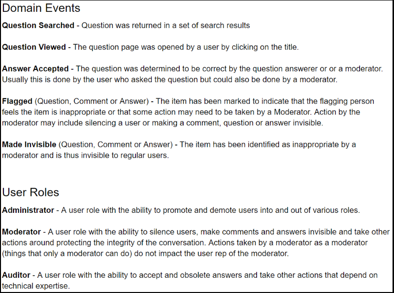
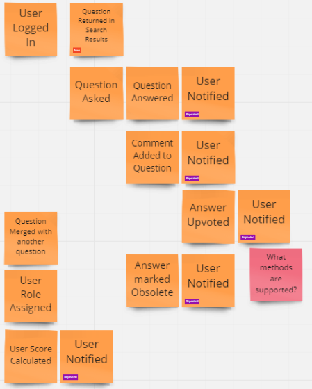
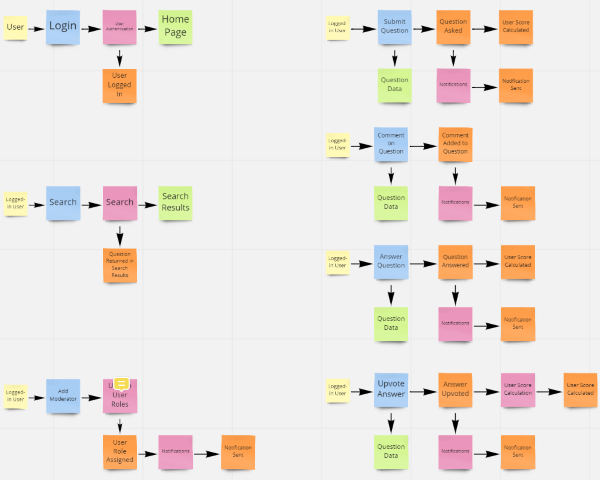
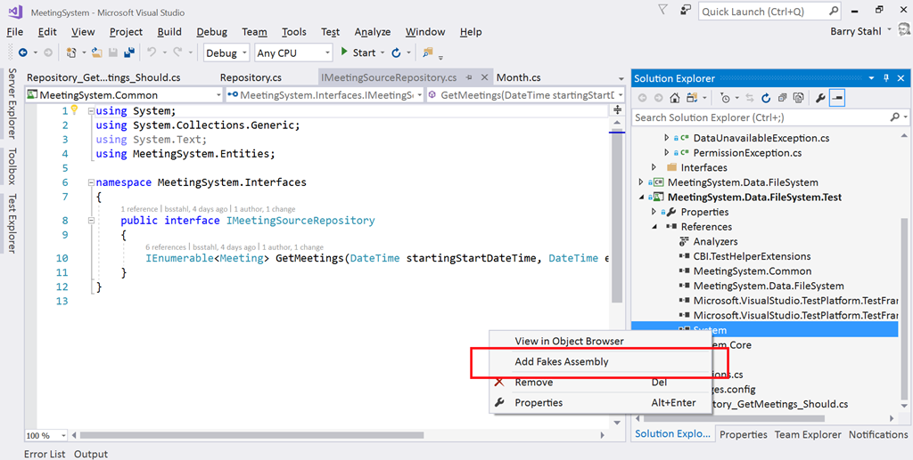
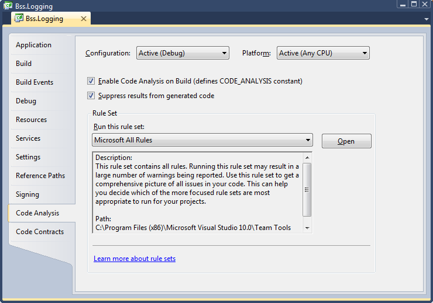
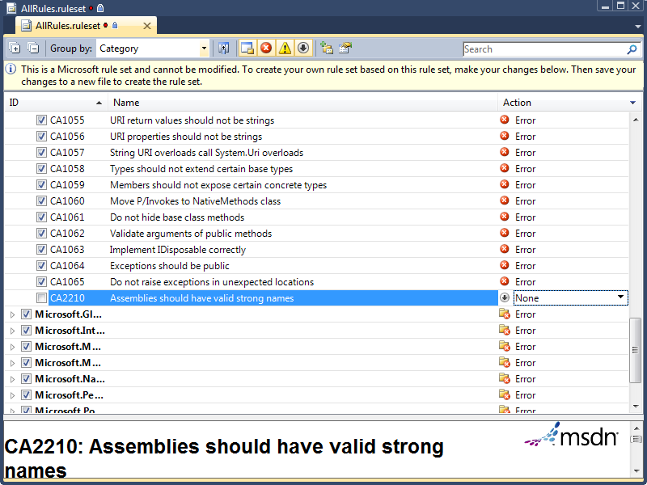
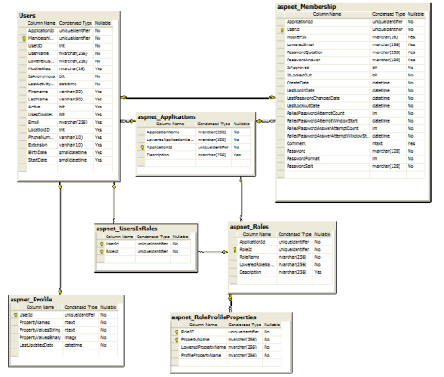

Tag: development
When VS Code Shows the Wrong Source Control View - Resolving Duplicate Icons
Posted by bsstahl on 2025-04-13 and Filed Under: development
Recently, I encountered a confusing issue with Visual Studio Code where the source control tab wasn't showing my modified files anymore. Git was correctly detecting changes since the git status command correctly showed modifications, but those changes weren't appearing in VS Code's source control panel. Instead, I was seeing a graph view of my repository history.
The Investigation
I turned to Claude Sonnet 3.7 (via the Cline extension in VS Code) for help troubleshooting this issue. We started with some basic diagnostics:
- First, we verified Git was working correctly by viewing modified fiels in the terminal using git status
- We checked VS Code's Git extensions and settings to see if anything was misconfigured
- Claude suggested trying the Ctrl+Shift+G keyboard shortcut, which immediately showed the correct view with my modified files
This last step was the key insight - pressing Ctrl+Shift+G showed the standard Source Control view with a list of modified files (what I wanted), but clicking the Source Control icon in the Activity Bar showed a different view (the graph view).
The Solution
After some investigation, we discovered the root cause: I had two different source control icons in my Activity Bar:
- One at the top labeled "Source Control" that showed the graph view
- One at the bottom (off-screen, requiring scrolling) labeled "Source Control (Ctrl-Shift-G)" that showed the view of changed files
The solution was simple:
- Remove the unwanted icon (the top one showing the graph view)
- Move the correct icon ("Source Control (Ctrl-Shift-G)") to a more visible position in the Activity Bar
After making these changes, clicking the Source Control icon in the Activity Bar now consistently shows my modified files, just like pressing Ctrl+Shift+G.
Why This Happens
VS Code allows multiple views with similar icons to coexist in the Activity Bar. This flexibility is powerful but can sometimes lead to confusion:
- Extensions can add their own source control-related views
- These views might use similar terminology and iconography
- Without careful attention to the hover labels, it's easy to confuse which icon does what
In my case, I had somehow ended up with duplicate Source Control icons in my Activity Bar, each showing different views of my repository.
Preventing Future Issues
To avoid similar confusion in the future, I will make sure that I:
- Hover over icons in the Activity Bar to see their full labels
- Pay attention to keyboard shortcuts listed in the labels (like "Ctrl-Shift-G")
- Right-click on the Activity Bar and review which views are enabled
- Remove the ones I use less frequently when I end up with multiple, similar icons.
Tags: vscode git source-control troubleshooting ui
Understanding the ID Entanglement Effect
Posted by bsstahl on 2025-02-01 and Filed Under: development
Every developer has faced it: the temptation to make identifiers "smarter" by embedding information. A customer ID that includes their region, an order number containing the date, a product code that encodes its category - these patterns appear innocent at first, even helpful. But they hide a subtle trap I call the "ID Entanglement Effect" - a cascade of complexity that emerges when identifiers become intertwined with business logic and mutable state.
This effect manifests when we blur the line between identification and information, creating a web of dependencies that grows increasingly difficult to maintain. What starts as a convenient shortcut often evolves into a significant source of technical debt, affecting everything from system flexibility to data integrity.
Critical Characteristics
Structural Dependency
Systems relying on a specific format for composite IDs become fragile. Any format change can disrupt functionality and complicate maintenance. For instance, if a system uses "DEPT-EMP-123" as an employee ID, changing the department code structure creates a difficult choice: either update all systems and databases that use this format (a risky and potentially expensive undertaking), or abandon the standard for new records while keeping old IDs in the legacy format. The latter option results in inconsistent IDs across the system where some follow the old standard and others follow the new one, effectively creating a partial, incomplete, and incorrect standard within the IDs themselves. This inconsistency further complicates maintenance and can lead to confusion and errors in data processing.
Data Parsing
When information is embedded in composite IDs, parsing them often appears to be the simplest solution - and it's a completely understandable choice when the data is readily available in the ID itself. Consider an order ID like "2024-01-NA-12345" containing year, region, and sequence number information. Using this embedded data seems more straightforward than querying additional fields or services. However, this parsing must be replicated across different applications and languages, increasing the risk of inconsistencies and errors. The only way to be sure we don't end up parsing these IDs, and in doing so bringing the ID Entanglement Effect into play, is to avoid creating systems that embed business data in identifiers in the first place.
Maintenance Complexity
Parsing logic embedded throughout the codebase increases complexity, making debugging and future development challenging. For example, if an order ID contains both a date and location code (like "20240129-PHX-1234"), every service that processes orders must implement and maintain the same parsing logic. When this logic needs to change, such as adding a new location format, developers must update and test the parsing code across multiple codebases, increasing the risk of inconsistencies.
Inflexibility
Composite IDs limit adaptability. Modifications can ripple through the system, complicating changes or scaling. For example, if a product ID includes a category code (like "TECH-LAPTOP-123"), adding new product categories or reorganizing the category hierarchy becomes a major undertaking. Similarly, if a customer ID includes a region code ("US-WEST-789"), business expansion to new regions or changes in regional organization can require extensive system updates.
Data Integrity Risks
Parsing composite IDs can lead to inconsistencies, especially in dynamic environments. Consider a system where we create product IDs by combining our supplier code with a sequence number (like "SUP123-WIDGET-456"). If the supplier's business is acquired and rebranded, or if the product's manufacturing moves to a different supplier, should all related IDs be updated? This creates significant challenges: either maintain increasingly inaccurate IDs, implement complex ID migration processes, or risk breaking existing references across the system.
Note that using a manufacturer's actual part number (like "ACME-WIDGET-123") as an opaque identifier is perfectly fine - the key is that we treat it as an unchanging reference and don't try to parse meaning from its structure. The ID Entanglement Effect occurs when we create our own composite IDs that encode business relationships or mutable state that we expect to parse and interpret later.
Security Vulnerabilities
Auto-incrementing integers, while simple, introduce significant security risks. Their predictable nature makes it easy for attackers to enumerate resources (like guessing user IDs to access profiles) or gather business intelligence (such as order volumes from sequential order numbers). They can also lead to race conditions in high-concurrency systems and make it difficult to merge data from different sources without ID conflicts.
Long-Term Impact
The ID Entanglement Effect compounds over time, creating increasingly complex challenges:
- Technical Debt: As systems evolve, the cost of maintaining and updating composite ID logic grows exponentially
- Integration Barriers: New systems and third-party integrations must implement complex parsing logic
- Performance Overhead: Constant parsing and validation of composite IDs impacts system performance
- Error Propagation: Mistakes in ID parsing can cascade through multiple systems
- Documentation Burden: Teams must maintain detailed documentation about ID formats and parsing rules
Prevention Strategies
To avoid the ID Entanglement Effect, consider these key strategies:
Use Clean, Stable Identifiers
- Treat all identifiers, especially those from external systems, as opaque strings whose sole purpose is to establish equivalence through exact matching. This is crucial because:
- It prevents accidental coupling to internal structures or business logic that may be embedded in the ID
- It ensures the system remains resilient to changes in ID format or structure
- It maintains compatibility with different ID generation schemes across systems
- It avoids assumptions about ID content that could break when integrating with new systems
- Generate unique identifiers that remain consistent over time
- Human-readable identifiers (like "ORDER-12345") are perfectly acceptable
- Avoid encoding mutable data or business logic in the identifier
- Use non-sequential identifiers (like UUIDs) to prevent enumeration attacks
- Consider the security implications of identifier patterns
Maintain Clear Boundaries
- Store business data in proper fields, not in the identifier
- Keep temporal data (dates, versions) in dedicated attributes
- Track status and metadata independently of the ID
Design for Change
- Assume business rules and categories will evolve
- Plan for system growth and new use cases
- Consider future integration requirements
Best Practices
When designing identifier systems:
- Keep IDs Clean: Use straightforward identifiers that don't encode mutable data
- Separate Concerns: Store business data, status, and metadata in dedicated fields
- Plan for Scale: Choose identifier formats that support future growth
- Consider Relations: Use proper database relationships instead of encoding hierarchies in IDs
- Document Clearly: Maintain clear documentation about identifier generation and usage
Conclusion
The ID Entanglement Effect represents a significant challenge in system design, where the convenience of composite IDs leads to long-term maintenance and scalability issues. By understanding these risks and following best practices for identifier design, teams can create more maintainable and adaptable systems. Remember: while identifiers can be human-readable, they should never become entangled with business logic or mutable state - this separation is key to maintaining system flexibility and reliability over time.
Tags: antipattern architecture coding-practices coupling flexibility
Code Coverage - The Essential Tool That Must Never Be Measured
Posted by bsstahl on 2024-09-14 and Filed Under: development
TLDR: Code Coverage is the Wrong Target
Code coverage metrics HURT code quality, especially when gating deployments, because they are a misleading target, prioritizing superficial benchmarks over meaningful use-case validation. A focus on achieving coverage percentages detracts from real quality assurance, as developers write tests that do what the targets insist that they do, satisfy coverage metrics rather than ensuring comprehensive use-case functionality.
When we measure code coverage instead of use-case coverage, we limit the value of the Code Coverage tools for the developer going forward as a means of identifying areas of concern within the code. If instead we implement the means to measure use-case coverage, perhaps using Cucumber/SpecFlow BDD tools, such metrics might become a valuable target for automation. Short of that, test coverage metrics and gates actually hurt quality rather than helping it.
- Do Not use code coverage as a metric, especially as a gate for software deployment.
- Do use BDD style tests to determine and measure the quality of software.
What is Code Coverage?
Code coverage measures the extent to which the source code of a program has been executed during the testing process. It is a valuable tool for developers to identify gaps in unit tests and ensure that their code is thoroughly tested. An example of the output of the Code Coverage tools in Visual Studio Enterprise from my 2015 article Remove Any Code Your Users Don't Care About can be seen below. In this example, the code path where the property setter was called with the same value the property already held, was not tested, as indicated by the red highlighting, while all other blocks in this code snippet were exercised by the tests as seen by the blue highlighting.

When utilized during the development process, Code Coverage tools can:
Identify areas of the codebase that haven't been tested, allowing developers to write additional tests to ensure all parts of the application function as expected.
Improve understanding of the tests by identifying what code is run during which tests.
Identify areas of misunderstanding, where the code is not behaving as expected, by visually exposing what code is executed during testing.
Focus testing efforts on critical or complex code paths that are missing coverage, ensuring that crucial parts of the application are robustly tested.
Identify extraneous code that is not executed during testing, allowing developers to remove unnecessary code and improve the maintainability of the application.
Maximize the value of Test-Driven Development (TDD) by providing immediate feedback on the quality of tests, including the ability for a developer to quickly see when they have skipped ahead in the process by creating untested paths.
All of these serve to increase trust in our unit tests, allowing the developers the confidence to "refactor ruthlessly" when necessary to improve the maintainability and reliability of our applications. However, they also depend on one critical factor, that when an area shows in the tooling as covered, the tests that cover it do a good job of guaranteeing that the needs of the users are met by that code. An area of code that is covered, but where the tests do not implement the use-cases that are important to the users, is not well-tested code. Unfortunately, this is exactly what happens when we use code coverage as a metric.
The Pitfalls of Coverage as a Metric
A common misunderstanding in our industry is that higher code coverage equates to greater software quality. This belief can lead to the idea of using code coverage as a metric in attempts to improve quality. Unfortunately, this well-intentioned miscalculation generally has the opposite effect, a reduction in code quality and test confidence.
Goodhart's Law
Goodhart's Law states that "When a measure becomes a target, it ceases to be a good measure." We have seen this principle play out in many areas of society, including education (teaching to the test), healthcare (focus on throughput rather than patient outcomes), and social media (engagement over truth).
This principle is particularly relevant when it comes to code coverage metrics. When code coverage is used as a metric, developers will do as the metrics demand and produce high coverage numbers. Usually this means writing one high-quality test for the "happy path" in each area of the code, since this creates the highest percentage of coverage in the shortest amount of time. It should be clear that these are often good, valuable tests, but they are not nearly the only tests that need to be written.
Problems as outlined in Goodhart's Law occur because a metric is nearly always a proxy for the real goal. In the case of code coverage, the goal is to ensure that the software behaves as expected in all use-cases. The metric, however, is a measure of how many lines of code have been executed by the tests. This is unfortunately NOT a good proxy for the real goal, and is not likely to help our quality, especially in the long-run. Attempting to use Code Coverage in this way is akin to measuring developer productivity based on the number of lines of code they create -- it is simply a bad metric.
A Better Metric
If we want to determine the quality of our tests, we need to measure the coverage of our use-cases, not our code. This is more difficult to measure than code coverage, but it is a much better proxy for the real goal of testing. If we can measure how well our code satisfies the needs of the users, we can be much more confident that our tests are doing what they are supposed to do -- ensuring that the software behaves as expected in all cases.
The best tools we have today to measure use-case coverage are Behavior Driven Development tools like Cucumber, for which the .NET implementation is called SpecFlow. These tools test how well our software meets the user's needs by helping us create test that focus on how the users will utilize our software. This is a much better proxy for the real goal of testing, and is much more likely to help us achieve our quality goals.
The formal language used to describe these use-cases is called Gherkin, and uses a Given-When-Then construction. An example of one such use-case test for a simple car search scenario might look like this:

These Gherkin scenarios, often created by analysts, are translated into executable tests using step definitions. Each Gherkin step (Given, When, Then) corresponds to a method in a step definition file created by a developer, where annotations or attributes bind these steps to the code that performs the actions or checks described. This setup allows the BDD tool to execute the methods during test runs, directly interacting with the application and ensuring that its behavior aligns with defined requirements.
Since these tests exercise the areas of the code that are important to the users, coverage metrics here are a much better proxy for the real goal of testing, because they are testing the use-cases that are important to the users. If an area of code is untested by BDD style tests, that code is either unnecessary or we are missing use-cases in our tests.
Empowering Developers: Code Coverage Tools, Visualization, and Use Case Coverage
One of the most powerful aspects of code coverage tools are their data visualizations, allowing developers to assess which lines of code have been tested and which have not, right inside the code in the development environment. This visualization transcends the mere percentage or number of lines covered, adding significant value to the development process and enabling developers to make informed decisions about where to focus their testing efforts.
By permitting developers to utilize code coverage tools and visualization without turning them into a metric, we can foster enhanced software quality and more comprehensive testing. By granting developers the freedom to use these tools and visualize their code coverage, they can better identify gaps in their testing and concentrate on covering the most critical use cases. If instead of worrying about how many lines of code are covered, we focus on what use-cases are covered, we create better software by ensuring that the most important aspects of the application are thoroughly tested and reliable.
Creating an Environment that Supports Quality Development Practices
Good unit tests that accurately expose failures in our code are critical for the long-term success of development teams. As a result, it is often tempting to jump on metrics like code coverage to encourage developers to "do the right thing" when building software. Unfortunately, this seemingly simple solution is almost always the wrong approach.
Encourage Good Testing Practices without Using Code Coverage Metrics
So how do we go about encouraging developers to build unit tests that are valuable and reliable without using code coverage metrics? The answer is that we don't. A culture of quality development practices is built on trust, not metrics. We must trust our developers to do the right thing, and create an environment where they are empowered to do the job well rather than one that forces them to write tests to satisfy a metric.
Developers want to excel at their jobs, and never want to create bugs. No matter how much of a "no blame" culture we have, or how much we encourage them to "move fast and break things", developers will always take pride in their work and want to create quality software. Good tests that exercise the code in ways that are important to the users are a critical part of that culture of quality that we all want. We don't need to force developers to write these tests, we just need to give them the tools and the environment in which to do so.
There are a number of ways we can identify when this culture is not yet in place. Be on the lookout for any of these signs:
- Areas of code where, every time something needs to change, the developers first feel it necessary to write a few dozen tests so that they have the confidence to make the change, or where changes take longer and are more error-prone because developers can't be confident in the code they are modifying.
- Frequent bugs or failures in areas of the code that represent key user scenarios. This suggests that tests may have been written to create code coverage rather than to exercise the important use-cases.
- A developer whose code nobody else wants to touch because it rarely has tests that adequately exercise the important features.
- Regression failures where previous bugs are reintroduced, or exposed in new ways, because the early failures were not first covered by unit tests before fixing them.
The vast majority of developers want to do their work in an environment where they don't have to worry when asked to making changes to their teammates' code because they know it is well tested. They also don't want to put their teammates in situations where they are likely to fail because they had to make a change when they didn't have the confidence to do so, or where that confidence was misplaced. Nobody wants to let a good team down. It is up to us to create an environment where that is possible.
Conclusion: Code Coverage is a Developer's Tool, Not a Metric
Code coverage is an invaluable tool for developers, but it should not be misused as a superficial metric. By shifting our focus from the number of code blocks covered to empowering developers with the right tools and environment, we can ensure software quality through proper use-case coverage. We must allow developers to utilize these valuable tools, without diluting their value by using them as metrics.
Tags: development testing principle code-coverage
Objects with the Same Name in Different Bounded Contexts
Posted by bsstahl on 2023-10-29 and Filed Under: development
Imagine you're working with a Flight entity within an airline management system. This object exists in at least two (probably more) distinct execution spaces or 'bounded contexts': the 'passenger pre-purchase' context, handled by the sales service, and the 'gate agent' context, managed by the Gate service.
In the 'passenger pre-purchase' context, the 'Flight' object might encapsulate attributes like ticket price and seat availability and have behaviors such as 'purchase'. In contrast, the 'gate agent' context might focus on details like gate number and boarding status, and have behaviors like 'check-in crew member' and 'check-in passenger'.
Some questions often arise in this situation: Should we create a special translation between the flight entities in these two contexts? Should we include the 'Flight' object in a Shared Kernel to avoid duplication, adhering to the DRY (Don't Repeat Yourself) principle?
My default stance is to treat objects with the same name in different bounded contexts as distinct entities. I advocate for each context to have the autonomy to define and operate on its own objects, without the need for translation or linking. This approach aligns with the principle of low coupling, which suggests that components should be as independent as possible.

In the simplified example shown in the graphic, both the Sales and Gate services need to know when a new flight is created so they can start capturing relevant information about that flight. There is nothing special about the relationship however. The fact that the object has the same name, and in some ways represents an equivalent concept, is immaterial to those subsystems. The domain events are captured and acted on in the same way as they would be if the object did not have the same name.
You can think about it as analogous to a relational database where there are two tables that have columns with the same names. The two columns may represent the same or similar concepts, but unless there are referential integrity rules in place to force them to be the same value, they are actually distinct and should be treated as such.
I do recognize that there are likely to be situations where a Shared Kernel can be beneficial. If the 'Flight' object has common attributes and behaviors that are stable and unlikely to change, including it in the Shared Kernel could reduce duplication without increasing coupling to an unnaceptable degree, especially if there is only a single team developing and maintaining both contexts. I have found however, that this is rarely the case, especially since, in many large and/or growing organizations, team construction and application ownership can easily change. Managing shared entities across multiple teams usually ends up with one of the teams having to wait for the other, hurting agility. I have found it very rare in my experience that the added complexity of an object in the Shared Kernel is worth the little bit of duplicated code that is removed, when that object is not viewed identically across the entire domain.
Ultimately, the decision to link objects across bounded contexts or include them in a Shared Kernel should be based on a deep understanding of the domain and the specific requirements and constraints of the project. If it isn't clear that an entity is seen identically across the entirety of a domain, distinct views of that object should be represented separately inside their appropriate bounded contexts. If you are struggling with this type of question, I reccommend Event Storming to help gain the needed understanding of the domain.
Tags: development principle ddd
Feature Flags: Don't Roll Your Own
Posted by bsstahl on 2023-08-14 and Filed Under: development
In my previous post, I discussed situations where we tend to overvalue visible costs and undervalue more hidden costs. One example of this dynamic is the tendency to want to roll-your-own feature-flagging system.
Feature flags are a powerful tool for controlling the availability and behavior of features in your software. They allow you to turn features on or off at runtime, without deploying new code, and target specific segments of users with different variations of your features. This enables you to experiment, test, and release features faster and safer than ever before.
But feature flags are not something you should implement yourself. Rolling your own feature flags may seem like a simple and cost-effective solution, but it comes with many hidden pitfalls and risks that can undermine your software quality, performance, security, and maintainability. Ultimately, rolling your own feature flag system may end up costing you much more than using an existing product.
We should always have a strong bias against building anything that falls outside of our team's core competencies, but feature flags in particular have their own special set of concerns, especially since, on the surface, it seems like such a simple problem.
Here are some of the specific reasons why you should avoid rolling your own feature flags:
Complexity: Implementing feature flags requires more than just adding some if statements to your code. You need to design a robust system for managing, storing, updating, evaluating, and auditing your feature flags across different environments, platforms, services, and teams. You also need to handle edge cases such as flag dependencies, conflicts, defaults, fallbacks, rollbacks, etc. This adds a lot of complexity and overhead to your codebase that can introduce bugs, errors, inconsistencies, and technical debt.
Performance: Evaluating feature flags at runtime can have a significant impact on your application's performance if not done properly. You need to ensure that your feature flag system is fast, scalable, reliable, resilient, and secure. You also need to optimize your flag evaluation logic for minimal latency and resource consumption. If you roll your own feature flags without proper performance testing and monitoring tools, you may end up slowing down or crashing your application due to excessive network calls, database queries, memory usage, or CPU cycles.
Security: Feature flags can expose sensitive information or functionality that should not be accessible by unauthorized users or attackers. You need to ensure that your feature flag system is secure from both internal and external threats. You also need to comply with any regulatory or legal requirements for data privacy and protection. If you roll your own feature flags without proper security measures and best practices, you may end up leaking confidential data or compromising your application's integrity.
Maintainability: Feature flags are meant to be temporary switches that enable or disable features until they are ready for full release or removal. However, if you roll your own feature flags without proper management tools and processes, you may end up with a large number of stale or unused flags that clutter or pollute your codebase. This makes it harder to understand or modify your code, increases the risk of errors or conflicts, and reduces the readability or testability of your code.
As you can see, rolling your own feature flags is not as easy as it sounds. It requires a lot of time, effort, skill, and discipline to do it well. And even if you manage that nebulous challenge at rollout, you still have to maintain and extend the system for the life of the products that use it.
That's why you should use a feature flag management platform instead. A feature flag management platform provides you with all the tools and services you need to implement and manage feature flags effectively and efficiently.
With a feature flag management platform:
You can create and update feature flags easily using a user-friendly interface or API.
You can target specific segments of users based on various criteria such as location, device type, user behavior, etc.
You can monitor and measure the impact of your features on key metrics such as conversion rates, engagement levels, error rates, etc.
You can control the rollout speed and strategy of your features using various methods such as percentage-based splits, canary releases, blue-green deployments, etc.
You can integrate with various tools such as CI/CD pipelines, testing frameworks, analytics platforms, etc. to streamline your development and delivery workflows.
You can ensure the performance, security, reliability, scalability, of your feature flag system using advanced techniques such as caching, encryption, failover mechanisms, load balancing, etc.
You can manage the lifecycle of your feature flags using best practices such as naming conventions, documentation, flag retirement policies, etc.
A feature flag management platform takes care of all these aspects for you, so you can focus on building and delivering great features for your customers.
There are many feature flag management platforms available in the market, such as LaunchDarkly, Split, Optimizely, Taplytics, etc. Each platform has its own features, pricing, and integrations that you can compare and choose from based on your needs and preferences.
However, regardless of which platform you use, there are some best practices that you should follow when using feature flags. These best practices will help you avoid common pitfalls and maximize the benefits of feature flags for your software development and delivery process.
Here are some of the best practices that you should know:
Use a consistent system for feature flag management: It doesn't matter if you use a feature flag management tool or a custom solution, as long as you have a consistent system for creating, updating, and deleting your feature flags. You should also have a clear ownership and accountability model for each flag, so that you know who is responsible for what.
Set naming conventions for different types of feature flags: You can implement feature flags to achieve many different goals, such as testing, experimenting, releasing, or hiding features. You should use descriptive and meaningful names for your flags that indicate their purpose and scope. You should also use prefixes or suffixes to distinguish between different types of flags, such as release flags, experiment flags, kill switches, etc.
Make it easy to switch a flag on/off: You should be able to turn a feature flag on or off with minimal effort and delay. You should also be able to override or modify a flag's settings at any time without redeploying your code. This will allow you to react quickly and flexibly to any changes or issues that may arise during your feature development or delivery cycle.
Make feature flag settings visible: You should be able to see and monitor the current state and configuration of each feature flag at any given time. You should also be able to track and audit the history and usage of each flag across different environments, platforms, services, and teams. This will help you ensure transparency and traceability of your feature development and delivery process.
Clean up obsolete flags: You should remove any feature flags that are no longer needed or used as soon as possible. This will prevent cluttering or polluting your codebase with unnecessary or outdated code paths that can increase complexity or introduce errors or conflicts¹⁶.
Some additional recommendations are:
Avoid dependencies between flags: You should avoid creating complex dependencies or interactions between different feature flags that can make it hard to understand or predict their behavior or impact. You should also avoid nesting or chaining multiple flags within each other that can increase latency or resource consumption.
Use feature switches to avoid code branches: You should use simple boolean expressions to evaluate your feature flags rather than creating multiple code branches with if/else statements. This will reduce code duplication and improve readability and testability of your code.
Use feature flags for small test releases: You should use feature flags to release small batches of features incrementally rather than releasing large groups of features altogether. This will allow you to test and validate your features with real users in production without affecting everyone at once. It will also enable you to roll back or fix any issues quickly if something goes wrong.
By following these best practices, you can leverage the power of feature flags without compromising on quality, performance, security, or maintainability.
Some Open Source Feature Flag Systems
Yes, there are some open source projects that support feature flag management. For example:
GrowthBook: GrowthBook is an open source feature management and experimentation platform that helps your engineering team adopt an experimentation culture. It enables you to create gradual or canary releases with user targeting, run A/B tests, track key metrics, and integrate with various data sources.
Flagsmith: Flagsmith is an open source feature flag and remote config service that makes it easy to create and manage features flags across web, mobile, and server side applications. It allows you to control feature access, segment users, toggle features on/off, and customize your app behavior without redeploying your code.
Unleash: Unleash is an open source feature flag management system that helps you deploy new features at high speed. It lets you decouple deployment from release, run experiments easily, scale as your business grows, and integrate with various tools and platforms.
These are just some examples of open source feature flag management projects. There may be others that suit your needs better.
Feature flags are an essential tool for modern software development and delivery. They enable you to deliver faster, safer, and better features for your customers while reducing risk and cost. But don't try to roll your own feature flags unless you have a good reason and enough resources to do so. Instead, use a professional feature flag management platform that provides you with all the tools and services you need to implement and manage feature flags effectively and efficiently.
Disclaimer: My teams use LaunchDarkly for feature-flagging but I am not affiliated with that product or company in any way. I am also not associated with any similar product or company that makes such a product and have not received, nor will I receive, any compensation of any type, either direct or indirect, for this article.
Tags: architecture coding-practices
Consider Quality Before Cost in Application Development
Posted by bsstahl on 2023-08-04 and Filed Under: development
Assessing the costs associated with using a specific tool is usually more straightforward than evaluating the less tangible costs related to an application's life-cycle, such as those tied to quality. This can result in an excessive focus on cost optimization, potentially overshadowing vital factors like reliability and maintainability.
As an example, consider a solution that uses a Cosmos DB instance. It is easy to determine how much it costs to use that resource, since the Azure Portal gives us good estimates up-front, and insights as we go. It is much more difficult to determine how much it would cost to build the same functionality without the use of that Cosmos DB instance, and what the scalability and maintainability impacts of that decision would be.
In this article, we will consider a set of high-level guidelines that can help you identify when to consider costs during the development process. By following these guidelines, you can make it more likely that your dev team accurately prioritizes all aspects of the application without falling into the trap of over-valuing easily measurable costs.
1. Focus on Quality First
As a developer, your primary objective should be to create applications that meet the customers needs with the desired performance, reliability, scalability, and maintainability characteristics. If we can meet a user need using a pre-packaged solution such as Cosmos DB or MongoDB, we should generally do so. While there are some appropriate considerations regarding cost here, the primary focus of the development team should be on quality.
Using Cosmos DB as an example, we can leverage its global distribution, low-latency, and high-throughput capabilities to build applications that cater to a wide range of user needs. If Cosmos DB solves the current problem effectively, we probably shouldn't even consider building without it or an equivalent tool, simply for cost savings. An additional part of that calculus, whether or not we consider the use of that tool a best-practice in our organization, falls under item #2 below.
2. Employ Best Practices and Expert Advice
During the development of an application, it's essential to follow best practices and consult experts to identify areas for improvement or cost-effectiveness without compromising quality. Since most problems fall into a type that has already been solved many times, the ideal circumstance is that there is already a best-practice for solving problems of the type you are currently facing. If your organization has these best-practices or best-of-breed tools identified, there is usually no need to break-out of that box.
In the context of Cosmos DB, you can refer to Microsoft's performance and optimization guidelines or consult with your own DBAs to ensure efficient partitioning, indexing, and query optimization. For instance, you can seek advice on choosing the appropriate partition key to ensure even data distribution and avoid hot-spots. Additionally, you can discuss the optimal indexing policy to balance the trade-off between query performance and indexing cost, and define the best time-to-live (TTL) for data elements that balance the need for historical data against query costs. If you are seeing an uneven distribution of data leading to higher consumption of RU/s, you can look at adjusting the partition key. If you need to query data in several different ways, you might consider using the Materialized View pattern to make the same data queryable using different partitioning strategies. All of these changes however have their own implementation costs, and potentially other costs, that should be considered.
3. Establish Cost Thresholds
Defining acceptable cost limits for different aspects of your application ensures that costs don't spiral out of control while maintaining focus on quality. In the case of Cosmos DB, you can set cost thresholds for throughput (RU/s), storage, and data transfer. For instance, you can define a maximum monthly budget for provisioned throughput based on the expected workload and adjust it as needed. This can help you monitor and control costs without affecting the application's performance. You can also setup alerts to notify you when the costs exceed the defined thresholds, giving you an opportunity to investigate and take corrective action.
Limits can be defined similarly to the way any other SLA is defined, generally by looking at existing systems and determining what normal looks like. This mechanism has the added benefit of treating costs in the same way as other metrics, making it no more or less important than throughput, latency, or uptime.
4. Integrate Cost Checks into Code Reviews and Monitoring
A common strategy for managing costs is to introduce another ceremony specifically related to spend, such as a periodic cost review. Instead of creating another mandated set of meetings that tend to shift the focus away from quality, consider incorporating cost-related checks into your existing code review and monitoring processes, so that cost becomes just one term in the overall equation:
- Code review integration: During code review sessions, include cost-related best practices along with other quality checks. Encourage developers to highlight any potential cost inefficiencies or violations of best practices that may impact the application's costs in the same way as they highlight other risk factors. Look for circumstances where the use of resources is unusual or wasteful.
- Utilize tools for cost analysis: Leverage tools and extensions that can help you analyze and estimate costs within your development environment. For example, you can use Azure Cost Management tools to gain insights into your Cosmos DB usage patterns and costs. Integrating these tools into your development process can help developers become more aware of the cost implications of their code changes, and act in a similar manner to quality analysis tools, making them just another piece of the overall puzzle, instead of a special-case for costs.
- Include cost-related SLOs: As part of your performance monitoring, include cost-related SLIs and SLOs, such as cost per request or cost per user, alongside other important metrics like throughput and latency. This will help you keep an eye on costs without overemphasizing them and ensure they are considered alongside other crucial aspects of your application.
5. Optimize Only When Necessary
If cost inefficiencies are identified during code reviews or monitoring, assess the trade-offs and determine if optimization is necessary without compromising the application's quality. If cost targets are being exceeded by a small amount, and are not climbing rapidly, it may be much cheaper to simply adjust the target. If target costs are being exceeded by an order-of-magnitude, or if they are rising rapidly, that's when it probably makes sense to address the issues. There may be other circumstances where it is apporpriate to prioritize these types of costs, but always be aware that there are costs to making these changes too, and they may not be as obvious as those that are easily measured.
Conclusion
Balancing quality and cost in application development is crucial for building successful applications. By focusing on quality first, employing best practices, establishing cost thresholds, and integrating cost checks into your existing code review and monitoring processes, you can create an environment that considers all costs of application development, without overemphasizing those that are easy to measure.
Tags: architecture coding-practices reliability
Continuing a Conversation on LLMs
Posted by bsstahl on 2023-04-13 and Filed Under: tools
This post is the continuation of a conversation from Mastodon. The thread begins here.
Update: I recently tried to recreate the conversation from the above link and had to work far harder than I would wish to do so. As a result, I add the following GPT summary of the conversation. I have verified this summary and believe it to be an accurate, if oversimplified, representation of the thread.
The thread discusses the value and ethical implications of Language Learning Models (LLMs).
@arthurdoler@mastodon.sandwich.net criticizes the hype around LLMs, arguing that they are often used unethically, or suffer from the same bias and undersampling problems as previous machine learning models. He also questions the value they bring, suggesting they are merely language toys that can't create anything new but only reflect what already exists.
@bsstahl@CognitiveInheritance.com, however, sees potential in LLMs, stating that they can be used to build amazing things when used ethically. He gives an example of how even simple autocomplete tools can help generate new ideas. He also mentions how earlier LLMs like Word2Vec were able to find relationships that humans couldn't. He acknowledges the potential dangers of these tools in the wrong hands, but encourages not to dismiss them entirely.
@jeremybytes@mastodon.sandwich.net brings up concerns about the misuse of LLMs, citing examples of false accusations made by ChatGPT. He points out that people are treating the responses from these models as facts, which they are not designed to provide.
@bsstahl@CognitiveInheritance.com agrees that misuse is a problem but insists that these tools have value and should be used for legitimate purposes. He argues that if ethical developers don't use these tools, they will be left to those who misuse them.
I understand and share your concerns about biased training data in language models like GPT. Bias in these models exists and is a real problem, one I've written about in the past. That post enumerates my belief that it is our responsibility as technologists to understand and work around these biases. I believe we agree in this area. I also suspect that we agree that the loud voices with something to sell are to be ignored, regardless of what they are selling. I hope we also agree that the opinions of these people should not bias our opinions in any direction. That is, just because they are saying it, doesn't make it true or false. They should be ignored, with no attention paid to them whatsoever regarding the truth of any general proposition.
Where we clearly disagree is this: all of these technologies can help create real value for ourselves, our users, and our society.
In some cases, like with crypto currencies, that value may never be realized because the scale that is needed to be successful with it is only available to those who have already proven their desire to fleece the rest of us, and because there is no reasonable way to tell the scammers from legit-minded individuals when new products are released. There is also no mechanism to prevent a takeover of such a system by those with malicious intent. This is unfortunate, but it is the state of our very broken system.
This is not the case with LLMs, and since we both understand that these models are just a very advanced version of autocomplete, we have at least part of the understanding needed to use them effectively. It seems however we disagree on what that fact (that it is an advanced autocomplete) means. It seems to me that LLMs produce derivative works in the same sense (not method) that our brains do. We, as humans, do not synthesize ideas from nothing, we build on our combined knowledge and experience, sometimes creating things heretofore unseen in that context, but always creating derivatives based on what came before.
Word2Vec uses a 60-dimensional vector store. GPT-4 embeddings have 1536 dimensions. I certainly cannot consciously think in that number of dimensions. It is plausible that my subconscious can, but that line of thinking leads to the the consideration of the nature of consciousness itself, which is not a topic I am capable of debating, and somewhat ancillary to the point, which is: these tools have value when used properly and we are the ones who can use them in valid and valuable ways.
The important thing is to not listen to the loud voices. Don't even listen to me. Look at the tools and decide for yourself where you find value, if any. I suggest starting with something relatively simple, and working from there. For example, I used Bing chat during the course of this conversation to help me figure out the right words to use. I typed in a natural-language description of the word I needed, which the LLM translated into a set of possible intents. Bing then used those intents to search the internet and return results. It then used GPT to summarize those results into a short, easy to digest answer along with reference links to the source materials. I find this valuable, I think you would too. Could I have done something similar with a thesaurus, sure. Would it have taken longer: probably. Would it have resulted in the same answer: maybe. It was valuable to me to be able to describe what I needed, and then fine-tune the results, sometimes playing-off of what was returned from the earlier requests. In that way, I would call the tool a force-multiplier.
Yesterday, I described a fairly complex set of things I care to read about when I read social media posts, then asked the model to evaluate a bunch of posts and tell me whether I might care about each of those posts or not. I threw a bunch of real posts at it, including many where I was trying to trick it (those that came up in typical searches but I didn't really care about, as well as the converse). It "understood" the context (probably due to the number of dimensions in the model and the relationships therein) and labeled every one correctly. I can now use an automated version of this prompt to filter the vast swaths of social media posts down to those I might care about. I could then also ask the model to give me a summary of those posts, and potentially try to synthesize new information from them. I would not make any decisions based on that summary or synthesis without first verifying the original source materials, and without reasoning on it myself, and I would not ever take any action that impacts human beings based on those results. Doing so would be using these tools outside of their sphere of capabilities. I can however use that summary to identify places for me to drill-in and continue my evaluation, and I believe, can use them in certain circumstances to derive new ideas. This is valuable to me.
So then, what should we build to leverage the capabilities of these tools to the benefit of our users, without harming other users or society? It is my opinion that, even if these tools only make it easier for us to allow our users to interact with our software in more natural ways, that is, in itself a win. These models represent a higher-level of abstraction to our programming. It is a more declarative mechanism for user interaction. With any increase in abstraction there always comes an increase in danger. As technologists it is our responsibility to understand those dangers to the best of our abilities and work accordingly. I believe we should not be dismissing tools just because they can be abused, and there is no doubt that some certainly will abuse them. We need to do what's right, and that may very well involve making sure these tools are used in ways that are for the benefit of the users, not their detriment.
Let me say it this way: If the only choices people have are to use tools created by those with questionable intent, or to not use these tools at all, many people will choose the easy path, the one that gives them some short-term value regardless of the societal impact. If we can create value for those people without malicious intent, then the users have a choice, and will often choose those things that don't harm society. It is up to us to make sure that choice exists.
I accept that you may disagree. You know that I, and all of our shared circle to the best of my knowledge, find your opinion thoughtful and valuable on many things. That doesn't mean we have to agree on everything. However, I hope that disagreement is based on far more than just the mistrust of screaming hyperbolists, and a misunderstanding of what it means to be a "overgrown autocomplete".
To be clear here, it is possible that it is I who is misunderstanding these capabilities. Obviously, I don't believe that to be the case but it is always a possibility, especially as I am not an expert in the field. Since I find the example you gave about replacing words in a Shakespearean poem to be a very obvious (to me) false analog, it is clear that at lease one of us, perhaps both of us, are misunderstanding its capabilities.
I still think it would be worth your time, and a benefit to society, if people who care about the proper use of these tools, would consider how they could be used to society's benefit rather than allowing the only use to be by those who care only about extracting value from users. You have already admitted there are at least "one and a half valid use cases for LLMs". I'm guessing you would accept then that there are probably more you haven't seen yet. Knowing that, isn't it our responsibility as technologists to find those uses and work toward creating the better society we seek, rather than just allowing extremists to use it to our detriment.
Update: I realize I never addressed the issue of the models being trained on licensed works.
Unless a model builder has permission from a user to train their models using that user's works, be it an OSS or Copyleft license, explicit license agreement, or direct permission, those items should not be used to train models. If it is shown that a model has been trained using such data sets, and there have been indications (unproven as yet to my knowledge) that this may be the case for some models, especially image-generators, then that is a problem with those models that needs to be addressed. It does not invalidate the general use of these models, nor is it an indictment of any person or model except those in violation. Our trademark and copyright systems are another place where we, as a society, have completely fallen-down. Hopefully, that collapse will not cause us to forsake the value that these tools can provide.
Tags: coding-practices development enterprise responsibility testing ai algorithms ethics mastodon
Microservices: Size Doesn't Matter, Reliability Does
Posted by bsstahl on 2023-02-20 and Filed Under: development
There are conflicting opinions among architects about how many microservices a distributed system should have, and the size of those services. Some may say that a particular design has too many microservices, and that it should be consolidated into fewer, larger services to reduce deployment and operational complexity. Others may say that the same design doesn't have enough microservices, and that it should be broken-down into smaller, more granular services to reduce code complexity and improve team agility. Aside from the always true and rarely helpful "it depends...", is there good guidance on the subject?
The truth is, the number and size of microservices is not a measure of quality or performance unto itself, it is a design decision based on one primary characteristic, Reliability. As such, there is a simple rule guiding the creation of services, but it isn't based on the size or quantity of services. The rule is based entirely on how much work a service does.
After security, reliability is the most important attribute of any system, because it affects the satisfaction of both the users and developers, as well as the productivity and agility of the development and support teams. A reliable system has the following characteristics:
- It performs its duties as expected
- It has minimal failures where it has to report to the user that it is unable to perform its duties
- It has minimal downtime when it cannot be reached and opportunities may be lost
- It recovers itself automatically when outages do occur, without data loss
Having reliable systems means that your support engineers won't be constantly woken-up in the middle of the night to deal with outages, and your customers will remain satisfied with the quality of the product.
How do we build reliable systems with microservices?
The key to building reliable systems using microservices is to follow one simple rule: avoid dual-writes. A dual-write is when a service makes more than one change to system state within an execution context. Dual-writes are the enemy of reliability, because they create the risk of inconsistency, data loss, and data corruption.
For example, a web API that updates a database and sends a message to a queue during the execution of a single web request is performing a dual-write since it is making two different changes to the state of the system, and both of the changes are expected to occur reliably. If one of the writes succeeds and the other fails, the system state becomes out of sync and system behavior becomes unpredictable. The errors created when these types of failures occur are often hard to find and remediate because they can present very differently depending on the part of the process being executed when the failure happened.
The best-practice is to allow microservices to perform idempotent operations like database reads as often as they need, but to only write data once. An atomic update to a database is an example of such a write, regardless of how many tables or collections are updated during that process. In this way, we can keep the state of each service consistent, and the system behavior deterministic. If the process fails even part-way through, we know how to recover, and can often do it automatically.
Building this type of system does require a change in how we design our services. In the past, it was very common for us to make multiple changes to a system's state, especially inside a monolithic application. To remain reliable, we need to leverage tools like Change Data Capture (CDC), which is available in most modern database systems, or the Transactional Outbox Pattern so that we can write our data once, and have that update trigger other activities downstream.
Since microservices are sized to avoid dual-writes, the number of microservices in a system is determined by what they do and how they interact. The number of microservices is not a fixed or arbitrary number, but a result of the system design and the business needs. By following the rule of avoiding dual-writes, you can size your microservices appropriately, and achieve a system that is scalable and adaptable, but most of all, reliable. Of course, this practice alone will not guarantee the reliability of your systems, but it will make reliability possible, and is the best guideline I've found for sizing microservices.
For more detail on how to avoid the Dual-Writes Anti-Pattern, please see my article from December 2022 on The Execution Context.
Tags: architecture coding-practices event-driven microservices reliability soa
Simple Linear Regression
Posted by bsstahl on 2023-02-13 and Filed Under: development
My high-school chemistry teacher, Mrs. J, had a name for that moment when she could see the lightbulb go on over your head. You know, that instant where realization hits and a concept sinks-in and becomes part of your consciousness. The moment that you truly "Grok" a principle. She called that an "aha experience".
One of my favorite "aha experiences" from my many years as a Software Engineer, is when I realized that the simplest neural network, a model with one input and one output, was simply modeling a line, and that training such a model, was just performing a linear regression. Mind. Blown.
In case you haven't had this particular epiphany yet, allow me to go into some detail. I also discuss this in my conference talk, A Developer's Introduction to Artificial Intelligences.
Use Case: Predict the Location of a Train
Let's use the example of predicting the location of a train. Because they are on rails, trains move in 1-dimensional space. We can get a good approximation of their movement, especially between stops, by assuming they travel at a consistent speed. As a result, we can make a reasonably accurate prediction of a train's distance from a particular point on the rail, using a linear equation.
If we have sensors reporting the location and time of detection of our train, spread-out across our fictional rail system, we might be able to build a graph of these reports that looks something like this:

I think it is clear that this data can be represented using a "best-fit line". Certainly there is some error in the model, perhaps due to sensor or reporting errors, or maybe just to normal variance of the data. However, there can be no doubt that the best fit for this data would be represented as a line. In fact, there are a number of tools that can make it very easy to generate such a line. But what does that line really represent? To be a "best-fit", the line needs to be drawn in such a way as to minimize the differences between the values found in the data and the values on the line. Thus, the total error between the values predicted by our best-fit line, and the actual values that we measured, is as small as we can possibly get it.
A Linear Neural Network
A simple neural network, one without any hidden layers, consists of one or more input nodes, connected with edges to one or more output nodes. Each of the edges has a weight and each output node has a bias. The values of the output nodes are calculated by summing the product of each input connected to it, along with its corresponding weight, and adding in the output node's bias. Let's see what our railroad model might look like using a simple neural network.

Ours is the simplest possible neural network, one input connected to one output, where our X value (time) is the input and the output Y is our prediction of the distance the train has traveled in that time. To make the best prediction we need to determine the values for the weight of the edge m and the bias of the output node b that produce the output that minimizes the errors in the model.
The process of finding the weights and biases values for a neural network that minimize the error is know as Training the model. Once these values are determined, we use the fact that we multiply the weight by the input (m * X) and add in the bias. This gives us an equation in the form:
Y = mX + b
You may recognize this as the slope-intercept form of the equation for a line, where the slope m represents the speed of the train, and the bias b represents the starting distance from the origin. Once our training process gives us values for m and b, we can easily plug-in any value for X and get a prediction for the location of our train.
Training a Model
Training an AI model is simply finding the set of parameters that minimize the difference between the predicted output and the actual output. This is key to understanding AI - it's all about minimizing the error. Error minimization is the exact same goal as we have when performing a linear regression, which makes sense since these regressions are predictive models on their own, they just aren't generally depicted as neural networks.
There are many ways to perform the error-minimization process. Many more complicated models are trained using an iterative optimization routine called Gradient Descent. Extremely simple models like this one often use a less complicated process such as Ordinary Least Squares. The goals are the same however, values for weights and biases in the model are found that minimize the error in the output, resulting in a model can make the desired predictions based on known inputs.
Regardless of the method used, the realization that training the simplest neural network results in a model of a line provided the "aha experience" I needed as the foundation for my understanding of Machine Learning models. I hope, by publishing this article, that others may also benefit from this recognition.
Tags: ai algorithms ml optimization presentation
Like a River
Posted by bsstahl on 2023-02-06 and Filed Under: development
We all understand to some degree, that the metaphor comparing the design and construction of software to that of a building is flawed at best. That isn't to say it's useless of course, but it seems to fail in at least one critical way; it doesn't take into account that creating software should be solving a business problem that has never been solved before. Sure, there are patterns and tools that can help us with technical problems similar to those that have been solved in the past, but we should not be solving the same business problem over and over again. If we are, we are doing something very wrong. Since our software cannot simply follow long-established plans and procedures, and can evolve very rapidly, even during construction, the over-simplification of our processes by excluding the innovation and problem-solving aspects of our craft, feels rather dangerous.
Like Constructing a Building
It seems to me that by making the comparison to building construction, we are over-emphasizing the scientific aspects of software engineering, and under-emphasizing the artistic ones. That is, we don't put nearly enough value on innovation such as designing abstractions for testability and extensibility. We also don't emphasize enough the need to understand the distinct challenges of our particular problem domain, and how the solution to a similar problem in a different domain may focus on the wrong features of the problem. As an example, let's take a workforce scheduling tool. The process of scheduling baristas at a neighborhood coffee shop is fundamentally similar to one scheduling pilots to fly for a small commercial airline. However, I probably don't have to work too hard to convince you that the two problems have very different characteristics when it comes to determining the best solutions. In this case, the distinctions are fairly obvious, but in many cases they are not.
Where the architecture metaphor makes the most sense to me is in the user-facing aspects of both constructions. The physical aesthetics, as well as the experience humans have in their interactions with the features of the design are critical in both scenarios, and in both cases will cause real problems if ignored or added as an afterthought. Perhaps this is why the architecture metaphor has become so prevalent in that it is easy to see the similarities between the aesthetics and user-experience of buildings and software, even for a non-technical audience. However, most software built today has a much cleaner separation of concerns than software built when this metaphor was becoming popular in the 1960s and 70s, rendering it mostly obsolete for the vast majority of our systems and sub-systems.
When we consider more technical challenges such as design for reliability and resiliency, the construction metaphor fails almost completely. Reliability is far more important in the creation of buildings than it is in most software projects, and often very different. While it is never ok for the structure of a building to fail, it can be perfectly fine, and even expected, for most aspects of a software system to fail occasionally, as long as those failures are well-handled. Designing these mechanisms is a much more flexible and creative process in building software, and requires a large degree of innovation to solve these problems in ways that work for each different problem domain. Even though the two problems can share the same name in software and building construction, and have some similar characteristics, they are ultimately very different problems and should be seen as such. The key metaphors we use to describe our tasks should reflect these differences.
Like a River
For more than a decade now, I've been fascinated by Grady Booch's suggestion that a more apt metaphor for the structure and evolution of the software within an enterprise is that of a river and its surrounding ecosystem G. Booch, "Like a River" in IEEE Software, vol. 26, no. 03, pp. 10-11, 2009. In this abstraction, bank-to-bank slices represent the current state of our systems, while upstream-downstream sections represent changes over time. The width and depth of the river represent the breadth and depth of the structures involved, while the speed of the water, and the differences in speed between the surface (UI) and depths (back-end) represent the speed of changes within those sub-systems.
The life cycle of a software-intensive system is like a river, and we, as developers, are but captains of the boats that ply its waters and dredge its channels. - Grady Booch
I will not go into more detail on Booch's analogy, since it will be far better to read it for yourself, or hear it in his own voice. I will however point out that, in his model, Software Engineers are "…captains of the boats that ply the waters and dredge the channels". It is in this context, that I find the river metaphor most satisfying.
As engineers, we:
- Navigate and direct the flow of software development, just as captains steer their boats ina particular direction.
- Make decisions and take action to keep the development process moving forward, similar to how captains navigate their boats through obstacles and challenges.
- Maintain a highly-functional anomaly detection and early-warning system to alert us of upcoming obstacles such as attacks and system outages, similar to the way captains use sonar to detect underwater obstacles and inspections by their crew, to give them useful warnings.
- Use ingenuity and skill, while falling back on first-principles, to know when to add abstractions or try something new, in the same way that captains follow the rules of seamanship, but know when to take evasive or unusual action to protect their charge.
- Maintain a good understanding of the individual components of the software, as well as the broader architecture and how each component fits within the system, just as captains need to know both the river and its channels, and the details of the boat on which they travel.
- Are responsible for ensuring the software is delivered on time and within budget, similar to how captains ensure their boats reach their destination on schedule.
- May be acting on but one small section at a time of the broader ecosystem. That is, an engineer may be working on a single feature, and make decisions on how that element is implemented, while other engineers act similarly on other features. This is akin to the way many captains may navigate the same waters simultaneously on different ships, and must make decisions that take into account the presence, activities and needs of the others.
This metaphor, in my opinion, does a much better job of identifying the critical nature of the software developer in the design of our software than then that of the creation of a building structure. It states that our developers are not merely building walls, but they are piloting ships, often through difficult waters that have never previously been charted. These are not laborers, but knowledge-workers whose skills and expertise need to be valued and depended on.
Unfortunately this metaphor, like all others, is imperfect. There are a number of elements of software engineering where no reasonable analog exists into the world of a riverboat captain. One example is the practice of pair or mob programming. I don't recall ever hearing of any instances where a pair or group of ships captains worked collaboratively, and on equal footing, to operate a single ship. Likewise, the converse is also true. I know of no circumstances in software engineering where split-second decisions can have life-or-death consequences. That said, I think the captain metaphor does a far better job of describing the skill and ingenuity required to be a software engineer than that of building construction.
To be very clear, I am not saying that the role of a construction architect, or even construction worker, doesn't require skill and ingenuity, quite the contrary. I am suggesting that the types of skills and the manner of ingenuity required to construct a building, doesn't translate well in metaphor to that required of a software engineer, especially to those who are likely to be unskilled in both areas. It is often these very people, our management and leadership, whom these metaphors are intended to inform. Thus, the construction metaphor represents the job of a software developer ineffectively.
Conclusion
The comparisons of creating software to creating an edifice is not going away any time soon. Regardless of its efficacy, this model has come to be part of our corporate lexicon and will likely remain so for the foreseeable future. Even the title of "Software Architect" is extremely prevalent in our culture, a title which I have held, and a role that I have enjoyed for many years now. That said, it could only benefit our craft to make more clear the ways in which that metaphor fails. This clarity would benefit not just the non-technical among us who have little basis to judge our actions aside from these metaphors, but also us as engineers. It is far too easy for anyone to start to view developers as mere bricklayers, rather than the ships captains we are. This is especially true when generations of engineers have been brought up on and trained on the architecture metaphor. If they think of themselves as just workers of limited, albeit currently valuable skill, it will make it much harder for them to challenge those things in our culture that need to be challenged, and to prevent the use of our technologies for nefarious purposes.
Tags: architecture corporate culture enterprise ethics opinion
Microservices - Not Just About Scalability
Posted by bsstahl on 2023-01-30 and Filed Under: development
Scalability is an important feature of microservices and event-driven architectures, however it is only one of the many benefits these types of architectures provide. Event-driven designs create systems with high availability and fault tolerance, as well as improvements for the development teams such as flexibility in technology choices and the ability to subdivide tasks better. These features can help make systems more robust and reliable, and have a great impact on development team satisfaction. It is important to consider these types of architectures not just for systems that need to scale to a high degree, but for any system where reliability or complexity are a concern.
The reliability of microservices come from the fact that they break-down monolithic applications into smaller, independently deployable services. When implemented properly this approach allows for the isolation of failures, where the impact of a failure in one service can be limited to that service and its consumers, rather than cascading throughout the entire system. Additionally, microservice architectures enable much easier rollbacks, where if a new service version has a bug, it can be rolled back to a previous version without affecting other services. Event-driven approaches also decouple services by communicating through events rather than direct calls, making it easier to change or replace them without affecting other services. Perhaps most importantly, microservice architectures help reliability by avoiding dual-writes. Ensuring that our services make at most one state change per execution context allows us to avoid the very painful inconsistencies that can occur when data is written to multiple locations simultaneously and these updates are only partially successful.
When asynchronous eventing is used rather than request-response messages, these systems are further decoupled in time, improving fault-tolerance and allowing the systems to self-heal from failures in downstream dependencies. Microservices also enable fault-tolerance in our services by making it possible for some of our services to be idempotent or even fully stateless. Idempotent services can be called repeatedly without additional side-effects, making it easy to recover from failures that occur during our processes.
Finally, microservices improve the development and support process by enabling modularity and allowing each team to use the tools and technologies they prefer. Teams can work on smaller, independent parts of the system, reducing coordination overhead and enabling faster time-to-market for new features and improvements. Each service can be deployed and managed separately, making it easier to manage resource usage and address problems as they arise. These architectures provide greater flexibility and agility, allowing teams to focus on delivering value to the business without being bogged down by the constraints of a monolithic architecture.
While it is true that most systems won't ever need to scale to the point that they require a microservices architecture, many of these same systems do need the reliability and self-healing capabilities modern architectures provide. Additionally, everyone wants to work on a development team that is efficient, accomplishes their goals, and doesn't constantly force them to wake up in the middle of the night to handle support issues.
If you have avoided using event-driven microservices because scalability isn't one of the key features of your application, I encourage you to explore the many other benefits of these architectures.
Tags: architecture coding-practices event-driven microservices reliability soa
Critical Questions to Ask Your Team About Microservices
Posted by bsstahl on 2023-01-23 and Filed Under: development
Over the last 6 weeks we have discussed the creation, maintenance and operations of microservices and event-driven systems. We explored different conversations that development teams should have prior to working with these types of architectures. Asking the questions we outlined, and answering as many of them as are appropriate, will help teams determine which architectural patterns are best for them, and assist in building their systems and processes in a reliable and supportable way. These conversations are known as "The Critical C's of Microservices", and each is detailed individually in its own article.
The "Critical C's" are: Context, Consistency, Contract, Chaos, Competencies and Coalescence. For easy reference, I have aggregated all of the key elements of each conversation in this article. For details about why each is important, please consult the article specific to that topic.
There is also a Critical C's of Microservices website that includes the same information as in these articles. This site will be kept up-to-date as the guidance evolves.
Questions about Context
Development teams should have conversations around Context that are primarily focused around the tools and techniques that they intend to use to avoid the Dual-Writes Anti-Pattern. These conversations should include answering questions like:
- What database technologies will we use and how can we leverage these tools to create downstream events based on changes to the database state?
- Which of our services are currently idempotent and which ones could reasonably made so? How can we leverage our idempotent services to improve system reliability?
- Do we have any services right now that contain business processes implemented in a less-reliable way? If so, pulling this functionality out into their own microservices might be a good starting point for decomposition.
- What processes will we as a development team implement to track and manage the technical debt of having business processes implemented in a less-reliable way?
- What processes will we implement to be sure that any future less-reliable implementations of business functionality are made with consideration and understanding of the debt being created and a plan to pay it off.
- What processes will we implement to be sure that any existing or future less-reliable implementations of business functionality are documented, understood by, and prioritized by the business process owners.
Questions about Consistency
Development teams should have conversations around Consistency that are primarily focused around making certain that the system is assumed to be eventually consistency throughout. These conversations should include answering questions like:
- What patterns and tools will we use to create systems that support reliable, eventually consistent operations?
- How will we identify existing areas where higher-levels of consistency have been wedged-in and should be removed?
- How will we prevent future demands for higher-levels of consistency, either explicit or assumed, to creep in to our systems?
- How will we identify when there are unusual or unacceptable delays in the system reaching a consistent state?
- How will we communicate the status of the system and any delays in reaching a consistent state to the relevant stakeholders?
Questions about Contract
Development teams should have conversations around Contract that are primarily focused around creating processes that define any integration contracts for both upstream and downstream services, and serve to defend their internal data representations against any external consumers. These conversations should include answering questions like:
- How will we isolate our internal data representations from those of our downstream consumers?
- What types of compatibility guarantees are our tools and practices capable of providing?
- What procedures should we have in place to monitor incoming and outgoing contracts for compatibility?
- What should our procedures look like for making a change to a stream that has downstream consumers?
- How can we leverage upstream messaging contracts to further reduce the coupling of our systems to our upstream dependencies?
Questions about Chaos
Development teams should have conversations around Chaos that are primarily focused around procedures for identifying and remediating possible failure points in the application. These conversations should include answering questions like:
- How will we evaluate potential sources of failures in our systems before they are built?
- How will we handle the inability to reach a dependency such as a database?
- How will we handle duplicate messages sent from our upstream data sources?
- How will we handle messages sent out-of-order from our upstream data sources?
- How will we expose possible sources of failures during any pre-deployment testing?
- How will we expose possible sources of failures in the production environment before they occur for users?
- How will we identify errors that occur for users within production?
- How will we prioritize changes to the system based on the results of these experiments?
Questions about Competencies
Development teams should have conversations around Competencies that are primarily focused around what systems, sub-systems, and components should be built, which should be installed off-the-shelf, and what libraries or infrastructure capabilities should be utilized. These conversations should include answering questions like:
- What are our core competencies?
- How do we identify "build vs. buy" opportunities?
- How do we make "build vs. buy" decisions on needed systems?
- How do we identify cross-cutting concerns and infrastructure capabilites that can be leveraged?
- How do we determine which libraries or infrastructure components will be utilized?
- How do we manage the versioning of utilized components, especially in regard to security updates?
- How do we document our decisions for later review?
Questions about Coalescence
Development teams should have conversations around Coalescence that are primarily focused around brining critical information about the operation of our systems together for easy access. These conversations should include answering questions like:
- What is our mechanism for deployment and system verification?
- How will we identify, as quickly as possible, when a deployment has had a negative impact on our system?
- Are there tests that can validate the operation of the system end-to-end?
- How will we surface the status of any deployment and system verification tests?
- What is our mechanism for logging/traceability within our system?
- How will we coalesce our logs from the various services within the system?
- How will we know if there are anomalies in our logs?
- Are there additional identifiers we need to add to allow traceability?
- Are there log queries that, if enabled, might provide additional support during an outage?
- Are there ways to increase the level of logging when needed to provide additional information and can this be done wholistically on the system?
- How will we expose SLIs and other metrics so they are available when needed?
- How will we know when there are anomalies in our metrics?
- What are the metrics that would be needed in an outage and how will we surface those for easy access?
- Are there additional metrics that, if enabled, might provide additional support during an outage?
- Are there ways to perform ad-hoc queries against SLIs and metrics to provide additional insight in an outage?
- How will we identify the status of dependencies so we can understand when our systems are reacting to downstream anomalies?
- How will we surface dependency status for easy access during an outage?
- Are there metrics we can surface for our dependencies that might help during an outage?
Tags: agile antipattern apache-kafka api apps architecture aspdotnet ci_cd coding-practices coupling event-driven microservices soa
The Critical C's of Microservices - Coalescence
Posted by bsstahl on 2023-01-16 and Filed Under: development
"The Critical C's of Microservices" are a series of conversations that development teams should have around building event-driven or other microservice based architectures. These topics will help teams determine which architectural patterns are best for them, and assist in building their systems and processes in a reliable and supportable way.
The "Critical C's" are: Context, Consistency, Contract, Chaos, Competencies and Coalescence. Each of these topics has been covered in detail in this series of 6 articles. The first article of the 6 was on the subject of Context. This is the final article in the series, and covers the topic of Coalescence.
Coalescence
The use of Microservices reduces the complexity of our services in many ways, however it also adds complexity when it comes to deployment and operations. More services mean more deployments, even as each of those deployments is smaller and more isolated. Additionally, they can be harder on operations and support teams since there can be many more places to go when you need to find information. Ideally, we would coalesce all of the necessary information to operate and troubleshoot our systems in a single pane-of-glass so that our operations and support engineers don't have to search for information in a crisis.
Deployment and system verification testing can help us identify when there are problems at any point in our system and give us insight into what the problems might be and what caused them. Tests run immediately after any deployment can help identify when a particular deployment has caused a problem so it can be addressed quickly. Likewise, ongoing system verification tests can give early indications of problems irrespective of the cause. Getting information about the results of these tests quickly and easily into the hands of the engineers that can act on them can reduce costs and prevent outages.
Logging and traceability is generally considered a solved problem, so long as it is used effectively. We need to setup our systems to make the best use of our distributed logging systems. This often means adding a correlation identifier alongside various request and causation ids to make it easy to trace requests through the system. We also need to be able to monitor and surface our logs so that unusual activity can be recognized and acted on as quickly as possible.
Service Level Indicators (SLIs) and other metrics can provide key insights into the operations of our systems, even if no unusual activity is seen within our logs. Knowing what operational metrics suggest there might be problems within our systems, and monitoring changes to those metrics for both our services and our dependencies can help identify, troubleshoot and even prevent outages. Surfacing those metrics for easy access can give our support and operations engineers the tools they need to do their jobs effectively.
Goals of the Conversation
Development teams should have conversations around Coalescence that are primarily focused around brining critical information about the operation of our systems together for easy access. These conversations should include answering questions like:
- What is our mechanism for deployment and system verification?
- How will we identify, as quickly as possible, when a deployment has had a negative impact on our system?
- Are there tests that can validate the operation of the system end-to-end?
- How will we surface the status of any deployment and system verification tests?
- What is our mechanism for logging/traceability within our system?
- How will we coalesce our logs from the various services within the system?
- How will we know if there are anomalies in our logs?
- Are there additional identifiers we need to add to allow traceability?
- Are there log queries that, if enabled, might provide additional support during an outage?
- Are there ways to increase the level of logging when needed to provide additional information and can this be done wholistically on the system?
- How will we expose SLIs and other metrics so they are available when needed?
- How will we know when there are anomalies in our metrics?
- What are the metrics that would be needed in an outage and how will we surface those for easy access?
- Are there additional metrics that, if enabled, might provide additional support during an outage?
- Are there ways to perform ad-hoc queries against SLIs and metrics to provide additional insight in an outage?
- How will we identify the status of dependencies so we can understand when our systems are reacting to downstream anomalies?
- How will we surface dependency status for easy access during an outage?
- Are there metrics we can surface for our dependencies that might help during an outage?
Tags: agile antipattern apache-kafka api apps architecture aspdotnet ci_cd coding-practices coupling event-driven microservices soa
The Critical C's of Microservices - Competencies
Posted by bsstahl on 2023-01-09 and Filed Under: development
"The Critical C's of Microservices" are a series of conversations that development teams should have around building event-driven or other microservice based architectures. These topics will help teams determine which architectural patterns are best for them, and assist in building their systems and processes in a reliable and supportable way.
The "Critical C's" are: Context, Consistency, Contract, Chaos, Competencies and Coalescence. Each of these topics will be covered in detail in this series of articles. The first article of the 6 was on the subject of Context. This is article 5 of the series, and covers the topic of Competencies.
Competencies
It is our responsibility as engineers to spend our limited resources on those things that give the companies we are building for a competitive advantage in the market. This means limiting our software builds to areas where we can differentiate that company from others. Not every situation requires us to build a custom solution, and even when we do, there is usually no need for us to build every component of that system.
If the problem we are solving is a common one that many companies deal with, and our solution does not give us a competitive advantage over those other companies, we are probably better off using an off-the-shelf product, whether that is a commercial (COTS) product, or a Free or Open-Source one (FOSS). Software we build should be unique to the company it is being built for, and provide that company with a competitive advantage. There is no need for us to build another Customer Relationship Manager (CRM) or Accounting system since these systems implement solutions to solved problemns that are generally solved in the same way by everyone. We should only build custom solutions if we are doing something that has never been done before or we need to do things in a way that is different from everyone else and can't be done using off-the-shelf systems.
We should also only be building custom software when the problem being solved is part of our company's core competencies. If we are doing this work for a company that builds widgets, it is unlikely, though not impossible, that building a custom solution for getting parts needed to build the widgets will provide that company with a competitive advantage. We are probably better off if we focus our efforts on software to help make the widgets in ways that are better, faster or cheaper.
If our "build vs. buy" decision is to build a custom solution, there are likely to be opportunities within those systems to use pre-existing capabilities rather than writing everything from scratch. For example, many cross-cutting concerns within our applications have libraries that support them very effectively. We should not be coding our own implementations for things like logging, configuration and security. Likewise, there are many capabilities that already exist in our infrastructure that we should take advantage of. Encryption, which is often a capability of the operating system, is one that springs to mind. We should certainly never "roll-our-own" for more complex infrastructure features like Replication or Change Data Capture, but might even want to consider avoiding rebuilding infrastructure capabilities that we more commonly build. An example of this might be if we would typically build a Web API for our systems, we might consider exposing the API's of our backing infrastructure components instead, properly isolated and secured of course, perhaps via an API Management component.
Goals of the Conversation
Development teams should have conversations around Competencies that are primarily focused around what systems, sub-systems, and components should be built, which should be installed off-the-shelf, and what libraries or infrastructure capabilities should be utilized. These conversations should include answering questions like:
- What are our core competencies?
- How do we identify "build vs. buy" opportunities?
- How do we make "build vs. buy" decisions on needed systems?
- How do we identify cross-cutting concerns and infrastructure capabilites that can be leveraged?
- How do we determine which libraries or infrastructure components will be utilized?
- How do we manage the versioning of utilized components, especially in regard to security updates?
- How do we document our decisions for later review?
Next Up - Coalescence
In the final article of this series we will look at Coalescence and how we should work to bring all of the data together for our operations & support engineers.
Tags: agile antipattern apache-kafka api apps architecture aspdotnet ci_cd coding-practices coupling event-driven microservices soa
The Critical C's of Microservices - Chaos
Posted by bsstahl on 2023-01-02 and Filed Under: development
"The Critical C's of Microservices" are a series of conversations that development teams should have around building event-driven or other microservice based architectures. These topics will help teams determine which architectural patterns are best for them, and assist in building their systems and processes in a reliable and supportable way.
The "Critical C's" are: Context, Consistency, Contract, Chaos, Competencies and Coalescence. Each of these topics will be covered in detail in this series of articles. The first article of the 6 was on the subject of Context. This is article 4 of the series, and covers the topic of Chaos.
Chaos
One of the Fallacies of Distributed Computing is that the network is reliable. We should have similarly low expectations for the reliability of all of the infrastructure on which our services depend. Networks will segment, commodity servers and drives will fail, containers and operating systems will become unstable. In other words, our software will have errors during operation, no matter how resilient we attempt to make it. We need to embrace the fact that failures will occur in our software, and will do so at random times and often in unpredictable ways.
If we are to build systems that don't require our constant attention, especially during off-hours, we need to be able to identify what happens when failures occur, and design our systems in ways that will allow them to heal automatically once the problem is corrected.
To start this process, I recommend playing "what-if" games using diagrams of the system. Walk through the components of the system, and how the data flows through it, identifying each place where a failure could occur. Then, in each area where failures could happen, attempt to define the possible failure modes and explore what the impact of those failures might be. This kind of "virtual" Chaos Engineering is certainly no substitute for actual experimentation and testing, but is a good starting point for more in-depth analysis. It also can be very valuable in helping to understand the system and to produce more hardened services in the future.
Thought experiments are useful, but you cannot really know how a system will respond to different types of failures until you have those failures in production. Historically, such "tests" have occurred at random, at the whim of the infrastructure, and usually at the worst possible time. Instead of leaving these things to chance, tools like Chaos Monkey can be used to simulate failures in production, and can be configured to create these failures during times where the appropriate support engineers are available and ready to respond if necessary. This way, we can see if our systems respond as we expect, and more importantly, heal themselves as we expect.
Even if you're not ready to jump into using automated experimentation tools in production just yet, a lot can be learned from using feature-flags and changing service behaviors in a more controlled manner as a starting point. This might involve a flag that can be set to cause an API method to return an error response, either as a hard failure, or during random requests for a period of time. Perhaps a switch could be set to stop a service from picking-up asynchronous messages from a queue or topic. Of course, these flags can only be placed in code we control, so we can't test failures of dependencies like databases and other infrastructure components in this way. For that, we'll need more involved testing methods.
Regardless of how we test our systems, it is important that we do everything we can to build systems that will heal themselves without the need for us to intervene every time a failure occurs. As a result, I highly recommend using asynchronous messaging patterns whenever possible. The asynchrony of these tools allow our services to be "temporally decoupled" from their dependencies. As a result, if a container fails and is restarted by Kubernetes, any message in process is rolled-back onto the queue or topic, and the system can pick right up where it left off.
Goals of the Conversation
Development teams should have conversations around Chaos that are primarily focused around procedures for identifying and remediating possible failure points in the application. These conversations should include answering questions like:
- How will we evaluate potential sources of failures in our systems before they are built?
- How will we handle the inability to reach a dependency such as a database?
- How will we handle duplicate messages sent from our upstream data sources?
- How will we handle messages sent out-of-order from our upstream data sources?
- How will we expose possible sources of failures during any pre-deployment testing?
- How will we expose possible sources of failures in the production environment before they occur for users?
- How will we identify errors that occur for users within production?
- How will we prioritize changes to the system based on the results of these experiments?
Next Up - Competencies
In the next article of this series we will look at Competencies and how we should focus at least as much on what we build as how we build it.
Tags: agile antipattern apache-kafka api apps architecture aspdotnet ci_cd coding-practices coupling event-driven microservices soa
The Critical C's of Microservices - Contract
Posted by bsstahl on 2022-12-26 and Filed Under: development
"The Critical C's of Microservices" are a series of conversations that development teams should have around building event-driven or other microservice based architectures. These topics will help teams determine which architectural patterns are best for them, and assist in building their systems and processes in a reliable and supportable way.
The "Critical C's" are: Context, Consistency, Contract, Chaos, Competencies and Coalescence. Each of these topics will be covered in detail in this series of articles. The first article of the 6 was on the subject of Context. This is article 3 of the series, and covers the topic of Contract.
Contract
Once a message has been defined and agreed to as an integration mechanism, all stakeholders in that integration have legitimate expectations of that message contract. Primarily, these expectations includes the agreed-to level of compatibility of future messages, and what the process will be when the contract needs to change. These guarantees will often be such that messages can add fields as needed, but cannot remove, move, or change the nature of existing fields without significant coordination with the stakeholders. This can have a severe impact on the agility of our dev teams as they try to move fast and iterate with their designs.
In order to keep implementations flexible, there should be an isolation layer between the internal representation (Domain Model) of any message, and the more public representation (Integration Model). This way, the developers can change the internal representation with only limited restrictions, so long as as the message remains transformationally compatible with the integration message, and the transformation is modified as needed so that no change is seen by the integration consumers. The two representations may take different forms, such as one in a database, the other in a Kafka topic. The important thing is that the developers can iterate quickly on the internal representation when they need to.

The Eventually Consistent example from the earlier Consistency topic (included above) shows such an isolation layer since the WorkOrders DB holds the internal representation of the message, the Kafka Connect connector is the abstraction that performs the transformation as needed, and the topic that the connector produces data to is the integration path. In this model, the development team can iterate on the model inside the DB without necessarily needing to make changes to the more public Kafka topic.
We need to take great care to defend these internal streams and keep them isolated. Ideally, only 1 service should ever write to our domain model, and only internal services, owned by the same small development team, should read from it. As soon as we allow other teams into our domain model, it becomes an integration model whether we want it to be or not. Even other internal services should use the public representation if it is reasonable to do so.
Similarly, our services should make proper use of upstream integration models. We need to understand what level of compatibility we can expect and how we will be notified of changes. We should use these data paths as much as possible to bring external data locally to our services, in exactly the form that our service needs it in, so that each of our services can own its own data for both reliability and efficiency. Of course, these local stores must be read-only. We need to publish change requests back to the System of Record to make any changes to data sourced by those systems.
We should also do everything we can to avoid making assumptions about data we don't own. Assuming a data type, particular provenance, or embedded-intelligence of a particular upstream data field will often cause problems in the future because we have created unnecessary coupling. As an example, it is good practice to treat all foreign identifiers as strings, even if they look like integers, and to never make assumptions along the lines of "...those identifiers will always be increasing in value". While these may be safe assumptions for a while, they should be avoided if they reasonably can be to prevent future problems.
Goals of the Conversation
Development teams should have conversations around Contract that are primarily focused around creating processes that define any integration contracts for both upstream and downstream services, and serve to defend their internal data representations against any external consumers. These conversations should include answering questions like:
- How will we isolate our internal data representations from those of our downstream consumers?
- What types of compatibility guarantees are our tools and practices capable of providing?
- What procedures should we have in place to monitor incoming and outgoing contracts for compatibility?
- What should our procedures look like for making a change to a stream that has downstream consumers?
- How can we leverage upstream messaging contracts to further reduce the coupling of our systems to our upstream dependencies?
Next Up - Chaos
In the next article of this series we will look at Chaos and how we can use both thought and physical experiments to help improve our system's reliability.
Tags: agile antipattern apache-kafka api apps architecture aspdotnet ci_cd coding-practices coupling event-driven microservices soa
The Critical C's of Microservices - Consistency
Posted by bsstahl on 2022-12-19 and Filed Under: development
"The Critical C's of Microservices" are a series of conversations that development teams should have around building event-driven or other microservice based architectures. These topics will help teams determine which architectural patterns are best for them, and assist in building their systems and processes in a reliable and supportable way.
The "Critical C's" are: Context, Consistency, Contract, Chaos, Competencies and Coalescence. Each of these topics will be covered in detail in this series of articles. Article 1 of the 6 was on the subject of Context. This is article 2 of the series, and covers the topic of Consistency.
Consistency
The world is eventually consistent. The sooner we get that through our heads and start expecting our systems to act like it, the fewer problems, we will have. In fact, I'll go out on a limb and say that most of the problems in building and maintaining microservice architectures are the result of failing to fully embrace eventual consistency from the start.
Data is consistent when it appears the same way when viewed from multiple perspectives. Our systems are said to be consistent when all of the data them is consistent. A system with strong consistency guarantees would be one where every actor, anywhere in the context of the application, would see the exact same value for any data element at any given time. A system that is eventually consistent is one with strong guarantees that the data will reach all intended targets, but much weaker guarantees about how long it might take to achieve data consistency.
Full consistency is impossible in a world where there is a finite speed of causation. Strong consistency can only be achieved when every portion of the application waits until the data is fully consistent before processing. This is generally quite difficult unless all of the data is housed in a single, ACID compliant data store, which of course, is a very bad idea when building scalable systems. Strong consistency, or anything more stringent than eventual consistency, may be appropriate under very specific circumstances when data stores are being geo-replicated (assuming the database server is designed for such a thing), but can cause real difficulties, especially in the areas of reliability and scalability, when attempted inside an application.
We should challenge demands for higher levels of consistency with rigor. Attempts to provide stronger consistency guarantees than eventual will cause far more problems than they are worth.
We will always need to look for situations where consistency problems might occur (i.e. race-conditions), expect them to happen, and try to design our systems in such a way as to not need to worry about them. Race conditions and other consistency problems are smells. If you are in a situation where you are might see these types of problems, it may indicate that you need to reevaluate the details of your implementation.
As an example, let's take a look at the 3 implementation diagrams below. In all 3 of these implementations, the goal is to have the WorkOrder service modify a WorkOrder and have the changes published onto a topic for downstream consumers. If a WorkOrder already exists, it needs to be loaded from the data store so that appropriate updates can be made. As you will see, the 3 implementations have very different reliability characteristics.

Implementation 1 - Dual-Write: In the 1st example, the WorkOrder service attempts to both update the entity in the database, and publish the changes to the topic for downstream consumers. This is probably an attempt to keep both the event and the update consistent with one another, and is often mistaken for the simplest solution. However, since it is impossible to make more than 1 reliable change at a time, the only way this implementation can guarantee reliability is if the 1st update is done in an idempotent way. If that is the case, in the circumstances where the 2nd update fails, the service can roll the command message back onto the original topic and try the entire change again. Notice however that this doesn't guarantee consistency at all. If the DB is updated first, it may be done well before the publication ever occurs, since a retry would end up causing the publication to occur on a later attempt. Attempting to be clever and use a DB transaction to maintain consistency actually makes the problem worse for reasons that are outside of the scope of this discussion. Only a distributed transaction across the database and topic would accomplish that, and would do so at the expense of system scalability.
Implementation 2 - Race Condition: In the 2nd example, the WorkOrder service reads data from the DB, and uses that to publish any needed updates to the topic. The topic is then used to feed the database, as well as any additional downstream consumers. While it might seem like the race-condition would be obvious here, it is not uncommon to miss this kind of systemic problem in a more complicated environment. It also can be tempting to build the system this way if the original implementation did not involve the DB. If we are adding the data store, we need to make sure data access happens prior to creating downstream events to avoid this kind of race condition. Stay vigilant for these types of scenarios and be willing to make the changes needed to protect the reliability of your system when requirements change.
Implementation 3 - Eventually Consistent: In the 3rd example, the DB is used directly by both the WorkOrder service, and as the source of changes to the topic. This scenario is reliable but only eventually consistent. That is, we know that both the DB and the topic will be updated since the WorkOrder service makes the DB update directly, and the reliable change feed from the DB instantiates a new execution context for the topic to be updated. This way, there is only a single change to system state made within each execution context, and we can know that they will happen reliably.
Another example of a consistency smell might be when end-users insist that their UI should not return after they update something in an app, until the data is guaranteed to be consistent. I don't blame users for making these requests. After all, we trained them that the way to be sure that a system is reliable is to hit refresh until they see the data. In this situation, assuming we can't talk the users out of it, our best path is to make the UI wait until our polling, or a notification mechanism, identifies that the data is now consistent. I think this is a pretty rude thing to do to our users, but if they insist on it, I can only advise them against it. I will not destroy the scalability of systems I design, and add complexity to these systems that the developers will need to maintain forever, by simulating consistency deeper inside the app. The internals of the application should be considered eventually consistent at all times and we need to get used to thinking about our systems in this way.
Goals of the Conversation
Development teams should have conversations around Consistency that are primarily focused around making certain that the system is assumed to be eventually consistency throughout. These conversations should include answering questions like:
- What patterns and tools will we use to create systems that support reliable, eventually consistent operations?
- How will we identify existing areas where higher-levels of consistency have been wedged-in and should be removed?
- How will we prevent future demands for higher-levels of consistency, either explicit or assumed, to creep in to our systems?
- How will we identify when there are unusual or unacceptable delays in the system reaching a consistent state?
- How will we communicate the status of the system and any delays in reaching a consistent state to the relevant stakeholders?
Next Up - Contract
In the next article of this series we will look at Contract and how we can leverage contracts to make our systems more reliable while still maintaining our agility.
Tags: agile antipattern apache-kafka api apps architecture aspdotnet ci_cd coding-practices coupling event-driven microservices soa
The Critical C's of Microservices - Context
Posted by bsstahl on 2022-12-12 and Filed Under: development
"The Critical C's of Microservices" are a series of conversations that development teams should have around building event-driven or other microservice based architectures. These topics will help teams determine which architectural patterns are best for them, and assist in building their systems and processes in a reliable and supportable way.
The "Critical C's" are: Context, Consistency, Contract, Chaos, Competencies and Coalescence. Each of these topics will be covered in detail in this series of articles, starting with Context.
Update: Part 2 of this series, Consistency is now available.
Context
The Execution Context
The execution context is the unit of work of all services. It represents the life-cycle of a single request, regardless of the details of how that request was received. So, whether an HTTP web request, or an asynchronous message from Apache Kafka or Azure Service Bus, the context we care about here is that of a single service processing that one message. Since, for reasons that will be discussed in a future article, there is no way to reliably make more than one change to system state within a single execution context, we must defend this context from the tendency to add additional state changes which would damage the reliability of our services.
There are generally only two situations where it is ok to make more than one change to system state in a single execution context:
When the first change is idempotent so we can rollback the message and try again later without bad things happening due to duplication. An example of this is a database Upsert where all of the data, including keys, is supplied. In this case, the 1st time we execute the request, we might insert the record in the DB. If a later change fails in the same context and we end up receiving the same message a 2nd time, the resulting update using the same data will leave the system in the same state as if the request was only executed once. Since this idempotent operation can be executed as many times as necessary without impacting the ultimate state of the system, we can make other changes after this one and still rollback and retry the request if a subsequent operation fails, without damaging the system. Services that are idempotent are much easier to orchestrate reliably, so much so that idempotence is considered a highly-desireable feature of microservices.
When the second change is understood to be less-reliable. An example of this is logging. We don't want to fail a business-process due to failures in logging, so we accept that our logging, and certain other technical processes, may be less-reliable than our business processes. It is rarely ok for a business process to be less-reliable in this way. Implementations that make certain business features less-reliable should be identified, documented, and discussed with an eye toward repaying what is likely to be technical debt.
Avoiding Dual-Writes
Ultimately, to maintain the reliability of our systems, we must be sure we are never trying to make more than one reliable change to system state in a single execution context. This is a very different way of thinking than most developers are used to. In fact, I would say it is the opposite of how many of us have been taught to think about these types of problems. Developers value simplicity, and rightfully so. Unfortunately, problems where we already have a service running that can host logic we need to add, make it seem like the simplest solution is to just "add-on" the new logic to the existing code. The truth of the matter is far different. Let's look at an example:

In these drawings we start with a RESTful service that updates a database and returns an appropriate response. This service makes only 1 change to system state so it can be built reliably.
The next two drawings show ways of implementing a new requirement for the system to update a downstream dependency, say a Kafka topic, in addition to the database update. The default for many Technologists would be to just to add-on inside the service. That is, they might suggest that we should have the service update both the database and the topic as shown in the second drawing. This would be an example of the Dual-Writes Anti-Pattern and would hurt both system reliability and supportability.
Instead, the simplest solution that doesn't harm our system's reliability is actually to trigger the downstream action off of the DB update. That is, we can use the Outbox Pattern or if the database supports it, Change Data Capture or a Change Feed to trigger a secondary process that produces the event message. Adding a deployment unit like this might make it feel like a more complicated solution, however it actually reduces the complexity of the initial service, avoids making a change to a working service, and will avoid creating reliability problems by not performing dual-writes.
There are a few things to note here regarding atomic database transactions. An ACID-compliant update to a database represents a single change to system state. If we could make fully ACID-compliant changes across multiple data stores, or other boundaries like web services, the Dual-Writes Anti-Pattern would be much less of a problem. Unfortunately, distributed transactions cannot be used without severely impacting both scalability and performance and are not recommended. It should also be noted that, when talking about only 2 state changes, some threats to reliability may be reduced by being clever with our use of transactions. However, these tricks help us far less than one might think, and have severely diminishing returns when 3 or more state-changes are in-scope. Transactions, while good for keeping local data consistent, are not good for maintaining system reliability and are horrible for system scalability.
Goals of the Conversation
Development teams should have conversations around Context that are primarily focused around the tools and techniques that they intend to use to avoid the Dual-Writes Anti-Pattern. These conversations should include answering questions like:
What database technologies will we use and how can we leverage these tools to create downstream events based on changes to the database state?
Which of our services are currently idempotent and which ones could reasonably made so? How can we leverage our idempotent services to improve system reliability?
Do we have any services right now that contain business processes implemented in a less-reliable way? If so, pulling this functionality out into their own microservices might be a good starting point for decomposition.
What processes will we as a development team implement to track and manage the technical debt of having business processes implemented in a less-reliable way?
What processes will we implement to be sure that any future less-reliable implementations of business functionality are made with consideration and understanding of the debt being created and a plan to pay it off.
What processes will we implement to be sure that any existing or future less-reliable implementations of business functionality are documented, understood by, and prioritized by the business process owners.
Next Up - Consistency
In the next article of this series we will look at Consistency, and see how Eventual Consistency represents the reality of the world we live in.
Tags: agile antipattern apache-kafka api apps architecture aspdotnet ci_cd coding-practices coupling event-driven microservices soa
Identifying the Extraneous Publishing AntiPattern
Posted by bsstahl on 2022-08-08 and Filed Under: development
What do you do when a dependency of one of your components needs data, ostensibly from your component, that your component doesn't actually need itself?
Let's think about an example. Suppose our problem domain (the big black box in the drawings below) uses some data from 3 different data sources (labeled Source A, B & C in the drawings). There is also a downstream dependency that needs data from the problem domain, as well as from sources B & C. Some of the data required by the downstream dependency are not needed by, or owned by, the problem domain.
There are 2 common implementations discussed now, and 1 slightly less obvious one discussed later in this article. We could:
- Pass-through the needed values on the output from our problem domain. This is the default option in many environments.
- Force the downstream to take additional dependencies on sources B & C
Note: In the worst of these cases, the data from one or more of these sources is not needed at all in the problem domain.
Option 1 - Increase Stamp Coupling
The most common choice is for the problem domain to publish all data that it is system of record for, as well as passing-through data needed by the downstream dependencies from the other sources. Since we know that a dependency needs the data, we simply provide it as part of the output of the problem domain system.

Option 1 Advantages
- The downstream systems only needs to take a dependency on a single data source.
Option 1 Disadvantages
- Violates the Single Responsibility Principle because the problem domain may need to change for reasons the system doesn't care about. This can occur if a upstream producer adds or changes data, or a downstream consumer needs additional or changed data.
- The problem domain becomes the de-facto system of record for data it doesn't own. This may cause downstream consumers to be blocked by changes important to the consumers but not the problem domain. It also means that the provenance of the data is obscured from the consumer.
- Problems incurred by upstream data sources are exposed in the problem domain rather than in the dependent systems, irrespective of where the problem occurs or whether that problem actually impacts the problem domain. That is, the owners of the system in the problem domain become the "one neck to wring" for problems with the data, regardless of whether the problem is theirs, or they even care about that data.
I refer to this option as an implementation of the Extraneous Publishing Antipattern (Thanks to John Nusz for the naming suggestion). When this antipattern is used it will eventually cause significant problems for both the problem domain and its consumers as they evolve independently and the needs of each system change. The problem domain will be stuck with both their own requirements, and the requirements of their dependencies. The dependent systems meanwhile will be stuck waiting for changes in the upstream data provider. These changes will have no priority in that system because the changes are not needed in that domain and are not cared about by that product's ownership.
The relationship between two components created by a shared data contract is known as stamp coupling. Like any form of coupling, we should attempt to minimize it as much as possible between components so that we don't create hard dependencies that reduce our agility.
Option 2 - Multiplicative Dependencies
This option requires each downstream system to take a dependency on every system of record whose data it needs, regardless of what upstream data systems may already be utilizing that data source.

Option 2 Advantages
- Each system publishes only that information for which it is system of record, along with any necessary identifiers.
- Each dependency gets its data directly from the system of record without concern for intermediate actors.
Option 2 Disadvantages
- A combinatorial explosion of dependencies is possible since each system has to take dependencies on every system it needs data from. In some cases, this means that the primary systems will have a huge number of dependencies.
While there is nothing inherently wrong with having a large number of repeated dependencies within the broader system, it can still cause difficulties in managing the various products when the dependency graph starts to get unwieldy. We've seen similar problems in package-management and other dependency models before. However, there is a more common problem when we prematurely optimize our systems. If we optimize prematurely, we can create artifacts that we need to support forever, that create unnecessary complexity. As a result, I tend to use option 2 until the number of dependencies starts to grow. At that point, when the dependency graph starts to get out of control, we should look for another alternative.
Option 3 - Shared Aggregation Feed
Fortunately, there is a third option that may not be immediately apparent. We can get the best of both worlds, and limit the impact of the disadvantages described above, by moving the aggregation of the data to a separate system. In fact, depending on the technologies used, this aggregation may be able to be done using an infrastructure component that is a low-code solution less likely to have reliability concerns.
In this option, each system publishes only the data for which it is system of record, as in option 1 above. However, instead of every system having to take a direct dependency on all of the upstream systems, a separate component is used to create a shared feed that represents the aggregation of the data from all of the sources.

Option 3 Advantages
- Each system publishes only that information for which it is system of record, along with any necessary identifiers.
- The downstream systems only needs to take a dependency on a single data source.
- A shared ownership can be arranged for the aggregation source that does not put the burden entirely on a single domain team.
Option 3 Disadvantages
- The aggregation becomes the de-facto system of record for data it doesn't own, though that fact is anticipated and hopefully planned for. The ownership of this aggregation needs to be well-defined, potentially even shared among the teams that provide data for the aggregation. This still means though that the provenance of the data is obscured from the consumer.
- Problems incurred by upstream data sources are exposed in the aggregator rather than in the dependent systems, irrespective of where the problem occurs. That is, the owners of the aggregation system become the "one neck to wring" for problems with the data. However, as described above, that ownership can be shared among the teams that own the data sources.
It should be noted that in any case, regardless of implementation, a mechanism for correlating data across the feeds will be required. That is, the entity being described will need either a common identifier, or a way to translate the identifiers from one system to the others so that the system can match the data for the same entities appropriately.
You'll notice that the aggregation system described in this option suffers from some of the same disadvantages as the other two options. The biggest difference however is that the sole purpose of this tool is to provide this aggregation. As a result, we handle all of these drawbacks in a domain that is entirely built for this purpose. Our business services remain focused on our business problems, and we create a special domain for the purpose of this data aggregation, with development processes that serve that purpose. In other words, we avoid expanding the definition of our problem domain to include the data aggregation as well. By maintaining each component's single responsibility in this way, we have the best chance of remaining agile, and not losing velocity due to extraneous concerns like unnecessary data dependencies.
Implementation
There are a number of ways we can perform the aggregation described in option 3. Certain databases such as MongoDb and CosmosDb provide mechanisms that can be used to aggregate multiple data elements. There are also streaming data implementations which include tools for joining multiple streams, such as Apache Kafka's kSQL. In future articles, I will explore some of these methods for minimizing stamp coupling and avoiding the Extraneous Publishing AntiPattern.
Tags: agile antipattern apache-kafka coding-practices coupling data-structures database development ksql microservices
Event Storming
Posted by bsstahl on 2021-09-21 and Filed Under: development
What is Event Storming?
Event storming is a process for building a model of a problem domain by analyzing the domain from a business perspective. The results of an Event Storming session include a logical model of the domain, as seen by the business owners, that is extremely useful to engineers in defining software systems for that domain. Event Storming follows a four-step process to produce a model of the system that is based on Domain Events, historical facts about the business process that are relevant to the business owners.
The process occurs on a whiteboard surface, ideally in-person but often virtually. Sticky-notes of various colors are used to represent elements of the domain and the model is built-up by everyone on the team, regardless of their role. The exercise starts as a brainstorming session of a sort, then evolves until it results in a model of the business process.
The Goals of Event Storming
Produce a model of the domain that is valuable to both the business owners and the engineers who are building software systems for that domain.
Document a Ubiquitous Language for the domain that represents the shared set of terms used by everyone working in that domain.
Level everyone in the domain on the same understanding of what problems are being solved so that all players have a strong working background.
Important Terminology
Note: The items below represent the different elements of the model we wish to produce. Each type of item is represented by a different color of sticky-note on our design surface. Terms not color-coded exist in the context of Domain Driven Design and may be used during the session, but will not be modeled on the board.
Aggregate
An aggregate is a cluster of domain objects that can be treated as a single unit. An example may be an order and its line-items. These objects will likely be created from distinct classes when built within the context of a software system, but it is useful to treat them as a single aggregate for the purposes of modeling the domain. That is, it is simpler to think about an Order with all of its line-items as a single unit within the model. Additionally, some objects will be able to be viewed from multiple perspectives. If we model a User which contains a collection of Roles, we could also see a Role as having a collection of users. The User and Role objects are each separate aggregates and can be modeled separately depending on the context, even though they represent the same relationship and a collection of one object likely exists on the other. The primary object within each Aggregate is known as the Aggregate Root which is used to describe the aggregate as a whole.
Bounded Context
A Bounded Context is a logical area within a system where business processes are implemented, a ubiquitous language is applied, and certain terms make very clear and specific sense. A term can have exactly one meaning within a bounded context, a meaning which may not be exactly the same as that same term in another bounded context. As an example, let's look at a Customer object. Bounded Contexts that exist in a state after a user has logged-in to the system might have a User object or UserId property associated with it. Meanwhile, this User object or UserId may not exist in a Bounded Context that exists purely pre-login, or where login status has no bearing on the functionality.
Business Process (dark purple stickies)
The business rules and logic required to handle a Command or a Domain Event. A business process may create one or more domain events, or may reject the command outright.
Command (light blue stickies)
An instruction submitted by a user, usually through a view, that typically results in the creation of one or more Domain Events. Commands may be rejected by the Business Processes that handle them, perhaps due to permissions or data validation issues. If a command is rejected, it may or may not result in one or more domain events representing the submission and/or rejection of that command.
Domain Event (orange stickies)
Domain Events are the keys to Event Storming. A Domain Event is something that happened in the domain that is relevant to the business. Events are always written in the past tense since they represent historical facts that cannot change. Examples of domain events include “vehicle locked” and “delivery scheduled.” Though the term event is somewhat overloaded, these Domain Events should not be conflated with the messages that can be used to represent them. While many Domain Events will eventually be represented by event messages of some form, many will not. Event Storming is an implementation agnostic process, thus there is no prescription as to how events are communicated. Domain events, in this context, exist entirely as historical facts and nothing more.
External System (light purple stickies)
A third-party service provider such as a payment gateway or shipping company. These services may utilize View Models within our system and may create Domain Events that trigger Business Processes.
Questions or Risks (pink or red stickies)
We use pink stickies to identify items that are unclear, overly complex or have unanswered questions or risks. Callout concerns with these pink stickies liberally whenever there is something that should be known about an item or area of the model. Sections of the model where there are a lot of pink sticky notes may require additional attention.
Ubiquitous Language
A set of terms describing the domain that are meaningful to the business team. These are the terms that are used by all domain team members to identify and communicate about activities of the system. A sample excerpted from a Ubiquitous Language document is shown below.

User/Actor (yellow stickies)
A person who interacts with the system. These interactions will usually take the form of executing a Command, typically through a view populated by a View Model.
View / Read Model (light green stickies)
A presentation of data that Users, Business Processes, and External Systems interact with to carry out a task in the system. As an example, an external system may call a REST service within the domain that returns data that we represent with a View Model.
The Event Storming Process
Each step builds on the previous steps to result in a cohesive picture of the domain from a business perspective. This view of the system has proven to be extremely useful to engineers in defining software systems for that domain.
1 - Collect Domain Events
The first step in Event Storming is to brainstorm the Domain Events that occur during the course of the business process. These events should be described on orange sticky notes using verbs in the past-tense. Each sticky should represent a single event and should be placed on the modeling surface in roughly chronological order. Since this is brainstorming, we should limit the amount of time we spend discussing and refining each event. There will be more time for that in step 2. However, we do want to have enough discussion to trigger thoughts on additional events which often result from these conversations.
Any events where there are unresolved questions or concerns should be marked with a pink sticky note indicating the question or risk. In this first step we should make liberal use of these stickies.

2 - Refine Domain Events
Once we have thrown all of the events we can think of on the board, we can start to refine those events. In step 1 we were brainstorming so multiple side-conversations may have been occurring at various times. In step 2 we want to bring the entire team together in a single conversation about each event. This is where we drill-in to the details of the events, and modify our model as appropriate.
We begin by walking through the timeline, usually from left to right, but jumping around as needed to best navigate the domain. Each event should be discussed with all participants to be certain that the entire team understands the details of the event. Other things to discuss include whether or not the event is in the proper place on the timeline, if there are any additional events that may be related to the one being discussed, if any duplicate events should be combined, if any of the questions or risks identified in the pink stickies can be resolved, and if there are additional questions or concerns that should be called-out using pink stickies.
Finally, for each event, be certain that any important terms are documented in the Ubiquitous Language document and that we are not using synonyms of the documented terms to describe our events. We always want to use the correct terminology to describe all aspects of our domain.

3 - Track Causes
In step 3, things start to get really interesting. The goal of this step is to determine the causes of each of the Domain Events. There are three causes of domain events: User actions, Business Processes, and External Systems. For each event we need to identify the interactions surrounding it, including what triggers it, and what downstream events it may cause. This step, once completed, results in a model that looks like a series of flows.
User Actions
Users typically trigger events via View Models and Commands. A view model may be displayed to the user from which they issue a command to take an action. This command may directly result in a Domain Event, but is more likely to be consumed by a Business Process which may validate the command before either rejecting it or executing logic that results in a Domain Event.
Business Processes
Business Processes often produce one or more events during the execution of their logic. An example might be that when a question is answered by a user in a StackOverflow type Q & A domain, it results in a “Question Answered” event. This event may be consumed by a business process to notify subscribed users resulting in one or more “User Notified” events. Business Processes often make use of Read Models to provide additional information as to the state of the system.
External Systems
External Systems are business processes that exist outside of the domain, and as such, have a smaller surface with which to interact with our systems. These processes may utilize Read Models from within our domain to gather information and are usually modeled as creating Domain Events to interact with the system. These interactions are typically modeled as Domain Events because most external system events are seen as important historical facts to our business. After all, if they weren’t important to our business domain experts, why would our systems care about them at all? This is not a hard and fast rule however and your domain may differ. It is conceivable that external logic could issue Commands to internal systems, though it seems more reasonable that those would be viewed as Domain Events.

4 - Aggregation (Software Modeling)
The final step is all about grouping our new logic flows around the Aggregates they act upon and describing the communications between these newly identified sub-domains.
As you recall, an Aggregate is an object graph treated as a single object and identified by the Aggregate Root. In this step we identify the aggregates in our system, and then group each of the flows from step 3 by the Aggregate they act upon. At the same time, we can draw lines between the groups to identify the communications across these boundaries. This will result in the final model of this process, a set of flows grouped by their Aggregate into subdomains that can often be viewed as a good proxy for a microservice.

Additional Resources
- Intro to Event Storming - Lightning Talk Video
- Event Storming Presentation - Slide Deck
- Alberto Brandolini - Creator of Event Storming - On Why it Should be Done In-Person
- Adam Dymitruk on Event Modeling - a similar (more expansive) system
Conclusion
The practice of Event Storming offers a dynamic and inclusive approach to understanding and modeling business domains, bridging the gap between technical and non-technical stakeholders. By fostering collaboration, promoting a shared language, and visualizing the flow of Domain Events, teams can unlock a deeper comprehension of the business processes at hand. This method not only streamlines the development process but also ensures that the resulting software systems are precisely aligned with business objectives. As we've seen, Event Storming stands out as an invaluable tool in the arsenal of modern software development practices, embodying principles of agility, domain-driven design, and team cohesion to tackle complex domain problems effectively.
Tags: agile architecture coding-practices ddd event event-driven
You Got Your Policy in my Redis
Posted by bsstahl on 2021-04-22 and Filed Under: development
Using a distributed cache such as Redis is a proven method of improving the performance and reliability of our applications. As with any tool, use in accordance with best practices will help to reduce support time and outages, and give our customers the best possible experience.
As much as we’d like to believe that our cloud services are highly available and reliable, the fact is that no matter how much effort goes into their resilience, we will never get 100% availability from them. Even if it is just due to random Internet routing issues, we must take measures to protect our applications, our customers, and our support personnel, from these inevitable hiccups. There are a number of patterns we can use to make our cache access more resilient, and therefore less susceptible to these outages. There are also libraries we can use to implement these patterns, allowing us to declare policies for these patterns, and implement and compose them with ease.
These concepts are useful in all tool chains, with or without a policy library, and policy libraries are available for many common development languages. However, this article will focus on using the Polly library in C# for implementation. That said, I will attempt to describe the concepts, as much as possible, in terms that are accessible to developers using all tool chains. I have also used the Polly library generically. That is, any calls that result in data being returned could be used in place of the caching operations described here. In addition, for clients that use Microsoft’s IDisributedCache abstraction, there is a caching specific package, Polly.Caching.Distributed, that does all of these same things, but with a simplified syntax for caching operations.
Basic Cache-Retrieval
The most straightforward use-case for a caching client is to have the cache pre-populated by some other means so that the client only has to retrieve required values. In this situation, either the value is successfully retrieved from the cache, or some error condition occurs (perhaps a null returned or an Exception thrown). This usage, as described, is very simple, but can still provide a lot of value for our applications. Having low-latency access to data across multiple instances of our application can certainly improve the performance of our apps, but can also improve their reliability, depending on the original data source. We can even use the cache as a means for our services to own-their-own-data, assuming we take any long-term persistence needs into account.
It goes without saying however that this simple implementation doesn’t handle every circumstance on its own. Many situations exist where the data cannot all be stored in the cache. Even if the cache can be fully populated, there are circumstances, depending on the configuration, where values may need to be evicted. This pattern also requires each client to handle cache errors and misses on their own, and provides no short-circuiting of the cache during outage periods. In many cases, these types of situations are handled, often very differently, by the consuming clients. Fortunately, tools exist for many languages that allow us to avoid repeating the code to manage these situations by defining policies to handle them.
Using a Circuit-Breaker Policy
It is an unfortunate fact of distributed system development that our dependencies will be unavailable at times. Regardless of how reliable our networks and cloud dependencies are, we have to act like they will be unavailable, because sometimes they will be. One of the ways we have to protect our applications from these kinds of failures is to use a circuit-breaker.
A circuit-breaker allows us to specify conditions where the cache is not accessed by our client, but instead the cache-call fails immediately. This may seem counterintuitive, but in circumstances where we are likely in the middle of an outage, skipping the call to the cache allows us to fail quickly. This quick-failure protects the users from long timeout waits, and reduces the number of network calls in-process. Keeping the number of network calls low reduces the risk of having our pods recycled due to port-exhaustion problems, and allows our systems to recover from these outages gracefully.
To use a Polly circuit-breaker in C#, we first define the policy, then execute our request against the policy. For example, a sample policy to open the circuit-breaker under the configured conditions and log the change of state is shown below.

This code uses the static logger to log the state changes and has members (_circuitBreakerFailureThresholdPercentage, _circuitBreakerSamplingDuration, etc...) for the configuration values that specify the failure conditions. For example, we could configure this policy to open when 50% of our requests fail during a 15 second interval where we handle at least 20 requests. We could then specify to keep the circuit open for 1 minute before allowing traffic through again. A failure, in this policy, is defined at the top of the above expression as:
- When any Exception occurs (.Handle
() ) or - When a default result is returned such as a null (.OrResult(default(T)))
Once our policy is available, we can simply execute our cache requests in the context of that policy. So, if we call our cache on a dependency held in a _cacheClient member, it might look like the samples below with and without using a policy.

To use the policy, we call the same method as we would call without the policy, but do so within the ExecuteAsync method of the policy object. You might notice there is a Context object passed in to the policy. This allows information to be passed-around to the different sections of the policy. We will be using this later.
...the lambda that is executed when the circuit is opened is also a good place to execute logic to help the system to recover. This might include resetting the multiplexer if you are using the StackExchange.Redis client.
Executing our cache requests within the context of this policy allows the policy to keep track of the results of our requests and trigger the policy if the specified conditions are met. When this policy is triggered, the state of the circuit is automatically set to open and no requests are allowed to be serviced until the circuit is closed again. When either of these state transitions occur (Closed=>Open or Open=>Closed) the appropriate lambda is executed in the policy. Only logging is being done in this example, but the lambda that is executed when the circuit is opened is also a good place to execute logic to help the system to recover. This might include resetting the multiplexer if you are using the StackExchange.Redis client.
We can now protect our applications against outages. However, this does nothing to handle the situation where the data is not available in our cache. For this, we need a Failover (Fallback) policy.
Using a Failover Policy to Fall-Back to the System of Record
Many use-cases for caching involve holding frequently or recently retrieved values in the cache to avoid round-trips to a relational or other data source. This pattern speeds access to these data items while still allowing the system to gather and cache the information if it isn’t already in the cache.
Many policy libraries have methods to handle this pattern as well. A Polly policy describing this pattern is shown below.

And to access the cache using this policy, we might use code like this.

You’ll notice that the code to update the cache is specified in the policy itself (the 2nd Lambda). Like the circuit-breaker, this policy responds when any Exception is thrown or a default value (i.e. null) is returned. Unlike the circuit-breaker however, this policy executes its code every time there is a miss or error, not just when thresholds have been exceeded. You’ll also notice that, in the calling code, a Context object is defined and the cache key value is added to that property bag. This is used in the handling mechanism to access the value from the System of Record and to update the cache with that value. Once the value has been updated in the cache, it is returned to the caller by being pulled back out of the property bag by the 1st Lambda expression in the policy.
We’ll need to be careful here that we set the _failoverCacheEntryOptions appropriately for our use-case. If we allow our values to live too long in the cache without expiring, we can miss changes, or cause other values to be ejected from the cache. As always, be thoughtful with how long to cache the values in your use-case. We also do nothing here to handle errors occurring in the fallback system. You’ll want to manage those failures appropriately as well.
We can now declare a policy to fail-over to the system of record if that is appropriate for our use-case, but this policy doesn’t do anything to protect our systems from outages like our circuit-breaker example does. This is where our policy libraries can really shine, in their ability to combine policies.
Wrapping It Up - Combining Multiple Policies using Policy Wrappers
One of the real advantages of using a policy library like Polly is the ability to chain policies together to form complex reliability logic. Before going too deep into how we can use this to protect our cache-based applications, let’s look at the code to combine the two policies defined above, the Circuit-Breaker and Fallback policies. The code inside the CreateFallbackPolicy and CreateCircuitBreakerPolicy methods are just the return statements shown above that create each policy.

These policies are executed in the order specified, which means that the last one specified is the one closest to the cache itself. This is important because, if our circuit is open, we want the Fallback policy to handle the request and fail-over to the system of record. If we were to reverse this order, opening the circuit would mean that the Fallback policy is never executed because the Circuit Breaker policy would block it.
This combined policy, as shown above, does everything we need from a cache client for our most common use-cases.
- Returns the value from the cache on cache-hit
- Returns the value from the backup system (system of record) on cache-miss
- Populates the cache with values retrieved from the backup system on cache-miss
- Opens the circuit for the specified time if our failure thresholds are reached, indicating an outage
- Gives us the opportunity to perform other recovery logic, such as resetting the Multiplexer, when the circuit is opened
- Closes the circuit again after the specified timeframe
- Gives us the opportunity to to perform other logic as needed when the circuit is closed
In many cases our applications have implemented some or all of this logic themselves, whether it is in custom clients or abstractions like Queries or Repositories. If these applications are working well, and adequately protecting our systems and our customers from the inevitable failures experienced by distributed systems, there is certainly no need to change them. However, for systems that are experiencing problems when outages occur, or those being built today, I highly recommend considering using a policy library such as Polly to implement these reliability measures.
Tags: development reliability caching pattern
Meta-Abstraction -- You Ain't Gonna Need It!
Posted by bsstahl on 2020-05-18 and Filed Under: development
When we look at the abstractions in our applications, we should see a description of the capabilities of our applications, not the capabilities of the abstraction
Let’s start this discussion by looking at an example of a simple repository.
public interface IMeetingReadRepository { IEnumerable<Meeting> GetMeetings(DateTime start, DateTime end); }
It is easy to see the capability being described by this abstraction – any implementation of this interface will have the ability to load a collection of Meeting objects that occur within a given timeframe. There are still some unknown details of the implementation, but the capabilities are described reasonably well.
Now let’s look at a different implementation of the Repository pattern.
public interface IReadRepository<T> { IEnumerable<T> Get(Func<T, bool> predicate); }
We can still see that something is going to be loaded using this abstraction, we just don’t know what, and we don’t know what criteria will be used.
This 2nd implementation is a more flexible interface. That is, we can use this interface to describe many different repositories that do many different things. All we have described in this interface is that we have the ability to create something that will load an entity. In other words, we have described our abstraction but said very little about the capabilities of the application itself. In this case, we have to look at a specific implementation to see what it loads, but we still have no idea what criteria can be used to load it.
public class MeetingReadRepository : IReadRepository<Meeting> { IEnumerable<Meeting> Get(Func<Meeting, bool> predicate); }
We could extend this class with a method that specifically loads meetings by start and end date, but then that method is not on the abstraction so it cannot be used without leaking the details of the implementation to the application. The only way to implement this pattern in a way that uses the generic interface, but still fully describes the capabilities of the application is to use both methods described above. That is, we implement the specific repository, using the generic repository – layering abstraction on top of abstraction, as shown below.
public interface IMeetingReadRepository : IReadRepository<Meeting> { IEnumerable<Meeting> GetMeetings(DateTime start, DateTime end); } public class MeetingReadRepository : IMeetingReadRepository { IEnumerable<Meeting> GetMeetings(DateTime start, DateTime end) => Get(m => m.Start >= start && m.Start < end) // TODO: Implement IEnumerable<Meeting> Get(Func<Meeting, bool> predicate) => throw new NotImplementedException(); }
Is this worth the added complexity? It seems to me that as application developers we should be concerned about describing and building our applications in the simplest, most maintainable and extensible way possible. To do so, we need seams in our applications in the form of abstractions. However, we generally do not need to build frameworks on which we build those abstractions. Framework creation is an entirely other topic with an entirely different set of concerns.
I think it is easy to see how quickly things can get overly-complex when we start building abstractions on top of our own abstractions in our applications. Using Microsoft or 3rd party frameworks is fine when appropriate, but there is generally no need to build your own frameworks, especially within your applications. In the vast majority of cases, YAGNI.
Did I miss something here? Do you have a situation where you feel it is worth it to build a framework, or even part of a framework, within your applications. Please let me know about it @bsstahl.
Tags: abstraction apps coding-practices development entity flexibility framework generics principle yagni interface
South Florida Code Camp 2019
Posted by bsstahl on 2019-03-03 and Filed Under: event
Thanks again to all the organizers, speakers and attendees of the 2019 South Florida Code Camp. As always, it was an amazing and fun experience.
The slides for my presentation are online Intro to WebAssembly and Blazor and the Blazor Chutes & Ladders Simulation sample code can be found in my AIDemos GitHub Repo.
Tags: assembly blazor code camp code sample development framework introduction microsoft presentation
The Value of Flexibility
Posted by bsstahl on 2019-02-14 and Filed Under: development
Have you ever experienced that feeling you get when you need to extend an existing system and there is an extension point that is exactly what you need to build on?
For example, suppose I get a request to extend a system so that an additional action is taken whenever a new user signs-up. The system already has an event message that is published whenever a new user signs-up that contains all of the information I need for the new functionality. All I have to do is subscribe a new microservice to this event message, and have that service take the new action whenever it receives a message. Boom! Done.
Now think about the converse. The many situations we’ve all experienced where there is no extension point. Or maybe there is an extension mechanism in place but it isn’t quite right; perhaps an event that doesn’t fire on exactly the situation you need, or doesn’t contain the data you require for your use case and you have to build an entirely new data support mechanism to get access to the bits you need.
The cost to “go live” is only a small percentage of the lifetime total cost of ownership. – Andy Kyte for Gartner Research, 30 March 2010
There are some conflicting principles at work here, but for me, these situations expose the critical importance of flexibility and extensibility in our application architectures. After all, maintenance and extension are the two greatest costs in a typical application’s life-cycle. I don’t want to build things that I don’t yet need because the likelihood is that I will never need them (see YAGNI). However, I don’t want to preclude myself from building things in the future by making decisions that cripple flexibility. I certainly don’t want to have to do a full system redesign ever time I get a new requirement.
For me, this leads to a principle that I like to follow:
I value Flexibility over Optimization
As with the principles described in the Agile Manifesto that this is modeled after, this does not eliminate the item on the right in favor of the item on the left, it merely states that the item on the left is valued more highly. This makes a ton of sense to me in this case because it is much easier to scale an application by adding instances, especially in these heady days of cloud computing, than it is to modify and extend it. I cannot add a feature by adding another instance of a service, but I can certainly overcome a minor or even moderate inefficiency by doing so. Of course, there is a cost to that as well, but typically that cost is far lower, especially in the short term, than the cost of maintenance and extension.
So, how does this manifest (see what I did there?) in practical terms?
For me, it means that I allow seams in my applications that I may not have a functional use for just yet. I may not build anything on those seams, but they exist and are available for use as needed. These include:
- Separating the tiers of my applications for loose-coupling using the Strategy and Repository patterns
- Publishing events in event-driven systems whenever it makes sense, regardless of the number of subscriptions to that event when it is created
- Including all significant data in event messages rather than just keys
There are, of course, dangers here as well. It can be easy to fire events whenever we would generally issue a logging message. Events should be limited to those in the problem domain (Domain Events), not application events. We can also reach a level of absurdity with the weight of each message. As with all things, a balance needs to be struck. In determining that balance, I value Flexibility over Optimization whenever it is reasonable and possible to do so.
Do you feel differently? If so, let me know @bsstahl.
Tags: abstraction agile coding-practices microservices optimization pattern principle flexibility yagni event-driven
Back to Basics–the Double Data Type
Posted by bsstahl on 2019-02-12 and Filed Under: development
What is the result of converting a value that is close to, but not at, the maximum value of an Int64 from a double to a long (Int64)? That is, what would be the result of an expression like:
(long)((double)(Int64.MaxValue – 1))
- 9223372036854775806 (263-2, the correct value numerically)
- -9223372036854775808 or another obviously incorrect value
- OverflowException
- Any of the above
Based on the framing of the question it is probably clear that the correct answer is "D". It is possible, depending on the hardware details and current state of your system, for any of the 3 possible outcomes. Why is this and what can we do to be sure that the results of our floating-point operations are what we expect them to be?
Before we go into the ways we can modify the behavior of our operations, let's take a look at the two data types in question, Int64 and Double.
An Int64 value, also known as a long, is a fairly straightforward storage mechanism that uses 63 bits for the value and 1 bit to represent the sign. Negative numbers are stored in twos-complement form to make mathematical operations simpler. The result is that the Int64 type can store, with perfect fidelity, any integral value between -9223372036854775808 and 9223372036854775807.
The Double data type on the other hand is far more complex. It requires storage for continuous values, not just integers. As a result, the Double data type uses 52 bits to store the mantissa (value), 11 bits to store the exponent (order of magnitude) and the remaining bit of the 64-bit structure to store the sign. Both the exponent and mantissa are shifted by a few bits based on some fairly safe assumptions. This gives us a range of values for the exponent of -1023 to 1024 and a little more than 52 bits of fidelity in the mantissa.
It is this difference in fidelity; 63 bits for Int64 and roughly 52 bits for Doubles, that can cause us problems when converting between the two types. As long as the integer value can be stored in less than 52 bits (value < 4503599627370495) values can be converted back and forth between Int64 and Double without any data loss. However, as soon as the values cannot be represented completely in 52 bits, data loss is likely to occur.
To store such a value in a Double data type, the exponent is adjusted higher and the best available value for the mantissa is found. When converted back to Int64, this value will be rounded automatically by the framework into the closest integer value. This resulting value may, or may not, be exactly the same as the original value. To see an example of this, execute the following code in your favorite C# environment:
Console.WriteLine((long)9223372036854773765.0);
If your system is like mine, you’ll get an answer that is not the same as the original value. On my system, I get the result 9223372036854773760. It is said that this integer does not “round-trip” since it cannot be converted into a Double and then back to an integer.
To make matters worse, the rounding that is required for this conversion can be unsafe under certain conditions. On my machine, if the values get within 512 of Int64.MaxValue, even though they don’t exceed it, attempting the conversion may result in an invalid result, or an OverflowException. Even performing the operation without overflow checking using the unchecked keyword or compiler switch doesn't improve things since, if done unchecked, any overflow in the operation will result in an incorrect value rather than an exception. I prefer the exception in this kind of situation so I generally keep overflow checking on.
The key takeaway for me is that just checking to make certain that a Double value is less than Int64.MaxValue is not enough to guarantee it will convert without error, and certainly does not guarantee the accuracy of any such conversion. Only integer values below 52 bits can be accurately converted into Int64 values.
It is always best to avoid type conversions if possible, but if you are in a situation where it is necessary to convert from large Double values into Integers, I recommend trying some experiments in your production environment to see what range of values will convert accurately. I also highly recommend including very large integers, approaching or at Int64.MaxValue as test data against any method that accepts Int64 values. Values that are very large in the negative direction (nearing Int64.MinValue) are also good candidates to be used as test data in these methods.
I’ve attached a number of resources below that I used in my research to produce this article, and to fix the bug I caused doing this kind of conversion. If you have run into this situation and come up with an interesting way of handling it, or if the results of your conversions are different than mine, please let me know about it @bsstahl.
Resources
- Double Struct in the .NET API Browser
- Convert.ToInt64 method in the .NET API Browser
- double data type in the C# Language Reference
- John Skeet on Binary floating point numbers in .NET
- John Skeet’s code to convert doubles to the string representation of their exact decimal value
Tags: type csharp clr data structures
Programmers -- Take Responsibility for Your AI’s Output
Posted by bsstahl on 2018-03-16 and Filed Under: development
plus ça change, plus c'est la même chose – The more that things change, the more they stay the same. – Rush (and others
)
In 2013 I wrote that programmers needed to take responsibility for the output of their computer programs. In that article, I advised developers that the output of their system, no matter how “random” or “computer generated”, was still their responsibility. I suggested that we cannot cop out by claiming that the output of our programs is not our fault simply because we didn’t directly instruct the computer to issue that specific result.
Today, we have a similar problem, only the stakes are much, much, higher.
In the world of 2018, our algorithms are being used in police work and inside other government agencies to know where and when to deploy resources, and to decide who is and isn’t worthy of an opportunity. Our programs are being used in the private sector to make decisions from trading stocks to hiring, sometimes at a scale and speed that puts us all at risk of economic events. These tools are being deployed by information brokers such as Facebook and Google to make predictions about how best to steal the most precious resource we have, our time. Perhaps scariest of all, these algorithms may be being used to make decisions that have permanent and irreversible results, such as with drone strikes. We simply have no way of knowing the full breadth of decisions that AIs are making on our behalf today. If those algorithms are biased in any way, the decisions made by these programs will be biased, potentially in very serious ways and with serious results.
If we take all available steps to recognize and eliminate the biases in our systems, we can minimize the likelihood of our tools producing output that we did not expect or that violates our principles.
All of the machines used to execute these algorithms are bias-free of course. A computer has no prejudices and no desires of its own. However, as we all know, decision-making tools learn what we teach them. We cannot completely teach these algorithms free of our own biases. It simply cannot be done since all of our data is colored by our existing biases. Perhaps the best known example of bias in our data is in crime data used for policing. If we send police to where there is most often crime, we will be sending them to the same places we’ve sent them in the past, since generally, crime involves having a police office in the location to make an arrest. Thus, any biases we may have had in the past about where to send police officers, will be represented in our data sets about crime.
While we may never be able to eliminate biases completely, there are things that we can do to minimize the impact of the biases we are training into our algorithms. If we take all available steps to recognize and eliminate the biases in our systems, we can minimize the likelihood of our tools producing output that we did not expect or that violates our principles.
Know that the algorithm is biased
We need to accept the fact that there is no way to create a completely bias-free algorithm. Any dataset we provide to our tools will inherently have some bias in it. This is the nature of our world. We create our datasets based on history and our history, intentionally or not, is full of bias. All of our perceptions and understandings are colored by our cognitive biases, and the same is true for the data we create as a result of our actions. By knowing and accepting this fact, that our data is biased, and therefore our algorithms are biased, we take the first step toward neutralizing the impacts of those biases.
Predict the possible biases
We should do everything we can to predict what biases may have crept into our data and how they may impact the decisions the model is making, even if that bias is purely theoretical. By considering what biases could potentially exist, we can watch for the results of those biases, both in an automated and manual fashion.
Train “fairness” into the model
If a bias is known to be present in the data, or even likely to be present, it can be accounted for by defining what an unbiased outcome might look like and making that a training feature of the algorithm. If we can reasonably assume that an unbiased algorithm would distribute opportunities among male and female candidates at the same rate as they apply for the opportunity, then we can constrain the model with the expectation that the rate of accepted male candidates should be within a statistical tolerance of the rate of male applicants. That is, if half of the applicants are men then men should receive roughly half of the opportunities. Of course, it will not be nearly this simple to define fairness for most algorithms, however every effort should be made.
Be Open About What You’ve Built
The more people understand how you’ve examined your data, and the assumptions you’ve made, the more confident they can be that anomalies in the output are not a result of systemic bias. This is the most critical when these decisions have significant consequences to peoples’ lives. A good example is in prison sentencing. It is unconscionable to me that we allow black-box algorithms to make sentencing decisions on our behalf. These models should be completely transparent and subject to our analysis and correction. That they aren’t, but are still being used by our governments, represent a huge breakdown of the system, since these decisions MUST be made with the trust and at the will of the populace.
Build AIs that Provide Insight Into Results (when possible)
Many types of AI models are completely opaque when it comes to how decisions are reached. This doesn’t mean however that all of our AIs must be complete black-boxes. It is true that most of the common machine learning methods such as Deep-Neural-Networks (DNNs) are extremely difficult to analyze. However, there are other types of models that are much more transparent when it comes to decision making. Some model types will not be useable on all problems, but when the options exist, transparency should be a strong consideration.
There are also techniques that can be used to make even opaque models more transparent. For example, a hybrid technique (AI That Can Explain Why & An Example of a Hybrid AI Implementation) can be used to run opaque models iteratively. This can allow the developer to log key details at specific points in the process, making the decisions much more transparent. There are also techniques to manipulate the data after a decision is made, to gain insight into the reasons for the decision.
Don’t Give the AI the Codes to the Nukes
Computers should never be allowed to make automated decisions that cannot be reversed by a human if necessary. Decisions like when to attack a target, execute a criminal, vent radioactive waste, or ditch an aircraft are all decisions that require human verification since they cannot be undone if the model has an error or is faced with a completely unforeseen set of conditions. There are no circumstances where machines should be making such decisions for us without the opportunity for human intervention, and it is up to us, the programmers, to make sure that we don’t give them that capability.
Don’t Build it if it Can’t be Done Ethically
If we are unable to come up with an algorithm that is free from bias, perhaps the situation is not appropriate for an automated decision making process. Not every situation will warrant an AI solution, and it is very likely that there are decisions that should always be made by a human in totality. For those situations, a decision support system may be a better solution.
The Burden is Ours
As the creators of automated decision making systems, we have the responsibility to make sure that the decisions they make do not violate our standards or ethics. We cannot depend on our AIs to make fair and reasonable decisions unless we program them to do so, and programming them to avoid inherent biases requires an awareness and openness that has not always been present. By taking the steps outlined here to be aware of the dangers and to mitigate it wherever possible, we have a chance of making decisions that we can all be proud of, and have confidence in.
Tags: coding-practices development enterprise responsibility testing ai algorithms ethics
An Example of a Hybrid AI Implementation
Posted by bsstahl on 2017-10-13 and Filed Under: development
I previously wrote about a Hybrid AI system that combined logical and optimization methods of problem solving to identify the best solution to an employee shift assignment problem. This implementation was notable in that a hybrid approach was used so that the optimal solution could be found, but the system could still indicate to the users why a particular assignment was, or wasn’t, included in the results.
I recently published to GitHub a demo of a similar system. I use this demo in my presentation Building AI Solutions that can Reason Why. The code demonstrates the hybridization of multiple AI techniques by creating a solution that iteratively applies a combinatorial optimization engine. Different results are obtained by varying the methods of applying the constraints in that model. In the final (4th) demo method, an iterative process is used to identify what the shortcomings of the final product are, and why they are necessary.
These demos use the Conference Scheduler AI project to build a valid schedule.
There are 4 examples, each of which reside in a separate test method:
ScheduleWithNoRestrictions()
The 1st method in BasicExamplesDemo.cs shows an unconstrained model where only the hardest of constraints are excluded. That is, the only features of the schedule that are considered by the scheduler are those that are absolute must-haves. Since there are fewer hard constraints, it is relatively easy to satisfy all the requirements of this model.
ScheduleWithHardConstraints()
The 2nd method in BasicExamplesDemo.cs shows a fully constrained model where all constraints are considered must-haves. That is, the only schedules that will be considered for our conference are those that meet all of the scheduling criteria. As you might imagine, this can be difficult to do, in this case resulting in No Feasible Solution being found. Because we use a combinatorial optimization model, the system gives us no clues as to which of the constraints cause the infeasibility, or what to do that might allow it to find a solution.
ScheduleWithTimePreferencesAsAnOptimization()
The 3rd method in BasicExamplesDemo.cs shows the solution when the true must-haves are considered hard constraints but preferences are not. The AI attempts to optimize the solution by satisfying as many of the soft constraints (preferences) as possible. This results in an imperfect, but possibly best case schedule, but one where we have little insight as to what preferences were not satisfied, and almost no insight as to why.
AddConstraintsDemo()
The final demo, and the only method in AddConstraintsDemo.cs, builds on the 3rd demo, where the true must-haves are considered hard constraints but preferences are not. Here however, instead of attempting to optimize the soft constraints, the AI iteratively adds the preferences as hard constraints, one at a time, re-executing the solution after each to make sure the problem has not become infeasible. If the solution has become infeasible, that fact is recorded along with what was being attempted. Then that constraint is removed and the process continues with the remaining constraints. This Hybrid process still results in an imperfect, but best-case schedule. This time however, we not only know what preferences could not be satisfied, we have a good idea as to why.
The Hybrid Process
The process of iteratively executing the optimization, adding constraints one at a time, is show in the diagram below. It is important to remember that the order in which these constraints are added here is critical since constraining the solution in one way may limit the feasibility of the solution for future constraints. Great care must be taken in selecting the order that constraints are added in order to obtain the best possible solution.

The steps are as follows:
- Make sure we can solve the problem without any of the soft constraints. If the problem doesn’t have any feasible solutions at the start of the process, we are certainly not going to find any by adding constraints.
- Add a constraint to the solution. Do so by selecting the next most important constraint in order. In the case of our conference schedule, we are adding in speaker preferences for when they speak. These preferences are being added in the order that they were requested (first-come first-served).
- Verify that there is still at least 1 feasible solution to the problem after the constraint is added. If no feasible solutions can be found:
- Remove the constraint.
- Record the details of the constraint.
- Record the current state of the model.
- Repeat steps 2 & 3 until all constraints have been tried.
- Publish the solution
- The resulting schedule
- The constraints that could not be added. This tells us what preferences could not be accommodated.
- The state of the model at the time the failed constraints were tried. This give us insight as to why the constraints could not be satisfied.
Note: The sample data in these demos is very loosely based on SoCalCodeCamp San Diego from the summer of 2017. While some of the presenters names and presentations come roughly from the publicly available schedule, pretty much everything else has been fictionalized to make for a compelling demo, including the appearances by some Microsoft rock stars, and the "requests" of the various presenters.
If you have any questions about this code, or about how Hybrid AIs can be used to provide more information about the solutions to problems than strictly optimization or probabilistic models, please contact me @bsstahl.
Tags: ai algorithms code camp code sample coding-practices conference open source optimization presentation
Building AI Solutions with Google OR-Tools
Posted by bsstahl on 2017-09-28 and Filed Under: development
My presentation from the #NDCSydney conference has been published on YouTube.
We depend on Artificial Intelligences to solve many types of problems for us. Some of these problems have more than one possible solution. Handling those problems with more than one solution while building a modern AI system is something every developer will be asked to do over the course of his or her career. Figuring out the best way to utilize the capacity of a device or machine, finding the shortest path between two points, or determining the best way to schedule people or events are all problems where mathematical optimization techniques and tooling can be used to quickly and efficiently find solutions.
This session is a software developers introduction to using mathematical optimization in Artificial Intelligence. In it, we will explore some of the foundational techniques for solving these types of problems, and use the open-source Google OR-Tools to put them to work in our AI systems. Since this is a session for developers, we'll keep it in terms that work best for us. That is, we'll go heavy on the code and lighter on the math.
Tags: ai algorithms code sample community conference decision development presentation professional development speaking
A Developer’s Survey of AI Techniques
Posted by bsstahl on 2017-06-22 and Filed Under: event
The slide deck for my talk “A Developer’s Survey of AI Techniques” can be found here, while the demo code can be found on GitHub.
The talk explores some of the different techniques used to create Artificial Intelligences using the example of a Chutes & Ladders game. Various AIs are developed using different strategies for playing a variant of the game, using different techniques for deciding where on the game board to move.
If you would like me to deliver this talk, or any of my talks, at your User Group or Conference, please contact me.
Tags: ai code sample community decision development presentation professional development slides speaking user group
Scalable Decision Making
Posted by bsstahl on 2017-06-01 and Filed Under: development
I recently had a developer colleague return from an AI conference and tell me something along the lines of "…all they really showed were algorithms, nothing that really learned." Unfortunately, there is this common misconception, even among people in the software community, that to have an AI, you need Machine Learning. Now don't get me wrong, Machine Learning is an amazing technique and it has been used to create many real breakthroughs in Software Engineering. But, to have AI you don't need Machine Learning, you simply need a system that makes decisions that otherwise would need to be made by humans. That is, you need a machine to act rationally. There are many ways to accomplish this goal. I have explored a few methods in this forum in the past, and will explore more in the future. Today however, I want to discuss the real value proposition of AI. That is, the ability to make decisions at scale.
The value in AI comes not from how the decisions are made, but from the ability to scale those decisions.
I see 4 types of scale as key in evaluating the value that Artificial Intelligences may bring to a problem. They are the solution space, the data requirements, the problem space and the volume. Let's explore each of these types of scale briefly.
Solution Space
The solution space consists of all of the possible answers to a question. It is the AIs job to evaluate the different options and determine the best decision to make under the circumstances. As the number of options increases, it becomes more and more important for the decisions to be made in an automated, scalable way. Artificial Intelligences can add real value when solving problems that have very large solution spaces. As an example, let's look at the scheduling of conference sessions. A very small conference with 3 sessions and 3 rooms during 1 timeslot is easy to schedule. Anyone can manually sort both the sessions and rooms by size (expected and actual) and assign the largest room to the session where the most people are expected to attend. 3 sessions and 3 rooms has only 6 possible answers, a very small solution space. If, on the other hand, our conference has 450 sessions spread out over 30 rooms and 15 timeslots, the number of possibilities grows astronomically. There are 450! (450 factorial) possible combinations of sessions, rooms and timeslots in that solution space, far too many for a person to evaluate even in a lifetime of trying. In fact, that solution space is so large that a brute-force algorithm that evaluates every possible combination for fitness, may never complete either. We need to depend on combinatorial optimization techniques and good heuristics to manage these types of decisions, which makes problems with a large solution space excellent candidates for Artificial Intelligence solutions.
Data Requirements
The data requirements consist of all of the different data elements needed to make the optimal decision. Decisions that require only a small number of data elements can often be evaluated manually. However, when the number of data elements to be evaluated becomes unwieldy, a problem becomes a good candidate for an Artificial Intelligence. Consider the problem of comparing two hitters from the history of baseball. Was Mark McGwire a better hitter than Mickey Mantle? We might decide to base our decision on one or two key statistics. If so, we might say that McGwire was a better hitter than Mantle because his OPS is slightly better (.982 vs .977). If, however we want to build a model that takes many different variables into account, hopefully maximizing the likelihood of making the best determination, we may try to include many of the hundreds of different statistics that are tracked for baseball players. In this scenario, an automated process has a better chance of making an informed, rational decision.
Problem Space
The problem space defines how general the decision being made can be. The more generalized an AI, the more likely it is to be applicable to any given situation, the more value it is likely to have. Building on our previous example, consider these three problems:
- Is a particular baseball hitter better than another baseball hitter?
- Is a particular baseball player better than another baseball player (hitter or pitcher)?
- Is a particular baseball player a better athlete than a particular soccer player?
It is relatively easy to compare apples to apples. I can compare one hitter to another fairly easily by simply comparing known statistics after adjusting for any inconsistencies (such as what era or league they played in). The closer the comparison and the more statistics they have in common, the more likely I am to be able to build a model that is highly predictive of the optimum answer and thus make the best decisions. Once I start comparing apples to oranges, or even cucumbers, the waters become much more muddied. How do I build a model that can make decisions when I don't have direct ways to compare the options?
AIs today are still limited to fairly small problem spaces, and as such, they are limited in scope and value. Many breakthroughs are being made however that allow us to make more and more generalizable decisions. For example, many of the AI "personal assistants" such as Cortana and Siri use a combination of different AIs depending on the problem. This makes them something of an AI of AIs and expands their capabilities, and thus their value, considerably.
Volume
The volume of a problem describes the way we usually think of scale in software engineering problems. That is, it is the number of times the program is used to reach a decision over a given timeframe. Even a very simple problem with small solution and problem spaces, and very simple data needs, can benefit from automation if the decision has to be made enough times in a rapid succession. Let's use a round-robin load balancer on a farm of 3 servers as an example. Round Robin is a simple heuristic for load balancing that attempts to distribute the load among the servers by deciding to send the traffic to each machine in order. The only data needed for this decision is the knowledge of what machine was selected during the last execution. There are only 3 possible answers and the problem space is very small and well understood. A person could easily make each decision without difficulty as long as the volume remains low. As soon as the number of requests starts increasing however, a person would find themselves quickly overwhelmed. Even when the other factors are small in scale, high-volume decisions make very good candidates for AI solutions.
These 4 factors describing the scale of a problem are important to consider when attempting to determine if an automated Artificial Intelligence solution is a good candidate to be a part of a solution. Once it has been decided that an AI is appropriate for a problem, we can then look at the options for implementing the solution. Machine Learning is one possible candidate for many problems, but certainly not all. Much more on that in future articles.
Do you agree that the value in AI comes not from how the decisions are made, but from the ability to scale those decisions? Did I miss any scale factors that should be considered when determining if an AI solution might be appropriate? Sound off in the Fediverse @bsstahl.
Tags: ai algorithms optimization solution
A Requirement for AI Systems
Posted by bsstahl on 2017-05-24 and Filed Under: development
I've written and spoken before about the importance of using the Strategy Pattern to create maintainable and testable systems. Strategies are even more important, almost to the level of necessity, when building AI systems.
The Strategy Pattern is to algorithms what the Repository Pattern is to data stores, a useful and well-known abstraction for loose-coupling. — Barry Stahl (@bsstahl) January 6, 2017
The Strategy Pattern is an abstraction tool used to maintain loose-coupling between an application and the algorithm(s) that it uses to do its job. Since the algorithms used in AI systems have many different ways they could be implemented, it is important to abstract the implementation from the system that uses it. I tend to work with systems that use combinatorial optimization methods to solve their problems, but there are many ways for AIs to make decisions. Machine Learning is one of the hottest methods right now but AI systems can also depend on tried-and-true object-oriented logic. The ability to swap algorithms without changing the underlying system allows us the flexibility to try multiple methods before settling on a specific implementation, or even to switch-out implementations as scenarios or situations change.
When I give conference talks on building AI Systems using optimization methods, I always encourage the attendees to create a "naïve" solution first, before spending a lot of effort to build complicated logic. This allows the developer to understand the problem better than he or she did before doing any implementation. Creating this initial solution has another advantage though, it allows us to define the Strategy interface, giving us a better picture of what our application truly needs. Then, when we set-out to build a production-worthy engine, we do so with the knowledge of exactly what we need to produce.
There is also another component of many AIs that can benefit from the use of the Strategy pattern, and that is the determination of user intent. Many implementations of AI will include a user interaction, perhaps through a text-based interface as in a chatbot or a voice interface such as a personal assistant. Each cloud provider has their own set of services designed to determine the intent of the user based on the text or voice input. Each of these implementations has its own strengths and weaknesses. It is beneficial to be able to swap those mechanisms out at will, along with the ability to implement a "naïve" user intent solution during development, and the ability to mock user intent for testing. The strategy pattern is the right tool for this job as well.
As more and more of our applications depend heavily on algorithms, we will need to make a concerted effort to abstract those algorithms away from our applications to maintain loose-coupling and all of the benefits that loose-coupling provides. This is why I consider the Strategy Pattern to be a necessity when developing Artificial Intelligence solutions.
Tags: abstraction algorithms ai cloud coding-practices decision interface pattern testing unit testing
Microservices Presentation
Posted by bsstahl on 2017-05-06 and Filed Under: event
The slide deck for my presentation “Examples of Microservice Architectures” can be found here.
There isn't one clear answer to the question "what does a micro-service architecture look like?" so it can be very enlightening to see some existing implementations. In this presentation, we will look at 2 different applications that would not traditionally be thought of as candidates for a service-oriented approach. We'll look at how they were implemented and what benefits the micro-services architecture brought to the table for each application.
Tags: coding-practices community conference development presentation services soa microservices
Testing the Untestable with Microsoft Fakes
Posted by bsstahl on 2017-03-20 and Filed Under: development
It is fairly easy these days to test code in isolation if its dependencies are abstracted by a reusable interface. But what do we do if the dependency cannot easily be referenced via such an interface? Enter Shims, from the Microsoft Fakes Framework(formerly Moles). Shims allow us to isolate our testing from any dependent methods, including methods in assemblies we do not control, even if those methods are not exposed through a reusable interface. To see how easy it is, follow along with me through this example.
In this sample code on GitHub, we are building a repository for an application that currently gets its data from a file exported from a system that tracks scheduled meetings. It is very likely that the system will, in the future, expose a more modern interface for that data so we have isolated the data storage using a simple Repository interface that has one method. This method, called GetMeetings returns a collection of Meeting entities that start during the specified date range. The method will return an empty collection if no data is found matching the specified criteria, and could throw either of 2 custom errors, a PermissionsExceptionwhen the user does not have the proper permissions to access the information, and a DataUnavailableException for when the data source is unavailable for any other reason, such as a network outage or if the data file cannot be located.
It is important to point out why a custom exception should be thrown when the data file is not found, rather than allowing the FileNotFoundException to bubble-up. If we allow the implementation-specific exception to bubble, we have exposed an implementation detail to the caller. That is, the calling code is now aware of the fact that this is a file system implementation. If code is written in a client that traps for FileNotFoundException, then the repository implementation is swapped-out for a SQL server implementation, the client code will have to change to handle the new types of errors that could be thrown by that implementation. This violates the Dependency Inversion principle, the “D” from the SOLID principles. By exposing only a custom exception, we are hiding those implementation details from the caller.
Downstream clients can easily test code that uses this repository without having to actually access the repository implementation because we have exposed the IMeetingSourceRepository interface. However, it is a bit more difficult to actually test the repository implementation itself. We have a few options here:
- Create data files that hold known data samples and load those files during unit testing.
- Create a wrapper around the System.IO namespace that exposes an interface, such as in the System.IO.Abstractions project.
- Don’t test any code that requires reaching-out to the file system.
Since I am of the opinion that 100% code coverage is both reasonable, and desirable (although not a measurable goal), I will summarily dispose of option 3 for the purpose of this analysis. I have used option 2 many times in my life, and while employing wrapper code is a valid and reasonable solution, it adds additional code to my production deployments that is very limited in terms of what it adds to the loose-coupling of my solution since I already am loosely-coupled to this implementation via the IMeetingSourceRepository interface.
Even though it is far from a perfect solution (many would consider them more integration tests than unit tests), I initially selected option 1 for this implementation. That is, I created data files and deployed them along with my tests. You can see the test files I created in the Data folder of the MeetingSystem.Data.FileSystem.Test project. These files are deployed alongside my tests using the DeploymentItem directive that decorates the Repository_GetMeetings_Should class of the test project. Using this method, I was able to create tests that:
- Verify that the correct # of meetings are returned from a file
- Verify that meetings are properly filtered by the StartDateTime of the meeting
- Validate the data elements returned from the file
- Validate that the proper custom exception is thrown if a FileNotFoundException is thrown by the underlying code
So we have verified nearly everything we need to test in our implementation. We’ve verified that the data is returned properly, and that one of our custom exceptions is being returned. But what about the PermissionsException? We were able to simulate a FileNotFoundException in our tests by just using a bad filename, but how do we test for a permissions problem? The ReadAllText method of the File object from System.IO will throw a System.Security.SecurityException if the file cannot be read due to a permissions problem. We need to trap this exception and throw our own exception, but how can we validate that we have successfully done so and that the functionality remains intact through future refactoring? How can we simulate a permissions exception on a file that we have enough permission on to deploy to a test folder? Enter Shims from the Microsoft Fakes Framework.
Instead of having our tests actually reach-out to the file system and actually try to load a file, we can intercept calls to the System.IO.File.ReadAllText method and have those calls execute some delegate code instead. This code, which we write in our test methods, can be specific to each test and exist only within the context of the test. As a result, we are not deploying any additional code to production, while still thoroughly validating our code. In fact, using this methodology, I could re-implement my previous tests, including my test data in the tests themselves, making these tests better unit tests. I could then reserve tests that actually reach out to files for integration test libraries that are run less frequently, and perhaps even behind the scenes.
Note: If you wish to follow-along with these instructions, you can grab the code from the DemoStart branch of the GitHub repo, rather than the Master branch where this is already done.
To use Shims, we first have to create a Fakes Assembly. This is done by right-clicking on the System reference in the test project from Visual Studio 2017, and selecting “Add Fakes Assembly” (full framework only – not yet available for .NET Core assemblies). Be sure to do this in the test project since we don’t want to actually deploy the Fakes assembly in our production code. Using the add fakes assembly menu item does 2 things:
- Adds a reference to Microsoft.QualityTools.Testing.Fakes assembly
- Creates 2 .fakes XML files in the Fakes folder within the test project. These items are built into corresponding fakes dll files that are deployed with the test project and used to provide stub and shim objects that mimic the objects in the selected assemblies. These fake objects reside in the same namespace as their “real” counterparts, except with “Fakes” on the end. Thus, our fake File object will reside in the System.IO.Fakes namespace.

The next step in using shims is to create a ShimsContext within a Using statement. Any method calls that execute within this context can be intercepted and replaced by our delegates. For example, a test that replaces the call to ReadAllText with a method that returns a single line of constant data can be seen below.
Methods on shim objects are referenced through properties of the fake object. These properties are of type FakesDelegate.Func and match the signature of the method being shimmed. The return data type is also appended to the property name so that each item’s signature can be represented with a different property name. In this case, the ReadAllText method of the File object is represented in the System.IO.Fakes.File object as a property called ReadAllTextString, of type FakesDelegate.Func<string, string>, since the method takes a string parameter (the path of the file), and returns a string (the text contents of the file). If we assign a method delegate to this property, that method will be executed in place of the call to System.IO.File.ReadAllText whenever ReadAllText is called within the ShimContext.
In the gist shown above, the variable p represents the input parameter and will hold the path specified in the test (in this case “April2017.abc”). The return value for our delegate method comes from the constant string dataFile. We can put anything we want here. We can replace the delegate with a call to an anonymous method, or with a call to an existing method. We can return a value gleaned from an external source, or, as is needed for our permissions test, throw an exception.
For the purposes of our test to verify that we throw a PermissionsException when a SecurityException is thrown, we can replace the value of the ReadAllTextString property with our delegate which throws the exception we need to test for, as seen here:
System.IO.Fakes.ShimFile.ReadAllTextString =
p => throw new System.Security.SecurityException("Test Exception");
Then, we can verify in our test that our custom exception is thrown. The full working example can be seen by grabbing the Master branch of the GitHub repo.
What can you test with these Shim objects that you were unable to test before? Tell me about it @bsstahl.
Tags: abstraction assembly code sample framework fakes interface moles mstest solid tdd testing unit testing visual studio
Demo Code for Testing in Visual Studio 2017
Posted by bsstahl on 2017-03-16 and Filed Under: event
The demo code for my presentation on Testing in Visual Studio 2017 at the VS2017 Launch event can be found on GitHub. There are 2 branches to this repository, the Main branch which holds the completed demo, and the DemoStart branch which holds the starting point of the demonstration in case you would like to implement the sample yourself.
The demo shows how Microsoft Fakes (formerly Moles) can be used to create tests against code that does not implement a reusable interface. This can be done without having to resort to integration style tests or writing extra wrapper code just to implement an interface. During my launch presentation, I also use this code to demonstrate the use of Intellitest (formerly Pex) to generate exploratory tests.
Tags: abstraction code sample coding-practices community conference development di interface microsoft moles mstest pex phoenix presentation tdd testing unit testing visual studio
Testing a .NET Core Library in VS2015
Posted by bsstahl on 2017-01-09 and Filed Under: development
I really enjoy working with .NET Core. I like the fact that my code is portable to many platforms and that the footprint is so much smaller than with traditional .NET applications. Unfortunately, the tooling has not quite reached the level that we expect from a Microsoft finished product (which it isn’t – yet). As a result, there are some additional actions we need to take when setting up our solutions in Visual Studio 2015 to allow us to unit test our code properly. The following are the steps that I currently take to setup and test a .NET Core library using XUnit and Moq. I know that a number of these steps will be done for us, or at least made much easier, by the tooling in the coming months, either by Visual Studio 2017, or by enhancements to the Visual Studio 2015 environments.
- Create the library to be tested in Visual Studio 2015
- File > New Project > .Net Core > Class Library
- Notice that this project is created in a solution folder called ‘src’
- Create a solution folder named ‘test’ to hold our test projects
- Right-click on the Solution > Add > New Solution Folder
- Add a new console application to the test folder as our test project
- Right-click on the ‘test’ folder > Add > New Project > .Net Core > Console Application
- Add a reference to the library being tested in the test project
- Right-click on the test project > Add > Reference > Select the library to be tested
- Install packages needed for unit testing from NuGet to the test project
- Right-click on the test project > Manage NuGet Packages > Browse
- Install ‘xunit’ as our unit test runner
- The current version for .Net Core is ‘2.2.0-beta4-build3444’
- Install ‘dotnet-test-xunit’ to integrate xunit with the Visual Studio test tools
- The current version for .Net Core is ‘2.2.0-preview2-build1029’
- Install ‘Moq’ as our mocking library
- The current version for .Net Core is ‘4.6.38-alpha’
- Edit the project.json of the test library
- Change the “EmitEntryPoint” option to false
- Add “testrunner” : “xunit” node
Some other optional steps include:
- Install the ‘Microsoft.CodeCoverage’ package from NuGet to enable the code coverage tooling
- Install the ‘Microsoft.Extension.DependencyInjection’ package from NuGet to enable DI
- Install the ‘TestHelperExtensions’ package from NuGet to add extensions that assist with writing good unit tests
- Add any additional runtimes that might be needed. Some options are:
- win10-x86
- win10-x64
- win7-x86
- win7-x64
- Set ‘Run tests after build’ in Visual Studio so tests run automatically
There will likely be better ways to do many of these things shortly, but if you know a better way now, please let me know @bsstahl.
Tags: testing code coverage development di ioc microsoft moq mocks professional development tdd unit testing visual studio dotnet
A.I. That Can Explain "Why"
Posted by bsstahl on 2016-12-15 and Filed Under: development
One of my favorite authors among Software Architects, IBM Fellow Grady Booch, made this reference to AlphaGo, IBM’s program built to play the board game Go, in April of 2016:
"...there are things neural networks can't easily do and likely never will. AlphaGo can't reason about why it made a particular move." – Grady Booch
Grady went on to refer to the concept of “Hybrid A.I.” as a means of developing systems that can make complex decisions requiring the processing of huge datasets, while still being able to explain the rationale behind those decisions.
While not exactly the type of system Grady was describing, it reminded me of a solution I was involved with creating that ultimately became a hybrid of an iterative, imperative system and a combinatorial optimization engine. The resulting solution was able to both determine the optimum solution for a problem with significant data requirements, while still being able to provide information to support the decision, both to prove it was correct, and to help the users learn how to best use it.
The problem looked something like this:

There are many possible ways to allocate work assignments among employees. Some of those allocations would not be legal, perhaps because the employee is not qualified for that assignment, or because of time limits on how much he or she can work. Other options may be legal, but are not ideal. The assignment may be sub-optimal for the employee who may have a schedule conflict or other preference against that particular assignment, or for the company which may not be able to easily fill the assignment with anyone else.
The complexity in this problem comes from the fact that this diagram is different for each employee to be assigned. Each employee has their own set of preferences and legalities, and the preferences of the company are probably different for each employee. It is likely that many employees will not be able to get an assignment that falls into the “Ideal Solution” area of the drawing. If there were just a few employees and a supervisor was making these decisions, that person would have to explain his or her rationale to the employees who did not get the assignments they wanted, or to the bosses if company requirements could not be met. If an optimization solution made the decisions purely on the basis of a mathematical model, we could be guaranteed the best solution based on our criteria, but would have no way to explain how one person got an assignment that another wanted, or why company preferences were ignored in any individual case.
The resulting hybrid approach started by eliminating illegal options, and then looking at the most important detail and assigning the best fit for that detail to the solution set. That is, if the most important feature to the model was the wishes of the most senior employee, that employee’s request would be added to the solution. The optimization engine would then be run to be sure that a feasible solution was still available. As long as an answer could still be found that didn’t violate any of the hard constraints, the selection was fixed in the solution and the next employee’s wishes addressed. If a feasible solution could not be found using the selected option, that selection would be recorded along with the result of the optimization and the state of the model at the time of processing. This allows the reasoning behind each decision to be exposed to the users.
A very simplified diagram of the process is shown below.

Each time the green diamond testing “Is the solution still feasible?” is hit, the optimization model is run to verify that a solution can be found. It is this hybrid process, the iterative execution of a combinatorial solution engine, that gives this tool its ability to both answer the question of how to do things, while also being able to answer the question of why it needs to be done this way.
Like Grady, I expect we will see many more examples of these types of hybrids in the very near future.
Tags: ai algorithms decision optimization solution
Is a Type an Implementation of an Interface?
Posted by bsstahl on 2016-11-17 and Filed Under: development
One of the techniques I recommend highly in my Simplify Your API talk is the use of extension methods to hide the complexity of lower-level API functionality. A good example of a place to use this methodology came-up last night in a great Reflection talk by Jeremy Clark (Twitter, Blog) at the NorthWest Valley .NET User Group.

Jeremy was demonstrating a method that would spin-through an assembly and load all classes within that assembly that implemented a particular interface. The syntax to do the checks on each type were just a bit more obtuse than Jeremy would have liked them to be. As we left that talk, I only half-jokingly told Jeremy that I was going to write him an extension method to make that activity simpler. Being a man of my word, I present the code below to do just that.
Tags: assembly api class code sample coding-practices community csharp development extension method framework generics interface presentation professional development reflection user group
Optimization for Developers
Posted by bsstahl on 2016-10-15 and Filed Under: development
The slide deck for my presentation on Optimization for Developers (A Developer’s Guide to Finding Optimal Solutions) can be found here. I hope that if you attended one of my code camp sessions on the topic, you enjoyed it and found it valuable. I am happy to accept any feedback via @bsstahl.
Tags: ai algorithms development dynamic skill math optimization
Code Coverage Teaches and Protects
Posted by bsstahl on 2016-10-14 and Filed Under: development
I often hail code coverage as a great tool to help improve your code base. Today, my use of Code Coverage taught me something about the new .NET Core tooling, and helped protect me from having to support useless code for the lifespan of my project.
In the code below, I used a common dependency injection pattern. That is, an IServiceProvider object holding my dependencies is passed-in to my object and stored as a member variable. When a dependency is needed, I retrieve that dependency from the service provider, and then take action on it. Since there is no guarantee that the dependency I need will have been placed in the container, I use some common guard logic to protect my code.
templates = _serviceProvider.GetService<IEnumerable<Template>>(); if ((templates==null) || (!templates.Any(s => s.TemplateType==ContactPage))) throw new TemplateNotFoundException(TemplateType.ContactPage, string.Empty);
In this code, I first test that I was able to retrieve a collection of Template objects from the service provider, then verify that the type of Template I need is present in the collection. If either is not the case, an exception is thrown.
I had two tests that covered this section of code, one where the collection was not added to the service provider, the other where an empty collection was added. Both tests passed, however, it wasn't until I looked at the results of the Code Coverage that I realized that the 1st test wasn't doing what I thought it was doing. It turns out that there is actually no way to get a null collection object out of the Microsoft.Extensions.DependencyInjection.ServiceProvider object I am using for my .NET Core apps. That provider simply returns an empty collection if there isn't one in the container. Thus, my check for null was never matched and that branch of code was never executed.
Based on this new knowledge of the behavior of the IServiceProvider, I had a few options. I could:
- Rewrite my test to check for an empty collection. This option seems redundant to me since my check to see if the container holds the template I need is really what I care about.
- Leave the code as-is just in case the behavior of the container changes, accepting that I have what is currently unnecessary and untestable code in my application. I considered this option but it seems to me that a better defense against the unlikely event of a breaking change in the IServiceProvider implementation is described below in option 3.
- Create a new test that verifies the behavior on the ServiceProvider that an empty collection is returned if no collection is supplied to the container. I am not a big fan of this option since it requires me to test OPC (other people's code), and because the risk of this type of breaking change is, in my opinion, extremely low.
- Remove the guard code that tests for null and the test that supports it. Since the code is completely unnecessary, the test itself is redundant because it is, essentially identical to the test verifying that the template I need is in the collection.
I'm sure you've guessed by now that I selected option 4. I removed the guard code and the test from my solution. In doing so, I removed dead code that served no purpose, but would have to be supported through the life of the project.
For those who might be thinking something similar to, "It's nice that the coverage tooling helped you learn about your code, but using Code Coverage as a metric is actually a bad idea so I won't use Code Coverage at all", I'd like to remind you that any tool, such as a hammer or a car, can be abused. That doesn't mean we don't continue to use them, we just make certain that we use them properly. Code Coverage is a horrible way to measure a development team or effort, but it is an outstanding tool and should be used by the development team whenever possible to discover things about the code base.
Tags: abstraction agile assert code analysis code coverage coding-practices csharp ioc testing unit testing dotnet
A Software Developer's View of Dynamic Programming
Posted by bsstahl on 2016-07-01 and Filed Under: development
Dynamic Programming (DP) is a mathematical tool that can be used to efficiently solve certain types of problems and is a must-have in any software developer's toolbox. A lot has been written about this process from a mathematician's perspective but there are very few resources out there to help software developers who want to implement this technique in code. In this article and the companion conference talk "Dynamic Optimization - One Algorithm All Programmers Should Know", I attempt to demystify this simple tool so that developer's can implement it for their customers.
What is Combinatorial Optimization?
Mathematical or Combinatorial Optimization is the process of finding the best available solution to a problem by minimizing or eliminating undesirable factors and maximizing desirable ones. For example, we might want to find the best path through a graph that represents the roads and intersections of our city. In this case, we might want to minimize the distance travelled, or the estimated amount of time it will take to travel that distance. Other examples of optimization problems include determining the best utilization of a machine or device, optimal assignment of scarce resources, and a spell-checker determining the most likely word being misspelled.
We want to make sure that we do not conflate combinatorial optimization with code optimization. It is certainly important to have efficient code when running an optimization algorithm, however there are very different techniques for optimizing code than for optimizing the solution to a problem. Code optimization has to do with the efficiency of the implementation whereas combinatorial optimization deals with the efficiency of the algorithm itself. Efficiency in both areas will be critical for solving problems in large domains.
What is Dynamic Programming?
Ultimately, DP is just a process, a methodology for solving optimization problems that can be defined recursively 1. It is really about a way of attacking a problem that, if it were addressed naïvely, might not produce the best possible answer, or might not even converge to a solution in an acceptable amount of time. Dynamic Programming provides a logical approach to these types of problems through a 2-step process that has the effect of breaking the problem into smaller sub-problems and solving each sub-problem only once, caching the results for later use 2.
The steps in the process are as follows:
- Fill out the cache by determining the value of each sub-problem, building each answer based on the value of the previous answers
- Use the values in the cache to answer questions about the problem
Since we fill-out the entire cache for each problem 3, we can be 100% certain that we know what the best possible answers to the questions are because we have explored all possibilities.
Dynamic Programming in Action
Let's look at one of the canonical types of problems that can be solved using Dynamic Programming, the knapsack problem. A knapsack problem occurs in any situation where you have a limited capacity that can be consumed by a number of different possible options. We need to look for the best fit and optimize for the maximum based on the definition of value in our problem. This class of problem gets its name from the story of the archeologist in the collapsing ruin. She has a knapsack that can hold a known weight without tearing and she needs to use it to rescue artifacts from the ruin before it collapses entirely. She wants to maximize the value of artifacts she can save, without exceeding the capacity of her knapsack, because it would then tear and she wouldn't be able to carry anything.
We can solve this type of problem using Dynamic Programming by filling-out a table that holds possible capacities, from 0 to the capacity of our known knapsack, and each of the possible items to use to fill that space, as shown below.

In this example, there are 3 items with weights of 4, 5 and 2. These items have values of 5, 6 and 3 respectively and can be placed in a knapsack with capacity of 9. The leftmost column of the table represents the capacities of knapsacks from 0, up to and including the capacity of our knapsack. The next column represents the best value we would get in the knapsack if we had the option of putting 0 items in our knapsack. The next, the best value if we had the option of taking the 1st item, the next column, the option to take the 2nd item on top of any previous items, and so forth until we complete the table. As you can see, the most value we can get in our knapsack with the option of picking from these 3 items is 11, as found in the last row of the last column. That is, the cell that represents a knapsack with our known capacity, with the option to chose from all of the items.
To calculate each of these cells, we build on the values calculated earlier in the process. For the 1st column, it is easy. If we can chose no items, the value of the items in our knapsack is always 0. The rest of the cells are calculated by determining the greater of the following 2 values:
- The value if we didn't take the current item, which is always the value of the same capacity knapsack from the previous column
- The value if we took the current item, which is the value of the current item, added to the value of the knapsack from the previous column if the weight of the current item were removed
So, for the cell in the column labeled "1" with a knapsack capacity of 6, we take the greater of:
- 0, since we wouldn't have any items in the knapsack if we chose not to take the item
- 5, the value of the current item, added to the value of the other items in the knapsack, which was previously empty
For the cell in column "2" with a knapsack capacity of 9, we take the greater of:
- 5, which is the value of the knapsack with capacity 9 from column "1" indicating that we didn't take the 2nd item
- 11, which is the value of the current item added to the best value of the knapsack with capacity 4 (subtract the weight of our current item from the capacity of the current knapsack) with the option of taking only the previous items.
Each cell in the table can be filled out by doing these simple calculations, 1 addition and 1 comparison, using the values previously calculated as shown in the annotated table below.

So we've filled out the table and know, from the cell in the bottom right that the maximum value we can get from this knapsack with these items is 11. Great, but that only answers the question of maximum value, it doesn't tell us which items are chosen to achieve this value. To determine that, we need to work backward from the known best value.
Starting at the known best value in the bottom-right cell, we can look one cell to the left to see that the value there is the same. Since we know that taking an item would increase the value of the knapsack, we can know that we must not have chosen to take the item in the last column. We can then repeat the process from there. From the bottom cell in the column labeled "2", we can look left and see that the value in the previous column did change, so we know we need to take the item in column "2" to get our maximum value. Since we know that item 2 had a weight of 5, we can subtract that from the capacity of our knapsack, and continue the process from that point, knowing that we now only have 4 more units of capacity to work with. Comparing the item in the column labeled "1" and a knapsack capacity of 4 with the value of the equivalent knapsack in column "0", we can see that we need to include item 1 in our knapsack to get the optimum result.

What did we actually do here?
There is no magic here. All we did was take a problem that we could describe in a recursive way, and implement a process that used easy calculations that built upon the results of previous calculations, to fill-out a data cache that allowed us to answer the two primary questions of this problem:
- What is the maximum value of the knapsack with capacity 9 and the option to take the 3 previously described items up to the capacity of the knapsack?
- Which items of the 3 do we need to take to achieve the maximum value described in question
You can probably see that if both axes of this table, the capacity of the knapsack, and the number of items we can chose from, are extremely large, we may run into memory or processing-time constraints when implementing this solutions. As a result, this may not be the best methodology for solving problems where both the capacity of the knapsack and the number of items is extremely high. However, if either is a reasonable number, Dynamic Programming can produce a result that is guaranteed to be the optimum solution, in a reasonable amount of time.
Continue the Conversation
I am happy to answer questions or discuss this further. Ping me @bsstahl with your comments or questions. I'd love to hear from you. I am also available to deliver a talk to your conference or user group on this or other topics. You can contact me here.
Footnotes
In mathematical terms, DP is useful for solving problems that exhibit the characteristics of Overlapping Subproblems and Optimal Substructure. If a problem is able to be described recursively, it will usually exhibit these traits, but the use of the recursion concept here is a generalization to put the problem in software developer's terms.
The process of storing a value for later use is known in mathematics as memoization, an operation which, for all intents and purposes, is equivalent to caching.
Variants of certain DP algorithms exist where the process can be cut-off under certain conditions prior to fully populating the cache. These variants are not discussed here.
Tags: ai algorithms development dynamic skill math optimization
TDD Helps Validate Your Tests
Posted by bsstahl on 2016-03-05 and Filed Under: development
One of the reasons to use TDD over test-later approaches is that you get a better validation of your tests.
When the first thing you do with a test or series of tests is to run them against code that does nothing but throw a NotImplementedException, you know exactly what to expect. That is, all tests should fail because the code under test threw a NotImplementedException. After that, you can take iterative steps to implement the code. Along the way, you should always see your tests fail in appropriate ways. Eventually, all of your tests should pass when the code is complete.
If tests start passing before they should, continue to fail when they shouldn’t, or fail for reasons that are different than what you’d expect at that point in the development process, you have a good indication that the test may not be doing what you want it to be doing. This additional information about the tests can be very helpful in making sure your unit tests are properly testing your code.
Think about what happens when you add tests after the code has already been written. Suppose you write a test for existing code, and it passes. What do you really know about the test? Is it working because it is adequately exercising your code? Did you forget to do an assert? Is it even testing the proper bit of code? Code coverage tools can help with some of this but they can only help if the code under test is not already touched by other tests. Stepping through the code in debug mode is another possibility, a third option is to comment out the code as if you were starting from scratch, effectively doing a TDD process without any of the other benefits of TDD.
What about when you write a test for previously written code, and the test fails? At this point, there are 2 possibilities:
- The code-under-test is broken
- The test is broken
You now have 2 variables in the equation, the code and the test, when you could have had only 1. To eliminate 1 of the variables, you have to again perform the TDD process without most of its benefits by commenting out the code and starting from ground zero.
Following a good TDD process is the best way to be confident that any test failures indicate problems in the code being tested, instead of the tests themselves.
Tags: code analysis code coverage coding-practices tdd testing unit testing
Test-Driven Bug Fixes
Posted by bsstahl on 2016-02-27 and Filed Under: development
I had an experience this past week that reminded me of both the importance of continuing the Test Driven Development process beyond the initial development phases of a application's life-cycle, and that not all developers have yet fully grasped the concepts behind Test Driven Development.
One of the development teams I work with had a bug come-up in a bit of complex logic that I designed. I was asked to pair-up with one of the developers to help figure out the bug since he had already spent several hours looking at it. When I asked him to show me the tests that were failing, there weren't any. The bug was for a situation that we hadn't anticipated during initial development (a common occurrence) and he had not yet setup any tests that exposed the bug.
We immediately set out to rectify the situation by creating tests that failed as a result of the bug. Once these tests were created, it was a fairly simple process to use those tests as a debug platform to step through the code, find the problem and correct the bug. As is sometimes the case, fixing that bug caused another test to fail, a situation that was easily remedied since we knew about it due to the failing test.
After the code was complete and checked-in for build, the developer I was working with remarked on how he now "got it". He had heard the words before, "…write a test to expose the bug, then fix the bug." but they were empty words until he actually experienced using a test to do the debugging, and then saw existing tests prevent a regression failure in other code due to our bug fix. It is an experience all TDD practitioners have at some point and it is easy to forget that others may not yet have grokked the concepts behind the process.
Coincidentally, that very night, I got a ping from my friend Jeremy Clark (blog, twitter) asking for comments on his latest YouTube video on TDD. After watching it, I really couldn't offer any constructive criticism for him because there was absolutely nothing to criticize. As an introduction to the basics of TDD, I don't think it could have been done any better. If you are just getting started with TDD, or want to get started with TDD, or want a refresher on the basics of TDD, you need to watch this video.
Jeremy has indicated he will be doing more in this series in the future, delving deeper into the topic of TDD. Perhaps he will include an example of fixing a bug in existing code in a future video.
Tags: agile coding-practices professional development tdd testing unit testing
Not Following API Guidelines Has Impact
Posted by bsstahl on 2016-01-25 and Filed Under: development
Good API design requires the developer to return responses that provide useful and understandable information to the consumers of the API. To effectively communicate with the consumers, these responses must utilize standards that are known to the developers who will be using them. For .NET APIs, these standards include:
- Implementing IDisposable on all objects that need disposal.
- Throwing a NotImplementedException if a method is on the interface and is expected to be available in the future, but is not yet available for any reason.
- Throwing an ArgumentException or ArgumentNullException as appropriate to indicate that bad input has been supplied to a method.
- Throwing an InvalidOperationException if the use of a method is inappropriate or otherwise unavailable in the current context.
One thing that should absolutely not be done is returning a NULL from a method call unless the NULL is a valid result of the method, based on the provided input.
I have spent the last few weeks working with a new vendor API. In general, the implementation of their API has been good, but it is clear that .NET is not their primary framework. This API does 2 things that have made it more difficult than necessary for me to work with the product:
- Disposable objects don’t implement IDisposable. As a result, I cannot simply wrap these objects in a Using statement to handle disposal when they go out of scope.
- Several mathematical operators were overloaded, but some of them were implemented simply by returning a NULL. As a result:
- I had to decompile their API assembly to determine if I was doing something wrong.
- I am still unable to tell if this is a permanent thing or if the feature will be implemented in a future release.
Please follow all API guidelines for the language or framework you are targeting whenever it is reasonable and possible to do so.
Tags: api coding-practices framework interface standardization
No More Collection Objects
Posted by bsstahl on 2015-10-27 and Filed Under: development
I don't create collection objects anymore.
I know, I know. I was they guy always preaching that every entity that was being collected had to have its own collection object. It was the right thing at the time; if you needed to take an action on an enumeration or list of objects, those actions needed to be done within a strongly-typed collection object to maintain encapsulation. Even if all that was happening was that an inherited List<T> function was being called, that functionality needed to be called on the TCollection object because, if it wasn't, it was likely that the next time logic needed to be performed on the collection, there wouldn't be a place to put it. Collection logic would end up being spread-out around your code rather than encapsulated in the collection. It was also possible that the implementation might change and need to be updated everywhere, instead of in one place.
Today however, that has all changed. Extension methods now allow us, at any time, to add functionality to ICollection<T>, IList<T>, IEnumerable<T> or any other interface or class. We can attach our list or enumeration based actions directly to the list or enumeration class, and do so at any time, since the methods appear the same to the developer as methods directly on the collection type. Thus, the "no place to put it" fear no longer exists. I've even started using this technique for my factory methods to make it clear that what I am creating is, in fact, an IEnumerable<T>, as in this example.
var stations = (null as IEnumerable<Station>).Create(); var localStations = stations.GetNearby(currentLocation);
In this example, both the Create and GetNearby methods are extension methods found in a static class called StationExtensions.
So, the big advantage here is that these methods can be added anytime, meaning we don't need to create an object that we MAY need in the future. This is better adherence to the YAGNI principle so it is a better pattern to follow. But what about disadvantages? Does it hurt us in any way to perform our collection actions this way? I'm not comfortable answering that question with an absolute "no" yet because I don't think I've been using this technique long enough to have covered enough ground with it, but I can certainly say that I haven't found any disadvantages yet. It seems like these extension methods are basically perfect for this type of activity. These methods do everything that the methods of a collection object do, can (and should) be put in a separate module to keep the code together, can be navigated to by Visual Studio in the same way as other methods, and have the same access (private, internal, public) restrictions that collection objects have. About the only thing I can say that is not 100% positive about using these techniques is that the (null as IEnumerable<T>) syntax to create a local variable instance to call the class factory from is not quite as elegant as I'd like it to be.
So you tell me, do you still create collection objects? Have you found any reason why using extension methods in this way is not as good as putting those methods into a strongly-typed collection? Sound off in the Fediverse @bsstahl and let's talk about it.
Tags: class coding-practices csharp development encapsulation entity generics inheritance list visual studio yagni
Dynamic Optimization Presentation
Posted by bsstahl on 2015-10-21 and Filed Under: event
I hope you’ve had an opportunity to see my presentation, “Dynamic Optimization – One Technique all Programmers Should Know” at a Code Camp or User Group near you. If so, and you want to have a copy of the slide deck for your very own, you can see it embedded below, or use the direct link to the Powerpoint here.
The subject of this presentation is using a technique called Dynamic Programming to solve problems that have more than one possible solution. This technique works very well when used to solve problems that are recursive in nature. One of the best things about this technique is that it guarantees that the solution it produces is the best possible solution.
We look at three examples during the presentation, the first is done only “on paper” and is an example of using this technique to solve a knapsack problem. The second example is done in pseudo-code and solves a linear best-path problem in the game of Chutes & Ladders. Finally, we drop into Visual Studio to solve a 2-dimensional best-path problem. Sample code for both of the last 2 examples can be found in GitHub.
Keep an eye on my Speaking Engagements Page for opportunities to see this presentation live. If you are a user group or conference organizer, you can contact me to schedule an in-person presentation. This presentation is a lot of fun to deliver and has been received extremely well at Code Camps and User Groups across the country.
Tags: algorithms code camp code sample community conference development dynamic skill visual studio
Simplify Your API
Posted by bsstahl on 2015-10-12 and Filed Under: development
If you are building an API for other Developers to use, you will find out two things very quickly:
- Developers don't read documentation (you probably already know this).
- If your API depends on its documentation to get developers to understand and discover its features, it is likely that it will not be used.
Fortunately, there are some simple mechanisms for wrapping complex APIs and making their functionality both easy to use, and highly discoverable. An API that uses tools like IntelliSense in Visual Studio to make its features discoverable by the downstream developer is far more likely to be adopted then one that doesn't. In recent years, additions to the C# language have made creating a Domain Specific Language that uses a fluent syntax for nearly any API into a simple process.
Create the Context
The 1st step in simplifying any API is to provide a single starting point for the downstream developer to interact with. In most cases, the best practice is to use the façade pattern to define a context that holds our entity collections. Each collection of entities becomes a property on the context object. These properties all return an IQueryable<Entity>. For example, in the EnumerableStack demo solution on GitHub (https://github.com/bsstahl/SimpleAPI), I created an object Bss.EnumerableStack.Data.EnumerableStack to provide this functionality. It has two properties, Posts and Questions, each of which returns an IQueryable<Post>. It is these properties that will be used to access the data from our API.
The context object, on top of becoming the single point of entry for downstream developers, also hides any complexities in the construction logic of the underlying data source. That is, if there is any configuration or other setup required to access the upstream data provider (such as web service access or database connections), much of the complexity of that construction can be hidden from the API user. A good example of this can be seen in the FluentStack demo solution from the same GitHub repository. There, the Bss.FluentStack.Data.OData.FluentStack context object wraps the functionality of constructing the connection to the StackOverflow OData web service.
Extend Our Language
Now that we have data to access, it's time for us to extend our domain specific language to provide tools to make accessing this data simpler for the API caller. We can use Extension methods on IQueryable<Entity> to create custom filters for our data. By creating extension methods that accept IQueryable<Entity> as a parameter and return the same, we can create methods that can be chained together to form a fluent syntax that will perform complex filtering. For example, in the EnumerableStack solution , the Questions, WithAcceptedAnswer and TaggedWith methods found in the Bss.EnumerableStack.Data.Extensions module, can all be used to execute queries on the data exposed by the properties of our context object, as shown below:
var results = new EnumerableStack().Posts.WithAcceptedAnswer().TaggedWith("odata");
In this case, both the WithAcceptedAnswer and TaggedWith filters are applied to the data. The best part about these methods are that they are visible in Intellisense (once the namespace has been brought into scope with a Using statement) making the functionality easy to discover and use.
Another big advantage of creating these extension methods is that they can hide the complexity of the lower level API. Here, the WithAcceptedAnswer method is wrapping a where clause that filters for those posts that have an AcceptedAnswerId property that is non-null. It may not be obvious to a downstream API consumer that the definition of a post with an "accepted answer" is one where the AcceptedAnswerId has a value. Our API hides that implementation detail and allows the consumer to simply request what is needed. Similarly, the TaggedWith method hides the fact that the StackOverflow API stores tags in lower-case, within angle-brackets, and with all tags on a post joined into a single string. To search for tags, the consumer would need to know this, and take all appropriate actions when searching for a tag if we didn't hide that complexity in the TaggedWith method.
Simplify Query Predicates
A predicate is a function that accepts an entity as a parameter, and returns a boolean value. These functions are often used in the Where clause of a query to indicate which objects should be included in the result set. For example, in the query below
var results = new EnumerableStack().Posts.Where(p => p.Parent == null);
the function expression p => p.Parent == null is a predicate that returns true if the Parent property of the entity is null. For each entity passed to the function, the value of that property is tested, and if null, the entity is included in the results of the query. Here we are using a Lambda Expression to provide a delegate to our function. One of the coolest things about Linq is that we can now represent this expression in a variable of type Expression<Func<Entity, bool>>, that is, a Lambda expression of a function that takes an Entity and returns a boolean. This is pretty awesome because if we can store it in a variable, we can pass it around and enable extension methods like this one, as found in the Asked class of the Bss.EnumerableStack.Data library:
public static Expression<Func<Post, bool>> InLast(TimeSpan span)
{
return p => p.CreationDate > DateTime.UtcNow.Subtract(span);
}
This method accepts a TimeSpan object and returns the Lambda Expression type useable as a predicate. The input TimeSpan is subtracted from the current DateTime UTC value, and compared to the CreationDate property of a Post entity. If the creation date of the Post is later than 30-days prior to the current date, the function returns true. Since this InLast method is static on a class called Asked, we can use it like this:
var results = new EnumerableStack().Questions.Where(Asked.InLast(TimeSpan.FromDays(30));
Which will return questions that were asked in the last 30 days. This becomes even simpler to understand if we add a method extending Int called Days that returns a Timespan, like this:
public static TimeSpan Days(this int value)
{
return TimeSpan.FromDays(value);
}
allowing our expression to become:
var results = new EnumerableStack().Questions.Where(Asked.InLast(30.Days());
Walking through the Process
In my conference sessions, Simplify Your API: Creating Maintainable and Discoverable Code, I walk through this process on the FluentStack demo code. We take a query created against the StackOverflow OData API that starts off looking like this:
var questions = new StackOverflowService.Entities(new Uri(_serviceRoot))
.Posts.Where(p => p.Parent == null && p.AcceptedAnswerId != null
&& p.CreationDate > DateTime.UtcNow.Subtract(TimeSpan.FromDays(30))
&& p.Tags.Contains("<odata>"));
and convert it, one step at a time, to this:
var questions = new FluentStack().Questions.WithAcceptedAnswer()
.Where(Asked.InLast(30.Days)).TaggedWith("odata");
a query that is much simpler, easier to understand, easier to create and easier to maintain. The sample code on GitHub, referenced above, and available at https://github.com/bsstahl/SimpleAPI, contains the FluentStack.sln example which shows how to simplify an API created with an OData source. It also contains the EnumerableStack.sln project which walks through the same process on a purely enumerable data source, that is, an implementation that will work with any collection.
Sound Off
Have you used these tools to simplify an API for downstream programmers? Do you have other techniques that you use to do the same, similar, or additional things to make your APIs better? If so, send it to me @bsstahl and let's keep the conversation going.
Tags: api coding-practices code sample development generics presentation services skill speaking visual studio soa
Remove Any Code Your Users Don't Care About
Posted by bsstahl on 2015-09-28 and Filed Under: development
Code Coverage has been the topic of a number of conversations lately, most recently after the last Southeast Valley .NET User Group meeting where Jeremy Clark presented his great talk, Unit Testing Makes Me Faster. During this presentation, Jeremy eponymized, on my behalf, something I've been saying for a while, that the part of an application that you don't need to test is the part that your users don't care about. That is, if your users care about something in your application, you should be writing tests that ensure that the users' needs are fulfilled by your code. This has never really been a controversial statement, just one that sometimes gets lost in the myriad of information about unit testing and test driven development.
Where the conversation got really interesting was when we started discussing what should happen if you decide that a piece of code really isn't important to your users. It is my assertion that code which is deemed unimportant enough to the user that it might not be tested, should be removed from the project, even if is part of a standard implementation. I will attempt to justify this assertion by using the example of a property implementation that supports the INotifyPropertyChanged interface.
A visualization of the results of Code Coverage analysis on a typical property implementation. The blue highlights represent code that is covered by tests, the red highlights represent code that is NOT covered by tests.
In this example, we have a property getter and setter. The getter simply returns the value stored in the internal member. However the setter holds some actual logic. In this case, the new value being set is compared to the current value of the property. If the property value is changing, the update is made and a method called that fires a notification event indicating that the value of the property has changed. This is a fairly common implementation, especially for View-Model layer code.
Decision: Do my users care about this feature?
The conditional in this code is designed to skip the assignment and the change notification if the property value is not really changing. If we were to eliminate the conditional, it would impact the users of this code in the following ways?
- A few CPU cycles may be wasted on an assignment that isn't doing anything
- An event indicating the property was changed would fire incorrectly
In the vast majority of cases, the performance hit from item 1 is trivial and can be ignored. Item 2 however is a bit more complicated. Unless I know for certain that firing the event when the property is not really changing isn't a problem, I have to assume it is a problem, since there are any number of things that could happen as a result of having an event fire. Often, when this event fires it will cause a refresh of the bound data to the UI elements. This may have a significant impact on performance, or it may not. There may also be additional actions taken by the programmers of this event client that may not be foreseeable when designing this layer. If the circumstances are such that I know there will be no problems if the event fires more often than it should, then I can probably conclude that my users don't care about this code. In all other circumstances, I should probably conclude that they do.
Decision: Should I remove this code?
If I have concluded that my users care about the code, then my path is clear, I should leave the code in place and write tests to make sure that the event fires when it should, and only when it should. However, if I have concluded that my users don't care about this particular code, then I have another decision to make. I need to decide if I should leave the code untested but in place, remove the code from my project, or leave it in and write tests for it anyway.
If the feature is not important to the users and there is no likelihood that the feature will become important to the users in the future, then the code should not be there. Period. We cannot waste time and effort supporting code that our users will not need. Scope-creep is a real danger to any project and should be avoided at all costs, even on the small stuff. Lots of small stuff adds up to big stuff, especially over the lifespan of any non-trivial application.
So, if the features are important to the users, we test them, if they are unimportant to the users, we remove them. No controversy here. The questions come in when there is a likelihood that the feature could become important in the future, or if the feature is important to someone other than the users, such as the developers.
Suppose we decide that the users are likely to request this feature in the future. Wouldn't it be easier just to implement the feature now, when we are already in the code and familiar with it? My answer to this is to fall back on YAGNI. You Ain't Gonna Need It, has proven itself a valuable principal for preventing scope-creep. Even if you think it is pretty likely that you'll need something later, the reality is that you probably won’t. Based on this principal, we should not be putting features into our projects that are not needed right now.
But what about the situation where code is important to someone other than the users, for example, the developers? In this case, we have to decide if the code really is important, or is it just another case where the YAGNI principal should be applied. Technical requirements can be legitimate, but any requirement that is not directly in support of the user's needs is a smell that should be investigated. In the case of our property setter, saying that standardization is important and using that logic to make standardization a requirement sounds a lot like saying "I think this feature may be important someday" and it probably falls to YAGNI to keep it out of our code. That being said, if there is a technical requirement that is truly needed, it should be tested like any other important requirement. For a little more information on this, see my earlier analysis Conflict of Interest: Yagni vs. Standardization.
How About we Leave It and Just Don't Test It?
It is important to remember that we shouldn't simply leave code untested in our production code, even if the users don't really care about it right now. If we do so, and the feature becomes important in the future, we will almost certainly end up with code that is important to our users, but is untested and therefore at-risk. We are unlikely to go back into an application and just add tests for a feature that already exists simply because that feature is now important when it wasn't earlier. We'd like to think we would, but the fact is that we won't. No, leaving the code in the application, but untested, is not an option.
The Case for 100% Code Coverage
So, we want to remove any code that is not currently required by our users, and test all code that is truly needed. If you have come along with me on this you may now realize that 100% code coverage is actually a reasonable goal, since that would be the result of removing all unneeded code and testing all needed code. This is not to say that it is reasonable to use Code Coverage as a metric with which to judge a development team, but instead it should be considered as a tool that can help identify scope-creep and missing tests. Since we are testing all code that our users care about, and not adding any code that the users don't care about, we should expect to approach 100% code coverage in order to have a good chance of producing well-tested, maintainable code that gives us the flexibility and confidence to refactor ruthlessly.
Code Coverage sometimes gets a bad reputation because it can be easy to game. That is, it is not a good metric of success for a development team. However, it is a magnificenttool to help you identify places where tests are missing. It won't tell you where your tests are not doing what they need to do, but it will tell you when you have a piece of code that is not exercised by any tests. If you are a TDD (Test-Driven-Development) practitioner, as I am, Code Coverage will tell you when you’ve gotten ahead of yourself and written code before writing a test for it. This is especially valuable for those who are just learning TDD, but never loses its value no matter how experienced you are at TDD.
Continue the Conversation
How do you feel about this logic? Did I miss something critical in this analysis? Have you found something different in your experience? Let's keep this conversation going. Ping me @bsstahl with your comments, or post on your blog and send me the link.
Tags: code coverage testing tdd unit testing yagni agile
Introducing TestHelperExtensions
Posted by bsstahl on 2015-08-26 and Filed Under: development
TL;DR Version
I've released a new Open-Source library of extension methods that can be used to create more effective unit and integration tests. This library is called TestHelperExtensions. The source code is available on GitHub (pull requests welcome), a .NET 4 package is available via NuGet, and the documentation is available here. The goal is to allow anyone to have access to the same set of test helpers I have been using, and building up, for many years.
The Story
I have been giving Test Driven Development (TDD) sessions at code camps and conferences for a number of years. During those sessions, I spend a lot of time in code, building up a test suite for a production application, and demonstrating the process I use for TDD. Part of this process is using a set of extension methods to perform common tasks, such as generating test data, and doing comparisons of DateTime values. Many people have asked for access to this library during these sessions and my answer has always been the same, "you can grab it from the sample code". Now, I've decided to make it easier for anyone to include it in their projects via NuGet, and to allow the community the opportunity to extend and modify the library on GitHub.
Going Forward
I still have a small backlog of features I'd like to add to this tool. After that, It's up to you what happens with it. If you have a feature suggestion, please let me know. @bsstahl is the best place to start a conversation about this, or any development topic with me. You can also create an issue on GitHub, or simply submit a pull request. I'd love to hear how you are using this library, and anything that can be done to make it more effective for you.
Tags: agile community development framework open source tdd testing unit testing visual studio
“One Reason to Change” Means the Code
Posted by bsstahl on 2015-07-06 and Filed Under: development
There was some confusion last week at the SoCalCodeCamp about what the phrase “One Reason to Change” actually means. As you probably know, the Single Responsibility Principle states that every class should have one and only one responsibility within the system. A common check for adherence to this principal is that the object has only one reason to change. However, it is important to realize that this is referring to the code (the class), not the state of the object (the instance). The state of the object may have many reasons to change, however, we as developers should have only 1 reason to change the code for our objects. For example, if the object is in the business-rules layer, we should only have to change the code if the business rules change. Likewise, if the object is in the data tier, it should only need code changes if the structure of the data changes.
Tags: class coding-practices development solid oop
Are you Ready for the Next Episode?
Posted by bsstahl on 2015-06-29 and Filed Under: development
In the last episode of “Refactoring my App Development Mojo”, I explained how I had discovered my passion for building Windows Store applications by using a hybrid solution of HTML5 with very minimal JavaScript, bound to a view-model written in C# running as a Windows Runtime Component, communicating with services written in C# using WCF. The goal was to do as much of the coding as possible in the technologies I was very comfortable with, C# and HTML, and minimize the use of those technologies which I had never gotten comfortable with, namely JavaScript and XAML.
While this was an interesting and somewhat novel approach, it turned out to have a few fairly significant drawbacks:
- Using this hybrid approach meant there were two runtimes that had to be initialized and operating during execution, a costly drain on system resources, especially for mobile devices.
- Applications built using this methodology would run well on Windows 8 and 8.1 machines, as well as Windows Phone devices, but not on the web, or on Android or iDevices.
- The more complex the applications became, the more I hand to rely on JavaScript anyway, even despite putting as much logic as possible into the C# layers.
On top of these drawbacks, I now feel like it is time for me to get over my fear of moving to JavaScript. Yes, it is weakly typed (at least for now). Yes, its implementation of many object-oriented concepts leave a lot to be desired (at least for now), yes, it can sometimes make you question your own logical thinking, or even your sanity, with how it handles certain edge-cases. All that being said however, JavaScript, in some form, is the clear winner when it comes to web applications. There is no question that, if you are building standard front-ends for you applications, you need JavaScript.
So, it seems that it is time for me to move to a more standard front-end development stack. I need one that is cross-platform, ideally providing a good deployment story for web, PC, tablet & phone, and supporting all major platforms including Android, iDevices & Windows phones and tablets. It also needs to be standards-based, and work using popular frameworks so that my apps can be kept up-to-date with the latest technology.
I believe I have found this front-end platform in Apache Cordova. Cordova takes HTML5/JavaScript/CSS3 apps that can already work on the web, and builds them into hybrid apps that can run on virtually any platform including iPhones and iPads, Android phones and tablets, and Windows PCs, phones and tablets. Cordova has built-in support in Visual Studio 2015, which I have been playing with for a little while and seems to have real promise. There is also the popular Ionic Framework for building Cordova apps which I plan to learn more about over the next few weeks.
I’ll keep you informed of my progress and let you know if this does indeed turn out to be the best way for me to build apps. Stay tuned.
Tags: development device framework html5 ionic javascript open source phone standardization visual studio xaml windows apache cordova
Two Features you Need in Your Service SLAs
Posted by bsstahl on 2014-09-22 and Filed Under: development
To allow ourselves to create the best possible services for our clients, it is important to make those services as flexible and maintainable as possible. Building services in an agile way helps us to create better services, however it makes it more likely that our service interface will, at some point, have to change. Changing a service interface after publication is, and should be, a well gated, well thought-out process. By changing the interface, you are changing the contract your service has with all of your clients, and you are probably requiring every one of the service consumers to change. This should not be done lightly. However, there are a few things that can be done to minimize the impacts of these changes. Several of these things require agreements with the clients up front. As a result, these items should be included in the Service Level Agreement (SLA) between the service providers and the consumers.
Caveat: I am a solution architect, not an expert in creating service level agreements. Typically, my only involvement with SLAs is to object when I can’t get what I need in one from a service provider. My intent here is to call-out a few things that all service providers should include in their SLAs to maintain the flexibility of their APIs. There are many other things that should be included in any good SLA that I will not be discussing here.
The two items that I believe should be included in all service SLAs are the requirements that the clients support both Lax Versioning and Forward Compatible Contracts. Each of these items is discussed in some detail below.
Lax Versioning
Lax Versioning allows us to add new, optional members to the data contract of the service without that change being considered a breaking change. Some modern service frameworks provide this behavior by default and many of the changes we might make to a service fall into this category. By reducing the number of changes that are considered breaking, we can lessen the burden on our implementation teams, reducing coordination requirements with service consumers, and shortening time to market of these changes.
One of the major impacts that Lax Versioning has is that it requires us to either avoid schema validation altogether, or to use specially designed, versionable schemas to do our validation. I recommend avoiding schema validation wherever reasonable and possible.
Forward Compatible Contracts
Forward Compatible Contracts, also known as the Round-Tripping of Unknown Data, requires that the service round-trip any additional data it gets, but doesn’t understand, back to the client and that clients round-trip any additional data they get, but don’t understand, back to the server. This behavior reduces the coupling between client and server for changes that are covered by Lax Versioning, but need to retain the additional data throughout the call life-cycle.
For example, suppose we were version a contract such that we added an additional address type to an employee entity (V1 only has home address, V2 has home and work addresses). If we change the service to return the V2 employee prior to changing the client, the client will accept the additional (optional) address type because we have already required Lax Versioning, but it will not know what to do with the information. If a V1 client without round-tripping support sends that employee back to the server, the additional address type will not be included. If however, the V1 client supports this round-tripping behavior, it will still be unable to use the data in the additional address field, but will return it to the server if the entity is sent back in a subsequent call. These behaviors with a V1 client and a V2 service are shown in the diagram below.

If the same practice is used on the server side, then we can decouple the client and server from many implementation changes. Clients would be free to implement the new versions of contracts as soon as they are ready, without having to wait for the service to roll-out. Likewise, many changes at the service side could be made knowing that data sent down to the clients will not be lost when it is returned to the server.
Summary
Making changes to the contract of existing services is a process that has risk, and requires quite a bit of coordination with clients. Some of the risks and difficulties involved in the process can be mitigated by including just 2 requirements in the Service Level Agreements of our services. By requiring clients to implement Lax Versioning and making our contracts Forward Compatible, we can reduce the impact of some changes, and decouple others such that we significantly reduce the risk involved in making these changes, and improve our time-to-market for these deployments.
Tags: agile interface services sla soa
Conflict of Interest -- YAGNI vs. Standardization
Posted by bsstahl on 2014-07-28 and Filed Under: development
While working on the OSS project mentioned in my previous post, I have run across a dilemma where two of the principles I try to work by are in conflict. The two principles in question are:
- YAGNI - You aint gonna need it, which prescribes not coding anything unless the need already exists. This principle is a core of Test Driven Development of which I am a practitioner and a strong proponent.
- Standardization - Where components, especially those built for use by other developers, are implemented in a common way in order to shorten the learning curve of future developers who will use the component and to reduce implementation bugs.
I have run across this type of decision many times before and have noted the following:
- YAGNI is usually correct, if you don't need it now, you are unlikely to need it in the future.
- Standard implementations which are built incompletely tend to be implemented badly later because there tends to be more time pressure further along into projects, and because it is often implemented by someone other than the original programmer who may not be as familiar with the pattern.
- The fact that there is less time pressure early in projects is another great reason to respect YAGNI because if we are always writing unnecessary code early in projects, a project can quickly become late.
- Implementing code that is not currently required by the use-cases being built requires the addition of unit tests that are specific to the underlying functionality rather than user requested features. While often valuable, the very fact that we are writing such tests is a code smell.
- Since I use FxCop Code Analysis built-in to Visual Studio, not supplying all features of a standard implementation may require overriding one or more analysis rules.
Taking all of this into account, the simplest solution (which is usually the best) is to override the FxCop rules in the code, and continue without implementing the unneeded, albeit standard features.
Do you disagree with my decision? Tell me why @bsstahl.
Tags: yagni standardization coding-practices code analysis tdd unit testing
New OSS Project
Posted by bsstahl on 2014-07-11 and Filed Under: development
I recently started working on a set of open-source projects for Code Camps and other community conferences with my friend Rob Richardson (@rob_rich). In addition to doing some good for the community, I expect these projects, which I will describe in more detail in upcoming posts, to allow me to experiment with several elements of software development that I have been looking forward to trying out. These include:
- Using Git as a source control repository
- Using nUnit within Visual Studio as a test runner
- Solving an optimization problem in C#
- Getting to work on a shared project with and learning from Rob
As an enterprise developer, I have been using MSTest and Team Foundation Server since they were released. My last experience with nUnit was probably about 10 years ago, and I have never used Git before. My source control experience prior to TFS was in VSS and CVS, and all of that was at least 6 or 7 years ago.
So far, I have to say I'm very pleased with both Git for source control, and nUnit for tests. Honestly, other than for the slight syntactical changes, I really can't tell that I'm using nUnit instead of MSTest. The integration with Visual Studio, once the appropriate extensions are added, is seamless. Using Git is a bit more of a change, but I am really liking the workflow it creates. I have found myself, somewhat automatically, committing my code to the local repository after each step of the Red-Green-Refactor TDD cycle, and then pushing all of those commits to the server after each full completion of that cycle. This is a good, natural workflow that gives the benefits of frequent commits, without breaking the build for other developers on the project. It also has the huge advantage of being basically unchanged in a disconnected environment like an airplane (though those are frequently not disconnected anymore).
The only possible downside I can see so far is the risk presented by the fact that code committed to the local repository, is not yet really safe. Committing code has historically been a way of protecting ourselves from disc crashes or other catastrophes. In this workflow, it is the push to the server, not the act of committing code, that gives us that redundancy protection. As long as we remember that we don't have this redundancy until we push, and make those pushes part of the requirements of our workflow, I think the benefits of frequent local commits greatly outweigh any additional risk.
As to the other two items on my list, I have already learned a lot from both working with Rob and in working toward implementing the optimization solution. Even though we've only been working on this for a few days, and have had only 1 pairing session to this point, I feel quite confident that both the community and I will get great benefit from these projects.
In my next post, I'll discuss what these projects are, and how we plan on implementing them.
Tags: ai code camp community conference csharp enterprise mstest nunit open source professional development tdd testing unit testing
SOA–Beyond the Buzzwords
Posted by bsstahl on 2014-06-28 and Filed Under: event development
For those who saw my code camp presentation, “SOA – Beyond the Buzzwords”, you can find the slide deck here.
There is much more to building a Service Oriented Architecture than just creating services. SOA services can be much more difficult to build, requiring more analysis and design work up-front than a non-service-enabled system or a system that relies on CRUD-style data services. In this session, we will look at real-world examples of SOAs, examining what a good SOA might look like, what conditions present a good opportunity to use a Service Oriented Architecture, and how we can make the process more agile. We will also look at some practical tips to help make your services more extensible and maintainable.
For those who haven’t yet seen this presentation, I will be giving this session at several other code camps and user groups around the US between now and the end of the year. Keep an eye on my Speaking Engagements page to know where and when I will be presenting.
Tags: soa services presentation slides code camp
The Next Old New way of Thinking About App Interfaces
Posted by bsstahl on 2014-04-04 and Filed Under: development
One thing I've noticed during my 30 years in software engineering is that everything old eventually becomes new again. If you have a particular skill or preferred methodology that seems to have become irrelevant, just wait a while, it is likely to return in some form or another. In this case, it seems that recent announcements by Microsoft about how developers will be able to leverage the power of Cortana, are likely to revitalize the need for text processing as an input to the apps we build.
At one time, many years ago, we had two primary methods of letting the computer know what path we wanted to take within an application; we could select a value from a displayed (textual) menu, or, if we were getting fancy, we could provide an input box that the user could type commands into. This latter technique was often the purview of text-only adventure games and inputs came in the form "move left" and "look east". While neither of these input methods was particularly exciting or "natural" to use today's parlance, it was only text input that allowed the full flexibility of executing nearly any application action from any location. Now that Microsoft has announce that developers on Windows Phone, and likely other platforms, will be able to leverage the platform's built-in digital assistant named "Cortana" and receive inputs into their applications as text input translated from the user's speech (or directly as text typed into Cortana's input box) it makes sense for us to start thinking about our application inputs in this way again. That is, we want to consider, for each action a user might take, how the user might trigger that action by voice command.
It should be fairly easy to shift to this mindset if we simply imagine, on our user interfaces, a text box where the user could type a command to the app. The commands that the user might type into this box are the commands we need to enable using the provided speech input APIs. If we start thinking about inputs in this way now, it might help to shape our user interfaces in ways that make speech input more natural, and our applications more useful, in the coming years. Of course, this also gives us the added benefit of allowing us to reuse our old text parsing skills from that time when we wrote that adventure game…
Tags: ai interface microsoft phone professional development skill ux
Visual Studio Unit Test Generator
Posted by bsstahl on 2013-08-05 and Filed Under: development
As a follow-up to my posts here and here on the missing “Create Unit Test” feature in VS2012, I point you to this post from the Visual Studio ALM & TFS blog announcing the Release Candidate of their new Unit Test Generator for Visual Studio. According to the post, this extension
“…adds the “create unit test” feature back, with a focus on automating project creation, adding references and generating stubs, extensibility, and targeting of multiple test frameworks.”
I am installing the extension now and will comment on how well it works for my TDD workflow in a future post.
Tags: visual studio unit testing testing tdd
Using Target-Specific Code in a Portable Library
Posted by bsstahl on 2013-06-27 and Filed Under: development
On at least 2 occasions recently, I have heard speakers tell their audience that you cannot reference a target-specific .NET library (such as a .NET Framework 4.5 library) from a Portable Class Library. While this is technically true, it doesn't tell nearly the whole story. Even though we can't reference target-specific libraries, we can still USE these libraries. We can call their methods and access their properties under the right circumstances. We can gain access to these libraries via an abstraction. My preferred method of doing this is known as Dependency Injection.
I'm going to give some quick background on PCLs and DI before getting into the details of how they can be used in this context. If you are familiar with Dependency Injection and .NET Portable Class Libraries you can skip these sections.
.NET Portable Class Libraries (PCLs)
Portable Class Libraries are .NET assemblies designed to be used by multiple target platforms in the .NET application space. You can specify which targets you want to be able to use, such as .NET 4.5, Silverlight 4, Windows Phone 8, etc. The compiler then does the work to limit the APIs you have at your disposal in that library to only the intersection of all of the selected targets. This guarantees that any code written in that library will work in all of those targets, but no target-specific (device-specific) functionality will be available. These libraries are great for business-logic and other platform-independent services but are not useable for code that requires direct access to device features like the UI, camera, GPS, etc. This code can be compiled and tested once, and then accessed from any of the selected target contexts.
Dependency Injections (DI)
Dependency Injection is a way of maintaining loose-coupling between application components. Instead of having a piece of code have a direct knowledge of one of its dependencies, the code only has knowledge of an abstraction of that dependency, usually an interface. Since the client is unaware of the implementation and only has knowledge of the abstraction, the implementation of the dependency can change, and as long as it maintains compliance to the interface, the client code is unaware of the change and continues to function normally. The correct dependency must then be "injected" into the calling code prior to being used. The client only knows that the dependency implements the needed interface, but is unaware of the actual implementation. This becomes extremely useful in unit-testing since a fake dependency such as a mock data-provider can be injected by the test context, allowing the tests to focus on the layer being tested without having to test the dependencies as well. While this is not nearly the only reason to use DI, it is an example of an excellent benefit of its use.
Injecting Target-Specific Code into PCLs
Let's suppose we have a .NET Portable Class Library that implements the business logic of our application. We want the application to be able to run on the web under ASP.NET, on Windows 8 as a Modern Windows Store App, and on Windows Phone 8. We built the PCL using these specific targets so we know (the compiler guarantees) that this code will run in any of those platforms. However, this code needs to get its data from somewhere, and that somewhere is different depending on what environment we are running in. In ASP.Net for example, we may want to get the data from Session State, or from a back-end SQL Server, while in Windows Phone 8 and Windows 8 we want to use their (different) implementations of isolated storage. We can accomplish this by defining an interface that is usable by all 3 targets in a PCL. We can then create our 3 different implementations of the storage library using target-specific code and inject the appropriate one into the constructor of one or more of the classes in the business-logic PCL. This injection can be done directly by the parent application, which is going to be target-specific so it would have knowledge of which target is needed, or it can be done indirectly using a DI Container such as Microsoft Unity.
A sample app that is available in the 3 targets previously described may look something like this. The business-logic and domain layers (interfaces, exceptions, entities, etc) are both PCLs and exist for use in all 3 targets. The UI layer and Infrastructure layers (in this case, storage) are target-specific and require a separate implementation for each target platform. A system designed in this way can maximize the use of common, shared code while still making platform specific features available in a type-safe way.
If you are interested in seeing this implementation done live, you can come to one of my Code Camp talks on the subject, or request me as a speaker for your User Group by Contacting Me.
Tags: abstraction pcl device phone dotnet dependency injection windows
Programmers -- Take Responsibility for Your Program’s Output
Posted by bsstahl on 2013-03-03 and Filed Under: development
You have probably seen the discussion of the “Keep Calm and Rape a Lot” T-Shirts that were made available, for a time, by an Amazon reseller. These shirts were one of several thousand computer-generated designs offered for sale on Amazon, to be printed and shipped if anyone cared to buy one. At first blush, and as some have pointed-out, it seems like a simple error. A verb list that contained the word “rape” was not properly vetted and therefore the offensive shirt promoting violent crime was offered for sale by mistake. No offense was intended, so, as long as the company takes the proper action of apologizing and removing the offending item, all is well. This sentiment seems to be summed-up by the well-read post by Pete Ashton on the subject:
Because these algorithms generally mimic decisions that used to be made directly by people we have a tendency to humanise the results and can easily be horrified by what we see. But some basic understanding of how these systems work can go a long way to alleviating this dissonance.
However, I believe it is not nearly this simple. For one thing, I wonder about how this offensive shirt was “discovered”. Did somebody really stumble across it in the Amazon store, or, was its existence “leaked” to generate publicity. I don’t know the answer to this question, but if it were the case that someone at the company knew it was there, and either did nothing or worse, used it for marketing purposes, that would invalidate the “…it was computer generated” defense. However, in my mind, that defense doesn’t hold water for another reason. That is, we know this can happen and have the responsibility to make sure it doesn’t.
The companies that use our software are responsible for the output of our programs. If we are using a sequence of characters that could potentially form a word, those companies are responsible for the message that word conveys. If our programs output a sequence of words that could potentially form a sentence, they are responsible for that message as well. If the reasonable possibility exists that a message generated by these algorithms would be offensive, and visible to the public, failure to properly vet the message makes that company responsible for it.
This fact is made even more critical when our customers are enterprise scale clients and we are building software for use by the general public. As an example, lets look at one of the common systems for creating airline reservations which has been in operation for decades. This system presents to the consumer a six-character alphanumeric code known as the Record Locator Number. This identifier is used for the reservation by both automated and manual systems. What do you think would happen if you were making an airline reservation, and the response, either verbally, or in text, came back with the Record Locator “FATASS”? How about “FUKOFF” or “UBITCH”? If the programmers who created this system had just coded a random (or incrementing) set of any 6 characters, these letter combinations would have come up, probably multiple times by now because of the sheer volume of use. However, the system creators knew this could happen and did what needed to be done to prevent sequences with meaning from being used. As language changes and different letter combinations have different meanings, these policies need to be reviewed and amended to include additional letter combinations. Problems like this are not new and have been solved many times before, when the clients wanted them to be solved.
Knowing that random combinations of words can result in meaningful, and potentially offensive sentences, we are responsible for the failure when they actually do, whether they happened “intentionally” or not.
Tags: coding-practices development enterprise responsibility testing
Windows 8 Store Development for Enterprise Devs
Posted by bsstahl on 2013-02-28 and Filed Under: development
or, How I found my Passion for Windows 8 Store App Development
Update: My first Windows Store app was published on March 27, 2013.
I don't have any apps in the Windows 8 Store yet. For that matter, I don't have any apps in the Windows Phone store, or the Apple or Android stores either. I have many ideas for apps, and a number of them in the works for both Windows 8 and Windows Phone, but I have nothing real to show for it yet. Nothing to show for several years of attending sessions at conferences, user groups, and code camps on building these apps; for many hours of hacking on front-end interfaces and business logic. Don’t get me wrong, I've wanted to build these apps, but I didn't have that burning desire that I usually get when I am solving problems with software. You know that desire, the one that compels you to sit in front of a computer for hours at a time until you've completed a solution. I didn't have it.
This recently changed for me -- let me explain.
I have spent most of the last 20 years building enterprise web applications that do most of the work on the server side. My user interfaces have been built in HTML, with some JavaScript for validation and Ajax for dynamic post-backs, but all business rules were housed entirely on the server in either C#, VB or something similar. Even before .NET, in the classic ASP days, my logic executed on the server with VBScript calling components created in Visual Basic. Before that, it was Pascal programs spitting out pure HTML to the console which was then redirected to the browser stream by the web server. As a result, I am very comfortable with using HTML for layout, and multi-purpose languages like C# and VB.Net for the business logic and data access.
In the app world however, this combination of technologies has seemed out-of-reach. In Windows Phone development, I could use C#, but needed to use XAML for layout and style, a technology that I have not yet been able to get comfortable with. For Windows 8 store apps there are more options, including HTML5/JavaScript apps, but I have never been comfortable writing code in JavaScript. The advent of TypeScript has brought us even closer to a solution in my comfort zone where I can get almost a C# style experience with HTML5 as my layout mechanism, but I am still missing key features like LINQ and generics.
Enter Windows Runtime Components. I say “enter”, as if they were new -- they're not, I just apparently allowed myself to forget about them. RT Components can be written in C# (and other languages), but can be called from JavaScript or any Windows 8 Store code, just as if they were written in that same language. RT components can also call into any .NET code that can be executed in a Windows Store App. As a result, I have the power of C# and the .NET Framework at my disposal while writing a JavaScript app. All I have to do is wrap my .NET Windows Store compatible libraries in an RT component, and use JavaScript to bind it to my HTML layout. Since I have been using Portable Libraries for most of my business logic for some time now, and those libraries that aren't yet portable, are generally easily translated, most of my .NET business logic is already available for me to wrap in an RT Component.
With the primary business functionality done in C#, it becomes a relatively trivial exercise in JavaScript to bind my RT model to the HTML components in my UI. This experience is completely comfortable to me, and in using this process, I have found the passion I was missing for building these apps. I will have several apps in the Windows 8 store in the next few weeks with more to follow after that. I will also be writing about my methods in building these apps, from the perspective of an enterprise developer. Hopefully, this will allow others to find the passion for creating these apps as I have. In the meantime, here are a few tips you can start using now to ease the transition into building apps:
- Use portable libraries wherever possible, especially for business logic.
- Use dependency injection to make non-portable dependencies available to portable libraries. This will allow your business logic access to platform-specific functionality (such as network access) without sacrificing portability.
- Do as much of the work as possible in the underlying .NET libraries and keep the RT Component as thin a translation layer as possible. I will be exploring techniques for this in the near future. Possibilities here include making this layer either a View-Model or a Repository implementation.
- The only logic in the JavaScript code should be that which is required to bind the RT Component to your controls. If you are doing more than setting event handlers and other control properties in your JavaScript, you might want to think about moving that functionality into a lower layer. This has the added benefit of making that logic potentially reusable across applications.
I’m interested to hear if there are other enterprise developers with similar stories, whose comfort zones of HTML and C# or VB have kept them from building apps as they’d like. Please contact me @bsstahl.
Tags: assembly csharp development enterprise generics javascript microsoft vb.net xaml html5 dotnet windows
Regain Access to the CreateUnitTests Command in VS2012
Posted by bsstahl on 2012-12-27 and Filed Under: development
I previously expressed my annoyance here and here (starting at 01:02:06) about the lack of the Create Unit Tests feature in Visual Studio 2012, similar to the one in Visual Studio 2010. It is interesting that none of the Microsoft people I’ve spoken to on the issue were able to provide me with a reasonable work-around, but apparently, intrueder, a commenter at Stack Overflow, has. It turns out that the functionality was not removed from the Visual Studio product, just from the context menu. Therefore, we can give ourselves access to the command again by assigning a keyboard shortcut to it. The steps to do so are as follows:
- In Visual Studio 2012, select Options from the Tools menu on the top menu bar.
- In the Environment section of the dialog, select Keyboard. This will show you a list of commands and their keyboard shortcuts if they have one.
- In the Show commands containing box, type CreateUnitTests. You should see the command window filter down to the EditorContextmenus.CodeWindow.CreateUnitTests command, which will be highlighted.
- If there is anything shown in the Shortcuts for selected command drop-down, you are already done. You can use whatever key sequence is listed to access the command as described below.
- If there is nothing shown, you’ll need to assign a keyboard shortcut. Press the key sequence you’d like to use while in the Press shortcut keys text box. If that shortcut is already assigned, the Shortcut currently used by drop-down will change to show how the key sequence is currently used. You may have to try several key combinations before you find one that you are comfortable using, especially if you use a product like Resharper which maps a bunch of additional shortcuts on top of the Visual Studio default key mappings.
- Once you decide on a key sequence and those keys (or key) appear in the Press shortcut keys text box, press the Assign button to map the sequence to the command. You can now use that key sequence to access the CreateUnitTests command as described below.
Now that a shortcut is setup, all you have to do is place the cursor within the scope that you want to create unit tests for (a namespace, class or method) and invoke the key sequence. The command should be activated as it was in Visual Studio 2010. I have been using this for a little while and it is working quite well for me, but I don’t make use of nearly all of the features of this command. I’ll be interested to hear if you have any troubles using this tool in this way. You can contact me @bsstahl if you have any comments.
Tags: visual studio unit testing tdd
The Missing “Create Unit Test” feature in Visual Studio 2012
Posted by bsstahl on 2012-09-16 and Filed Under: development
I am loving many of the improvements made in Visual Studio 2012. The performance and overall user experience of the test runner has improved tremendously from Visual Studio 2010 and the IDE is generally a joy to use. Unfortunately, I can’t use it. It is missing one of the key features I use in my development workflow, that is, the “Create Unit Test” option. This function, in VS2010, generates the stub of unit tests based on the interfaces of the selected methods. It is hard for me to imagine why this feature was left out of Visual Studio 2012, but it needs to be put back in immediately.
Please let Microsoft know how you feel about the absence of this feature in VS2012 by voting the feature request up on UserVoice.
Tags: visual studio unit testing tdd
Code Sample for My TDD Kickstart Sessions
Posted by bsstahl on 2012-02-13 and Filed Under: development
The complete, working application for my .NET TDD Kickstart sessions can be found here.
Unzip the files into a solution folder and open the Demo.sln solution in a version of Visual Studio 2010 that has Unit Testing capability (Professional, Premium or Ultimate). Immediately, you should be able to compile the whole solution, and successfully execute the tests in the Bss.QueueMonitor.Test and Bss.Timing.Test libraries.
To get the tests in the other two test libraries (Bss.QueueMonitor.Data.EF.Test & Bss.QueueMonitor.IntegrationTest) to pass, you will need to create the database used to store the monitored data in the data-tier and integration tests, and enable MSMQ on your system so that a queue to be monitored can be created for the Integration test.
The solution is configured to use a SQLExpress database called TDDDemo. You can use any name or SQL implementation you like, you’ll just need to update the configuration of all of the test libraries to use the new connection. The script to execute in the new database to create the table needed to run the tests can be found in the Bss.QueueMonitor.Data.EF library and is called QueueDepthModel.edmx.sql.
You can install Message Queuing on computers running Windows 7 by using Programs and Features in the Control Panel. You do not need to create any specific queue because the integration test creates a queue for each test individually, then deletes the queue when the test is complete.
If you have any questions or comments about this sample, please start a conversation in the Fediverse @bsstahl or Contact Me.
Tags: abstraction agile assert code camp coding-practices community conference csharp development di event framework ioc tdd testing unit testing visual studio
.NET TDD Kickstart
Posted by bsstahl on 2012-01-26 and Filed Under: event development
I head out to Fullerton tomorrow for the start of my .NET TDD Kickstart world tour. 
In this session, the speaker and the audience will "pair up" for a coding session which will serve as an introduction to Test Driven Development in an Agile environment. We will use C#, Visual Studio and Rhino Mocks to unit test code to be built both with and without dependencies. We will also highlight some of the common issues encountered during TDD and discuss strategies for overcoming them.
I will be presenting this session at numerous venues around the country this year, including, so far:
- Southern California Code Camp – Fullerton in January
- South Florida Code Camp – Ft. Lauderdale in February
- New Mexico .NET User’s Group – Albuquerque in March
- Twin Cities Code Camp – Minneapolis in April
If you are interested in having me present this or another session at your event, please contact me.
There is much more than an hour’s worth of material to be presented, so instead of trying to rush through everything I want to talk about during this time, I’ve instead taken some questions from this presentation and posted them below. Please contact me if you have any additional questions, need clarification, or if you have an suggestions or additions to these lists.
Update: I have moved the FAQ list here to allow it to be maintained separately from this post.
Tags: abstraction agile assert code camp coding-practices community conference csharp development di event framework ioc tdd testing unit testing visual studio
Order Matters in the Rhino Mocks Fluent Interface
Posted by bsstahl on 2012-01-16 and Filed Under: development
I noticed something interesting with Rhino Mocks today while testing some demo code:
Rhino.Mocks.Expect.Call(myDependency.MyMethod(param1)).Return(result).Repeat.Times(5);
behaves as I anticipated; it expects the call to MyMethod to be repeated 5 times and returns the value of result all 5 times. Meanwhile:
Rhino.Mocks.Expect.Call(myDependency.MyMethod(param1)).Repeat.Times(5).Return(result);
also has the expectation of 5 executions, but it returns the value of result only once. The other 4 executions return 0.
When I think about it now, it makes sense, but it wasn't the behavior I originally expected.
Tags: abstraction tdd testing mocks
Why I Am Attending the Pluralsight “Algorithms and Data Structures” Webcast
Posted by bsstahl on 2011-08-24 and Filed Under: event development
When I started at Arizona State University (ASU) about twenty-six years ago, I’d already been programming for five or six years, and building applications for a year or two. I’d done things like create hacking tools and WarGames dialers for my own use, and I’d built a few applications for businesses where I was doing lookups and filing information that was specific to that business, but all of that was very heavy on code and light on technique and reusability. I knew how to use variables and arrays, I knew how to make the computer do what I wanted it to do, but I didn’t know how to write good code. At ASU, there were two classes that I had take freshman year that were part of the Engineering & Applied Sciences core, that really woke me up to the world of Computer Science and the things that we, as engineers, can do with our code. Those classes were “Data Structures in Pascal” and “Discreet Mathematics”. These two classes are really the only classes where I have specific memories of the things I learned so long ago.
I remember, very clearly, in the data structures class, learning about linked-lists. I remember the realm of possibilities that I saw when introduced to this data structure. This really very simple data structure showed me tremendous power as a flexible, reusable foundational element, that dwarfed arrays and the other tools I knew at the time. Linked lists showed me how I could hold the same values as I held in an array with addition metadata that gave me the tools to access the values in a different way, in a way that made more sense for the use-case. I saw in these structures a tool I could use to build reusable frameworks that could operate on data in a way that was much more use-case specific. For example, I could use linked-lists to create a queue structure. Then, if the use-case dictated, I could extend that structure to hold a priority and make the queue priority based. These things, while possible just using flat arrays, were much more difficult and harder to reuse. Other structures like binary-trees had impact on me as well, but nothing like the fundamental power of the linked-list.
I remember, in the discreet math class, learning about algorithms that were, in effect, practical uses of math for programmers. Although that class was not officially geared towards programmers, it was very easy to see why it was a core requirement for the College of Engineering & Applied Sciences. I remember learning about various sorting algorithms and encryption methods, optimum path algorithms and best-fit criteria. Basically, I learned ways of applying mathematics to everyday problems I faced when writing code. As with the data structures class, my horizons were significantly expanded by this knowledge and I have used these tools, and my understanding of these tools, to some degree every day since.
For me, making the decision that I wanted to be a software engineer, as opposed to a hardware engineer, didn’t occur until after I started college. The two classes I have described, had a big impact on proving to me that my talent, and my passion, was for software and that programming was the path that I wanted to take in life.
Now, I see an opportunity, 26 years later, to refresh my memory and update my skills on some of these topics. There have been many changes in software engineering since my time in college. The .NET Framework now provides many of the foundational structures I use daily, and, with the help of generics, those structures will often work in a strongly-typed way on any data type I choose. These topics helped establish the course of my career and I am looking forward to seeing how the tools, and the use of these tools, has changed over time. While I realize that I cannot recreate the “eureka experience” of my original awakening, and that you cannot squeeze 2 full-semester classes into a 1-hour presentation, I am still very excited about attending the Pluralsight webcast on Algorithms and Data Structures tomorrow.
Tags: algorithms data structures encryption event skill pluralsight
Microsoft Developers and HTML5
Posted by bsstahl on 2011-07-29 and Filed Under: development
Warning: Speculation Alert!
While attending the Pittsburgh GiveCamp, I had something of an epiphany about Microsoft’s HTML5 strategy. Looking back at it now it seems so obvious, but at the time it felt like a revelation, so I want to share that experience with you. You should be warned however that this is not based on any actual knowledge. I am not a Microsoft insider and I have no information that any other developer who uses Microsoft technologies doesn’t have access to. These thoughts are purely speculative, but they make sense to me so I felt the need to share them and I look forward to your comments.
I believe that Microsoft will make HTML5/CSS3/ECMAScript a 1st-class language within the .NET stack.
Right now, just about everything that can be done in HTML5, can be done in Silverlight and WPF. Because Microsoft has already spent the time and effort building those technologies into the .NET Framework, there is already the capability in the Microsoft Intermediate Language (IL), which all .NET code compiles down to, to support the actions that might be needed in an HTML5 application. Certainly, the standard HTML UI elements have an equivalent in the XAML-based world of WPF and Silverlight. In addition, there is already style support similar to CSS, and we know there is strong programmability support. So, when you get down to it, all of the framework pieces are in place to compile an HTML5 application into IL. Once compiled, most likely into an .exe file, this HTML5 application could be executed in exactly the same way as any Windows desktop application. I believe Microsoft will be announcing this capability as one of its key features of .NET 5 at their Build conference in September to take advantage of the marketing synergy between the .NET 5 and HTML5 brands.
Can you imagine a workflow where you use File –> New Project in Visual Studio to create an HTML5 project, build HTML5 pages along with your script, style and other resources, and then can publish the project as either a standard HTML website, or as a .NET executable file to be run on Windows 8, or even earlier versions of Windows if they have the .NET framework 5.0 installed? I can imagine it easily, and I like what I see when I do. This may be why Microsoft is billing the Build conference as for more than just Professional Developers. That is, web designers and hobbyists will now also have the ability to create Windows desktop applications simply by utilizing the web skills they already possess.
As for the future of WPF and Silverlight, I speculate that, if Microsoft takes the path that I have described, it practically ensures the survival of the XAML technologies. The HTML5 spec will be constantly evolving and Microsoft will need to continue to add features to the framework to support those new capabilities. Once in the framework, Silverlight and WPF can add those same or similar features for almost nothing, simply by adding the language support in XAML or C#/VB.Net. Microsoft will also have two platforms available in Silverlight and WPF to use to test features that are not yet in the HTML5 spec.
It is likely that there will be some consolidation in the future between the two XAML-based technologies, but that was anticipated long before there was any talk of HTML5 as a viable alternative and is not a result of any policy change due to the existence of HTML5. However, HTML5 is looking, for better or worse, like it will become a major player in cross-platform software development. I suspect that many developers who might otherwise have picked-up Silverlight will choose to learn HTML5 instead. In the long-term, if that becomes a significant trend, then eventually WPF and Silverlight will be phased-out. However, I don’t see that happening anytime soon. In facet, as I mentioned, I feel the synergy with HTML5 found in these technologies makes them stronger in the short and medium term and they will continue to be players in their various spaces for many years.
Tags: development html5 opinion
Demo Code for EF4Ent Sessions
Posted by bsstahl on 2011-06-26 and Filed Under: development
I previously posted the slides for my Building Enterprise Apps using Entity Framework 4 talk here. I can now post the source code for the completed demo application. That code, created for use in Visual Studio 2010 Ultimate, is available in zip format below. This is the same code that was demonstrated at Desert Code Camp 2011.1 and SoCalCodeCamp 2011 as well as the New Mexico .NET User’s Group (NMUG).
Tags: abstraction agile assembly code analysis code camp code contracts code sample coding-practices conference csharp enterprise library entity entity framework fxcop interface testing unit testing visual studio
Programming Jargon Dictionary
Posted by bsstahl on 2011-06-20 and Filed Under: development
StackOverflow has a fantastic list of programming terms that have been coined by the development community recently. Some of the best, most appropriate terms are documented below.
Automanually Used to refer to a batch job or application that should be scheduled or triggered automatically, but due to unspecified reasons requires manual intervention every time. (not the same as automagically)
Boolean Zen The proper practice of using boolean expressions directly without testing for equality to true or false.
Common Law Feature A bug in the application that has existed for so long that it is now part of the expected functionality.
Disaster Driven Development When Your PMs and salesmen promised that You will build a "space shuttle" in one month.
Egyptian Brackets Describes the god-awful c-style where curly-braces are not aligned.
Heisenbug An oldie, but still valuable…describes a bug that disappears or changes when put under scrutiny.
Higgs-Bugson A hypothetical bug predicted to exist based on a small number of possibly related event log entries and other anecdotal evidence.
Hindenbug A catastrophic, data destroying bug.
Jimmy A non-inclusive name for a low-level developer (n00b). (note: all non-inclusive language is inappropriate and should not be used)
Nopping From the assembler instruction NOP (no operation). Similar to nap but doesn’t imply sleep, just zoning out.
Object Oriented Pasta Used to describe spaghetti code wrapped in classes to make it look like an object.
Perl-Grade Obfuscation The highest level of code obfuscation possible. Better than passing code through a 1-way hash function.
Refuctoring The process of taking a well-designed piece of code and, through a series of small, reversible changes, making it completely unmaintainable by anyone except yourself.
Rubberducking The process of talking your own way through a problem, as if talking to a rubber duck.
Scar Tissue Any code that is commented out but still included in the current and/or checked-in version.
Smurf Naming Convention When almost every class has the same prefix. IE, when a user clicks on the button, a SmurfAccountView passes a SmurfAccountDTO to the SmurfAccountController. The SmurfID is used to fetch a SmurfOrderHistory which is passed to the SmurfHistoryMatch…
Stringly Typed One of the antitheses of strongly typed. It describes an implementation that uses strings where more strongly-type options are available.
Try, Catch, Forget An empty catch block, no tracing, not even a comment. No attempt to resolve the error and of course the catch block is not at all specific on the exception type.
Tags: funny
Code Analysis Rules
Posted by bsstahl on 2011-06-07 and Filed Under: development
FxCop, the built-in code-analysis tool in Visual Studio, is the first thing I check when doing a code review. If Code Analysis is enabled for a project, setup properly, and its rules have not been overridden, this tool will help maintain consistency in the code, even if that code is worked on by multiple developers. FxCop also does a good job of identifying if some common mistakes have been made, such as not disposing of an IDisposable object, and can identify things that will help the compiler do its job better, such as ensuring that assemblies which expose public objects identify whether or not they are intended to be CLS compliant.
In order to get these benefits, code analysis must be enabled for each project and a rule set must be selected. Because adding code-analysis to existing assemblies can be a bit painful, it is recommended that you enable this analysis as soon as a project is created in Visual Studio. To enable code analysis for an assembly, select the project properties, go to the Code Analysis tab, and check the “Enable Code Analysis on Build (defines CODE_ANALYSIS constant)” box.

The default rule set that will be run during code analysis is called “Microsoft Minimum Recommended Rules”. This is a very small set of rules that is a good one to enable if you are starting to do code analysis on a previously coded assembly. If however, you are starting clean, I highly recommend starting with either the “Microsoft All Rules” rule set, or your own version of that set, since this rule set will provide the most benefit in all areas of analysis. To create your own rule sets, select the set you wish to modify and press the “Open” button next to the rule set drop-down. Once opened, you can make any changes you wish, and use the File –> Save-as menu item to save the rule set with a different file name. New rule sets will automatically appear in the drop-down menu. You can use the properties tab to update the Name and Description of the set, and the rules editor to enable or disable individual rules. You can also define, for each rule, whether failures are ignored, result in a warning, or generate a compilation error. I highly recommend setting all rules that you want to enforce to cause errors since they can always be overridden if necessary but will likely be missed if they only result in warnings.

For my projects, I use one of several rule sets that I have set up, all of which are slight modifications to the “Microsoft All Rules” rule set. I will detail the rule set changes I make and overrides that I allow in each set of circumstances below. I encourage you to experiment with these rule sets to determine the optimum configuration for your projects.
All Projects
- Modify the “Microsoft All Rules” rule set so that all rules result in an error. The easiest way to do this is to use the “group by” drop-down to order all rules by “Target Type”. The only type found here should be “Managed Code”. With this single group collapsed, use the Action drop-down to select “Error” for all rules.
Entity Framework Projects
- The Entity Framework requires navigation properties of entities to be read-write, a violation of rule CA2227, “Collection properties should be read only”. For projects utilizing the Entity Framework, as well as those designed for use within the entity framework (such as entity POCO libraries), the action of this rule may be set to “Warning” to prevent compilation errors whenever entities with navigation properties are built.
Projects Deployed to Internal Company Servers (and not GAC’ed)
- Assemblies that will not be deployed to the GAC and will remain on secure, internal servers do not need to have a strong name. Thus, rule CA2210, “Assemblies should have valid strong names”, can be permanently over-ridden or have its action set to “None”.
Non-Localized Projects
- For projects that are never to be localized to a foreign culture, you can set the action for rule CA1303, “Do not pass literals as localized parameters”, back to “Warning”. I find this rule to be especially incorrect when I am writing logging code within my methods (unless using aspect-orientation) because the logging code also serves as functional code-comments if the literals are included in the method calls.
Console Applications
- Many console apps ignore the command-line parameters passed-in to the main method, a violation of rule CA1801, “Review Unused Parameters”. Most of the time, this rule is valuable since you don’t want to have parameters to methods that are never used, however, since we cannot change the parameters to the main method of a console app, but may not wish to use them, this rule can be set to generate a warning in console applications, or can be simply overridden for the parameters to the main method of each console app. This rule may also be violated temporarily when a method has been stubbed but not yet implemented. In that case, the rule should be overridden in code similar to rule CA1822 below.
Other (More Temporary) Modifications
- Rule CA1822, “Mark members as static”, is violated when a method in a class does not use any of the other non-static members of the class. This is always true when the method has not yet been implemented (is only a stub). Prior to the method being implemented, this rule should be overridden in code. The override should be removed from the code once the method has been implemented.
- Rule CA1040, “Avoid empty interfaces” is often violated temporarily in TDD/BDD because interfaces may be created without methods and then be built-up as needed by the use-case. Prior to the interface being defined, this rule should be overridden in code. The override should be removed from the code once the interface has been defined.
I have found using Code Analysis to be a good way to improve the maintainability of my applications, especially when the app is being worked on by multiple members of a project team. The FxCop tool, built into Visual Studio’s Ultimate and Premium editions, is one of a number of tools and techniques I use to keep my code as maintainable and extensible as possible, resulting in the lowest possible total cost of ownership (TCO). In future articles, I will explore additional tools and techniques I use for this purpose.
Tags: code analysis assembly entity framework fxcop logging strong name visual studio
Continuous Improvement as a Developer
Posted by bsstahl on 2011-04-29 and Filed Under: development
In a video interview about storytelling for currentTV, Ira Glass, the host of “This American Life”, details the lengthy process that he, and all creative people go through to close the quality gap between the work they are trying to produce, and what they are actually producing.
All of us who do creative work, we get into it, and we get into it because we have good taste… So you’ve got really good taste and you get into this thing that I don’t even know how to describe but it’s like there’s a gap. That for the first couple of years that you’re making stuff, what you’re making isn’t so good, ok, it’s not that great, it’s really not that great. It’s trying to be good, it has ambition to be good, but it’s not quite that good. But your taste, the thing that got you into the game, your taste is still killer. Your taste is still good enough that you can tell that what you’re making is kind of a disappointment to you…you can tell that it’s still sort-of crappy. A lot of people never get past that phase, a lot of people, at that point, they quit. And the thing that I would say to you with all my heart is that most everybody I know who does interesting, creative work, they went through a phase of years where they had really good taste, they could tell that what they were making wasn’t as good as they wanted it to be, they knew it fell short. Some of us can admit that to ourselves and some of us are a little less able to admit that to ourselves. But we knew it didn’t have this special thing we wanted it to have. And the thing I’d say to you is, everybody goes through that, and for you to go through it, if you’re going through it right now, if you’re just getting out of that phase, or if you’re just starting off and you’re entering into that phase, you gotta know, it’s totally normal and the most important possible thing you could do is do a lot of work. Do a huge volume of work…
While Ira is specifically talking about TV and radio production, his statements also hold true for more analytic pursuits including software development. There have been many occasions during my career as a developer where I knew that the work I had done did not meet my own lofty expectations. There are a number of reasons for this, several of which I have detailed below:
- Ran out of time/money – We often take shortcuts while building a solution that we never get back to fixing because we ran out of time or money. This is sometimes fine, and other times not. It is important to know when it is acceptable to take shortcuts, and how to be certain to get back to them before they cause problems down the road.
- Techniques not yet defined/available – Often, when new technologies are released, the best practices for using those technologies are not known. Sometimes, things that are best-practices with older technologies, or older versions of technologies, are no longer the right things to do with the current state-of-affairs. There are times that you will need to develop those best practices, which can usually only be done through experimentation.
- Misunderstanding of best practices – Sometimes, we simply don’t know or misunderstand the best practices. Occasionally, we will think we are using the best-known-method for dealing with a problem, only to find that we were mistaken, or misunderstood the problem or the solution. Either way, we have to choose between fixing the problem through refactoring, scrapping our code and starting over, or accepting the less-than-optimal code.
Fortunately, the solutions to these problems are generally the same as Ira’s, that is, to keep doing it. Keep building things, refining your skills, and techniques, and bringing in new tools and technologies to continually close the gap between the work you expect to be doing, and the work you are doing. Continuously refactor your code to improve it, and to search for the best ways of solving the problems we face. Build light frameworks when appropriate to help solve repeat problems, and keep those frameworks abstract and loosely-coupled enough so that when the technologies change, the solutions can change accordingly. Finally, and most importantly, never stop learning. Our industry is one where if you stop, or even slow your learning process, you are very quickly going to be left stuck with antiquated tools and techniques. Always keep reading new articles and trying new things. You are unlikely to ever reach the point where you are completely happy with all of your code, but by continuously learning and striving to improve, you can definitely reach the point that you understand your failings and know what you need to do to make things better whenever your work is not what you hoped for. Then, armed with that knowledge, you have what you need to decide if it is worth it to make the code better, or if is it more valuable to move on to the next thing.
Tags: agile coding-practices development skill
Desert Code Camp Presentation
Posted by bsstahl on 2011-04-02 and Filed Under: event development
Thanks to all of the organizers, speakers, sponsors and attendees of Desert Code Camp 2011.1. This is the first time that I’ve presented at a Code Camp and it was a fantastic experience for me. My session, Building Enterprise Apps using Entity Framework 4, was very well attended with 35 people cramming, standing-room-only, into a room with a capacity of 28 (please don’t tell the Fire Marshall). The demos went very well (everything worked as it was supposed to) and the feedback I’ve gotten so far was entirely positive.
I will be posting some additional information from the session shortly, including the sample code and the changes I make to the Microsoft All Rules code analysis ruleset, but I wanted to get the session slides up as quickly as possible.
If you have any additional feedback on the session, please feel free to contact me here, in the Fediverse @bsstahl or by email as shown in the slide deck.
DCC 2011.1 -- Building Enterprise Apps using Entity Framework 4
Tags: abstraction agile coding-practices community conference encapsulation entity entity framework event provider unit testing us airways pluralsight
Decorating Partial Class Members in C#
Posted by bsstahl on 2011-03-08 and Filed Under: development
Anyone who uses code generation more than trivially in their .NET solutions knows how difficult it is to add metadata to a member of a generated class, even if that class is marked as partial. Partial classes are terrific for adding members to generated classes, and even allow you to change metadata and other information about the class itself, such as by adding an interface that it implements. You cannot however, modify an existing member of the class by marking it to not be serialized, or to make it a part of a WCF data contract. I believe, as more and more code is generated by .NET developers using Entity Framework, wsdl.exe and other proxy generation tools, or even T4 directly; we will see a greatly increased need for a workable solution to this problem.
The most common work-around for this problem today is the use of “buddy classes” where a separate class is created to hold the metadata. A good example of this type of solution can be found in ASP.NET Dynamic Data. However, as you might imagine, this type of implementation has some fairly severe drawbacks. For one, it requires some sort of mechanism for unifying the functionality of the two classes. An example of this is the case where we have a property on an Entity Framework POCO that should not be serialized when we serialize the rest of the class. We cannot serialize the POCO correctly unless we use a custom serializer that is aware of the metadata in the buddy class. We have similar problems if we are trying to use a generated base class as the output of a WCF service. If the [DataContract] attribute is not already on the generated code (which requires a reference to the System.Runtime.Serialization library) we will have to create a separate object that implements the DataContract to be exposed by the service. In most cases, this object will be an almost exact duplicate of the state features of the original object, forcing the replication of some code, even if that code is just the properties of the object.
There is a feature that has been proposed in the C# language for some time now that would allow this type of behavior within a single class. This feature would use the keyword existing to allow the duplication of the definition of partial class members into non-code-generated files so that those members can be decorated with additional metadata without risk of being overwritten when the automatic code is regenerated, and without duplicating the functionality in the member. Unfortunately, it appears that this feature is not going to make it into the next version of C# and is at risk of not being in the following version as well. In an email exchange, Mads Torgersen, C# Program Manager at Microsoft, stated that
…maybe we’re looking at C# next-next-next before the next big set of new feature ads makes it in [to the language].
One of the reasons (although certainly not the only reason) for this delay, as explained by Mads, is what really struck me:
To be honest the clamoring for the “existing” feature has died down quite a bit. I think that people are probably resigning to the use of “buddy classes” for this purpose; this seems to be the most common substitute.
Mads continued:
…ultimately your feedback is at the basis of how we make these choices.
So I began to wonder, have we really resigned ourselves to using these buddy classes? Are they less of a problem for others then they are for me? Am I, perhaps, missing a fairly easy solution to this problem that involves the use of “buddy classes” but solves the issues with that methodology? Or perhaps, are there other features that we want in the language that are just more important to us than this one?
Please let me know if am I missing something or if there are others out there who feel as I do on this feature request. If there are many others like me, perhaps we can put our voices together to, as Mads suggests, let Microsoft know what we need.
Tags: csharp class coding-practices entity entity framework xml serialization dotnet
Entity Framework Associations on Non-Key Fields
Posted by bsstahl on 2011-02-03 and Filed Under: development
Since I have now, for the second time, run into a problem working with Associations on non-key fields in Entity Framework, it is time for me to take a serious look at the issue.
Consider the model below. There are two entities, a Flight and an Airport. In this scenario, there are two associations between the entities, Flight.DepartFromAirportId –> Airport.Id and Flight.ArriveAtAirportId –> Airport.Id. These associations represent the Departure and Arrival airport of the flight. This model works quite well in Entity Framework 4, making a collection of the arriving and departing flights for each airport available through the navigation properties on the Airport object, and providing a shortcut to the departure and arrival Airport objects for each flight via the navigation properties on the Flight object.

The problems I’ve seen occur when the database was designed a bit differently, as is sometimes the case with legacy systems. Let’s take a look at the second model, below.

Here, we have the same basic model, but instead of the DepartFromAirportId and ArriveAtAirportId foreign-keys on the Flight object, we have DepartFrom and ArriveAt fields which link to the IataCode* property of the Airport.
The Airport entity still has the same key property, but the Flight doesn’t use it to establish the association. The current version of the Entity Framework is not capable of supporting associations in this type of model. If you attempt to establish the association through the designer, you cannot select the proper Principal Key and Dependent Property combination to create the link. If you manually create the association in the XML code, you will get a compiler error.
Fortunately for me, very few of the legacy databases and none of the recently created systems that I work with use this method to create relationships. However, on the rare occasions that this occurs, it can make life much more complicated. Consider the scenario where I need to get a list of flights that are departing from an airport north of 45 degrees in latitude. In the first model, this is easy using LINQ to Entities.
var flights = context.Flights.Where(f => f.DepartureAirport.Latitude > 45);
However, with the second model, since there is no association between the entities, there are no navigation properties that can be followed. Thus the join has to be done in the LINQ to Entities query, making the syntax much more complex.
var flights = context.Flights.Where(
f => context.Airports.Where(a => a.Latitude > 45)
.Contains(context.Airports.Where(a => a.IataCode == f.DepartFrom)
.FirstOrDefault()));
This query finds the flights where the collection of airports with latitude > 45 degrees contains the one airport that has the IataCode matching the flight’s DepartFrom field. As you can see, this query is much more difficult to create and maintain then the one which simply uses the Entity Framework provided navigation property.
There is another solution, but I hate to even mention it since I believe it is likely to cause far more problems down the road then it solves now. That solution, is to manually edit the storage model to fool the Entity Framework into thinking that the properties you wish to use for the association are actually the primary key fields. Of course, were you to make these changes, then later refresh your model from the database, all of the changes would be lost and you would have to start over. While this might not seem like such a horrible thing, remember that it might not be you making those changes, or worse, it is you having to deal with an unworkable model left to you by someone else.
* The Iata Code for an airport is the 3-character code used on your luggage and tickets – PHX, CLT, LAX, ORD, etc.
Tags: entity framework entity data structures
Entity Framework Inheritance
Posted by bsstahl on 2011-01-20 and Filed Under: development
Alex D. James posted a great little primer on Entity Framework inheritance strategies and when to use each.
His post can be found here.
Tags: entity framework inheritance
Two Things I Learned on Pex4Fun.com Today
Posted by bsstahl on 2010-11-12 and Filed Under: development
Since I’m a fan of puzzles, I’ve been spending a bit of time on PexForFun.com lately. This site was put together by the Pex team (part of Microsoft Research) to show off the capabilities of some of the research group’s latest creations; Pex, Moles, and Code Contracts. I’ve been enjoying this site because it gives me the opportunity to solve some coding puzzles, while at the same time discovering things about these new tools. Today alone, I discovered the following:
The order of Contract.Requires() in Code Contracts matters.
Though it doesn’t seem like it should matter (at least to me), the order that code contracts are specified does seem to matter at execution, at least in some circumstances, if runtime checking is enabled. For example, in my ChallengeAuction code duel there is a practical limit to how many bids may be supplied since Pex has to test each of the data elements. Defining this limit in as a Contract.Requires() element works well as long as that statement is placed before a statement testing the data elements, such as one verifying that the key for each bid is not an empty string. Reversing the order of these contract statements causes the test to occur for each data element of the dictionary, and a “path bounds exceeded” error to be generated by Pex.
Pex doesn’t generate more than 1 Dictionary value for any test dataset.
The same code duel, ChallengeAuction pointed out to me that apparently, Pex only generates 1 data element in a dictionary. That is, in the Dictionary<TKey, TValue> defined for bids in the code duel, Pex generates a Dictionary object of various sizes, but only supplies 1 data element within the Dictionary. This means that a number of code paths are not being verified since it is important in this duel to test whether or not the highest bid wins the auction. If you try the duel, you could actually fool Pex into thinking you have a successful solution even with a method that returns the lowest or first bids as the winning bid.
I have posted this as a question on the Pex and Moles PowerTool forum and have yet to receive a response.
I highly recommend checking out PexForFun.com. Try a few code duels and perhaps create a few of your own. I have created several code duels which you are welcome to try and solve:
- FabulousMrFib
- ChallengeEarnies
- ChallengeAuction
- ChallengeContractSubstring
Tags: pex code contracts moles unit testing csharp dotnet
Development Posters
Posted by bsstahl on 2009-07-31 and Filed Under: development
BB&D has published a number of posters relating to the computer industry, including a number of very good ones on Software Development. I've particularly found their C# Formatting Poster to be extremely valuable.
Tags: development
Developer Ignite in Chandler
Posted by bsstahl on 2009-07-13 and Filed Under: event development
I will be speaking at the Developer Ignite event in Chandler on July 22nd. The topic of my talk will be "Simplicity Through Abstraction" during which I will be giving a very high-level overview of using Dependency Injection as an Inversion-of-Control methodology to create simplicity in software architecture.
While putting my presentation together I have found a number of items that I wanted to include in my presentation, but simply can't due to the obvious constraints of a 5-minute presentation. Some of these items won't even get a mention, others will be mentioned only in passing. I include them here as a list of topics for me to discuss in future posts to this blog. Hopefully this will occur, at least in part, prior to the ignite event so that there will be a set of resources available to those at the event who were previously unfamiliar with these techniques and wish to explore them further.
These topics include:
- IoC Containers
- Dealing with Provider-Specific requirements
- Configuration as a dependency
- Local providers for external dependencies
- Providers as application tiers
- Testing at the provider level
- Top Down Design [Added: 7/12/2009]
If you have a topic that you are particularly interested in, or have any questions about IoC, Dependency Injection, or Providers that you would like me to answer, please use the comments or contact me @bsstahl.
Tags: ignite di ioc abstraction indirection interface tdd
Top-10 Developer Skills
Posted by bsstahl on 2009-04-18 and Filed Under: development
Justin James at TechRepublic posts his top-10 list of skills developers will need over the next 5 years.
His list:
- One of the “Big Three” (.NET, Java, PHP)
- Rich Internet Applications (RIAs)
- Web development
- Web services
- Soft skills
- One dynamic and/or functional programming language
- Agile methodologies
- Domain knowledge
- Development “hygiene”
- Mobile development
The areas where I have concerns are 5, 6, 9 & 10. What about you?
Tags: skill professional development
Using Constraints in Rhino Mocks
Posted by bsstahl on 2009-04-17 and Filed Under: development
In Don't be afraid of complex constraints, Karl Seguin gives a nice overview of using constraints in Rhino Mocks to test complex unit interactions:
...complex constraints can be handled one of three different ways: using a partial mock and externalizing the parameter creation, using inline custom constraints or using full blown constraint objects.
Tags: unit testing tdd mocks
Oracle String SQL Query using a DateTime from C#
Posted by bsstahl on 2009-03-07 and Filed Under: development
The following statement builds a C# string containing an Oracle SQL query that uses a DateTime specified in the .NET code. It uses the Oracle TO_DATE function to convert the string date to an oracle date object and specifies the format of the string date for both the C# output and the Oracle input. Using this statement, there can never be a date format mismatch since the same format is specified at both ends.
string sql = string.Format("select \* from MyDB.MyTable t where t.MyDate > TO\_DATE('{0:MM/dd/yyyy hh:mm}', 'MM/dd/yyyy HH24:mi')", DateTime.Now);
I have found myself using this type of statement fairly often to create tools that help me do my job. For what it's worth, I wouldn't put this type of code in production since you rarely want to execute a query from a string in a production environment.
Tags: csharp oracle sql datetime dotnet
Use System.DateTimeOffset To Better Handle Time Zones
Posted by bsstahl on 2008-12-25 and Filed Under: development
In his post, The Death of System.DateTime? Omer van Kloeten evaluates the use of the System.DateTimeOffset object in place of System.DateTime to improve handling of Time Zone sensitive times.
When representing a date/time, especially in an internationally-faced system, you have to include a time-zone. DateTime did a very poor job handling time-zones, like being insensitive to changes. DateTimeOffset is the exact same thing as DateTime, only it takes heed of time-zones. For instance, comparing two DateTimeOffsets with the same UTC time in different time-zones will result in equality.
Moreover, DateTime also had only three modes: Local, UTC and Unspecified, whereas DateTimeOffset has an Offset property, allowing you to create dates in any time-zone you like.
I have not yet experimented with the System.DateTimeOffset type but what Omer says makes a lot of sense to me. Has anyone else played with this object?
Tags: datetime type time zone
Best of PDC Phoenix in Tweets
Posted by bsstahl on 2008-12-14 and Filed Under: event development
Joe Guadagno has posted his summary of The Best of PDC in PHX. This was a great event and I want to make sure those who put it together, spoke, and sponsored it know we are tremendously appreciative of their efforts. This includes: Joseph Guadagno, Scott Cate and Rob Bagby as well as Microsoft, Robert Half Technology, TekSystems and GoDaddy.
I think that the best summary I can give of my experience at this event is through the tweets I sent in real-time while there. Below, are what I think are my tweets most representative of the experience.
At first I hated that C# didn't have optional params. Now I know that life is better w/o them. Sorry C# 4.0.
Wells Fargo Center has much more comfy chairs than most conference centers #PDCPHX
"...and I say 'thingey' in the most technical way possible." - Rob Bagby #phxpdc
Did Rob Bagby just invoke Don Box? #phxpdc
XBox at the bottom of the hierarchy of needs Rob? #phxpdc
I don't envy @scottcate having to follow Rob Bagby at #phxpdc
Rob Bagby on Intellisense: "I just got nerdly goosebumps". #phxpdc
Notepad!!! #phxpdc
To the non-dev-geek members of my family: no I will not stfu about #phxpdc
I always feel so dirty after demos involving json. #phxpdc
Tunneling an HTTP Put through a Post seems like a massive cluge. #phxpdc
W00t, I finally got @stupiderr on Twitter!
Declarative programming, what a concept... #phxpdc
Rob Bagby is weakening on his anti-Twitter stance. Hit him now while his defenses are down. Resistance is Futile. #phxpdc
"automagically" is a word whose time has come and gone.
It's important for me to know what's available in the Ajax world, but I have no desire to live there anymore. Silverlight FTW!
OK, let's talk Silverlight! #phxpdc
@stupiderr "genie blink"? I am so uncool!
Azure Party Planning Services now live! #phxpdc
Rob Bagby can give presentations on the same topic 2 days in a row that are totally different and both awesome. #phxpdc
#phxpdc Crowd reference to "Hailstorm". Nicely done sir.
Imo the best example of cloud service bus at PDC was in the Don Box/Chris Anderson keynote. #phxpdc
He already said, "you don't need schema"... #phxpdc
First "Animal House" reference of the day goes to Rob. #phxpdc
I don't like the SOAP API for SDS right now. SQL string queries are so 1990s. #phxpdc
Using Linq to project query results into a POCO is awesome. #phxpdc
@steeleprice it means CLR Obj to me. That Linq trick should work in VB too. But then again, I'll always be VB at heart.
@scottcate, @jguadagno, and Rob were all amazing today! Great event! Thank you all!
Tags: pdc phoenix development csharp event social-media
PDC 2008 - Day 2
Posted by bsstahl on 2008-11-01 and Filed Under: event development
Day 2 was a more focused day for me at PDC 2008. After attending the morning keynotes, which included the first peeks at Windows 7 features as well as a terrific (as always) code-only presentation on programming against the cloud by Don Box and Chris Anderson, I headed over to the hands-on-labs where I spent the rest of the day working with Azure and creating applications that run in the cloud. I also received my Azure key and began the process of setting up a virtual machine to house the Azure tools.
Real-Time Updates on Social Media
Just a reminder that much of what is happening here at the PDC is being posted in real-time (or close to it) on social media. My updates can now be found @bsstahl.
Keynotes
Day 2 keynotes focused on the client side of Windows development. Not surprisingly, this included Windows 7 and WPF development improvements as well as Silverlight and ASP.NET development. Some things that caught my attention in the keynotes included features of Windows 7 like its ability to "live" on a domain, but still participate in a "Home Group" when your work laptop is brought home. Multi-monitor support also looks to be vastly improved including the ability to work multi-monitor in a remote desktop session. Scott Guthrie also introduced a number of new controls and tools for developing applications in WPF and Silverlight including a Ribbon control that appears intended to make your WPF apps look like Windows Forms apps.

The 2nd Keynote of the day was Don Box and Chris Anderson's fantastic presentation on developing applications that bring cloud computing into the enterprise. Clearly the most engaging of all of the Microsoft speakers, this duo put together, over the course of the 1.5 hour session, a series of services that ran both in the cloud and within the firewall, and linked the two securely, but in real-time. You would not be wasting your time if you were to view the video of this keynote online.
Hands-On Labs
The remainder of my day, after lunch, was spent in the hands-on labs working through the prescriptive samples provided by Microsoft for their Azure product. I was able to complete the first two of these labs which detailed the process of creating websites and services in the cloud that used local-storage and queues to perform a number of relatively simple tasks. These labs clearly answered my question from yesterday morning, with the answer that I expected. That is, an Azure "Web Role" is a web page or SOAP service that runs in the cloud. As such, everything (that I can think of) that I might need to run on my own servers, can be outsourced into the cloud, to provide the availability of virtually unlimited scale with amazing reliability. The still-unanswered question here is price, but since the CTP is free, I will continue to move in this direction until I find a reason to change course.
Day 3 Preview
Day 3 looks to be futures day, with the keynote focusing on Microsoft Research properties and technologies. Watch social media for all the action as it occurs.
Tags: pdc azure cloud social-media windows
Multiple Inheritance - Its Time Should Come Again Soon
Posted by bsstahl on 2008-06-16 and Filed Under: development
Over the last few years I've heard a number of public statements from developers about the lack of need for multiple implementation inheritance in .NET and other modern development platforms. Their logic often seems to imply that if you need multiple implementation inheritance, you are not designing your applications properly. While admittedly, there are usually work-arounds (such as interface inheritance) that allow us to simulate this feature, they usually require that portions of our code are duplicated, violating the Agile requirement "Don't Repeat Yourself".
One commonly seen example of where multiple implementation inheritance would be very valuable is in multi-tiered, domain specific applications, especially in the data-tier where we may wish to have more-than-one implementation to support multiple data-stores. Think about the typical data-tier scenario. In this scenario we have a set of domain objects, based on an inherited set of entities with common properties and methods that represent a physical object in the problem domain. These objects also have a commonality in that they are implementations of an object-type common to that data store and may have properties and methods relating specifically to the storage of data. So, an object whose responsibility it is to persist an Employee entity to a SQL Server data store, could inherit from both our domain Employee entity, and our SQL Data Storage object. If we also had an implementation that stored data in XML format, we might have an object that inherits both from the same Employee entity as well as from the XMLNode object. If multiple implementation inheritance were supported in our framework, we could avoid the common work-around of repeating our entity implementation by using an interface to simulate that inheritance, or by simply repeating our data persistence logic in each object.
I certainly understand the need to ship a product. Since I am also well aware of the added complexity that multiple implementation inheritance creates in compilers and frameworks, it is easy for me to imagine why this feature did not make it into either of the first two major revs of Microsoft's Common Language Runtime. It is my opinion however that, with the third major release of the CLR forthcoming (Rev 3s being where Microsoft traditionally "nails it") they should strongly consider adding support for multiple implementation inheritance.
Tags: clr inheritance interface dotnet
Encapsulation and Generic Lists
Posted by bsstahl on 2007-09-16 and Filed Under: development
It has often been said that each new language feature gives programmers more rope with which to hang themselves. Unfortunately, what it really seems like is that each feature gives other programmers more rope with which to hang me, or you, or whomever the next poor schmuck is who has to deal with their code. Back in the relatively early days of .NET 2.0, I wrote about some concerns I had with Generics. It has turned out that Generics are everything I could have hoped for in a language feature, and everything I feared.
Generics are an outstanding way of dealing with a number of issues in a very elegant, but also type-safe way. Among many things, this includes collections. I see no reason why there should be any new collections created that are not based on Generics and it is my understanding that System.Collections.CollectionBase (the non-Generic base collection class) is to be deprecated sometime in the near future. However, as I feared over a year ago, there are many that miss the point somewhat and expose List<t> on their interfaces. The Generic List object is a very powerful and easy to use collection, but it is not extensible. If you write code that exposes List<t>, you are effectively passing a strongly-typed array-list. Doing this breaks encapsulation because any code we write against that list, has to be repeated everywhere we want to perform that operation.
For example, suppose we have a calendar object that exposes a list of events that we want to reserve. We often see this code:
List<CalendarEvent> calendarEvents = Calendar.Events;
for each (CalendarEvent evt in calendarEvents)
evt.Reserve();
rather than the far preferable:
CalendarEventsCollection calendarEvents = Calendar.Events;
calendarEvents.Reserve();
where the CalendarEventsCollection object contains:
public void Reserve()
{
for each (CalendarEvent evt in this)
evt.Reserve();
}
or even better:
Calendar.ReserveEvents();
where the Calendar object contains:
private CalendarEventsCollection _calendarEvents;
public CalendarEventsCollection Events
{ return _calendarEvents; }
public void ReserveEvents()
{
this.Events.Reserve();
}
The latter being preferable because all of the functionality we want to expose is completely encapsulated in the appropriate object and doesn't have to be repeated wherever it is needed. Of course, we can't do this if we are lobbing around List
While the improper use of List
Tags: encapsulation generics list
Unit Testing the Data Tier
Posted by bsstahl on 2007-08-23 and Filed Under: development
Recently, both Jeffrey Polermo and Scott Bellware have written posts on codebetter.com positing that testing the Database should be avoided when doing unit testing. Specifically, Polermo points out that
Unit testing, by common definition, excludes external dependencies. It's not a unit test if we reach out and touch things.
While this may be a nice ideal, in reality it simply does not turn out to be the best way to do things in the majority of situations. Of course, to be fair, every situation is different and I'm sure there are many circumstances where it is better to pull-out database testing into integration tests or similar. In fact, there are perfectly valid reasons why we might not want to call it a unit-test if we test the database. However, for the majority of software projects (i.e. the 80% use-case), I belive it is not only legitimate, but best-practice, to test the database with our unit tests.
To understand the primary reasoning here, we need to go back to the fundamentals and look at our logical view of this 80% use-case software system.

The drawing illustrates many of the systems we create today in .NET. Of course, not all systems will fit into this model, but it certainly represents the classic 3-tier architecture used by so many of our projects. As this drawing shows, our data-access objects, which are often just thin wrappers over stored procedures, perhaps containing some ORM logic, are really part of the data-services layer. Even though these objects may physically reside alongside the business-layer objects, they really belong to the data-services. Thus, the assertion that we cross boundaries by testing the database when we test the data-services "unit" is not, in my mind, a valid concern. Yes, the tests will make out-of-process calls in getting to the database, and we will suffer a performance penalty as a result, but the fact remains that the database is not a dependency of the data-access objects, it is an integral part of that layer. Thus, in order to test that layer, we must test the database.
From a practical standpoint, this view of the application works out best in terms of testing it since the data-access objects are generally so thin. What is the point of testing those objects in isolation since they are basically wrappers most of the time? It is sometimes appropriate to write some tests for these objects on their own if they contain ORM type logic that can be tested as a unit, but for the most part, when we test the data-layer, what we want to test is that the proper data is returned. Validating that the proper data is returned from the data-tier requires testing the entire layer, including the database. Another factor here is that the database itself cannot generally be tested without some form of .NET object interface. As an example, if we were to try and write a unit test for a stored procedure in nUnit or VS Team System, we would need to have the same data-access code in our test, as we have in our data-tier object. Thus, it only makes sense to test those items as one unit. Perhaps down the road, since SQL server now has its own CLR, we may be able to do more testing of the database objects at that level and not need data-access objects. When that occurs, we should definately revisit our best-practices. But for now it is clear that the best way to test data-access is to test the data-services layer as a unit.
Please do not think that in any way I am suggesting we need to test the database in the same tests that are used for the business-layer objects. That would be a clear violation of the separation-of-concerns discussed by both Polermo and Bellware as well as many others and would best be described as an integration test because it crosses the boundaries in the diagram above. We should definately isolate the layers of our applications from each other in order to accurately test them. What I am saying is that the isolation of the data-tier should occur between the business-tier and the data-tier on the diagram. Thus, testing of the data-access objects includes testing of the database objects. The question then really becomes, how do we unit-test the data-services layer so that the tests execute as quickly as possible, do not have dependancies on existing data so that changes to the data cause tests to fail, yet still accurately and completely test that unit. I am attempting to put together a list of best-practices in this area and will make that the subject of a future post.
Tags: testing database architecture
.NET Open-Source Projects
Posted by bsstahl on 2007-07-14 and Filed Under: development
I had the satisfaction today of doing something I hadn't done in quite a while; that is, to submit a patch to an open-source project and have it accepted and merged into the code-base. It wasn't an earth-shattering bug or a fix to an application that will help save humanity, just a fairly easy fix to a bug in an asynchronous activity that occurs after posting a blog entry in BlogEngine.net. The part that I had forgotten about open-source projects was just how satisfying it is to contribute to a project that will benefit the community. That, in combination with the fact that Jeff Atwood of CodingHorror.com has created a list of potentially worthy .NET open-source projects (he will be contributing some cash to one or more of them in the near future) has reminded me of how much everyone benefits from these projects. I won't bore you with another discussion of why and how open-source projects help everyone, I just felt that I should post a link to Jeff's list of projects and encourage everyone to take a look at the list and see if there is any project there that grabs your attention. If so, please consider contributing some of your time and skills to that project.
Tags: open source community
10 Common ASP.NET Pitfalls
Posted by bsstahl on 2007-07-11 and Filed Under: development
Another MSDN back-article that I found interesting was Web App Follies from the July 2006 issues, where Jeff Prosise reviews what, from his experience, are 10 common ASP.NET gotchas. Most of these items are fairly well understood, but I think we all have our specializations and can use any valuable tips/tricks we can find. I, for example, rarely come in contact with User Controls. I create Custom Controls when needed because I prefer the lifecycle and reuse benefits over those of User Controls. So for me, the 1st tip that Jeff gives us about Output Caching User Controls could be very valuable the next time I am debugging an app created by others who have used User Controls. My guess is that everyone will find out something new looking through this piece.
Tags: aspdotnet
Unit Test "Normalization"
Posted by bsstahl on 2007-07-07 and Filed Under: development
In a recent conversation about Unit Tests, I was asked about how many asserts I would put into a single test, since some feel that there should only be one Assert per test. My answer was, that I look at it like database normalization with the test name serving as the primary key; that is, the asserts in the test should relate directly and only to that key. This analogy is also appropriate because DB normalization is a good thing within reason, but can definately be overdone. Unit test "normalization" can also be overdone if we try to break-out each assert into its own test.
An example of where multiple asserts might be put into one test is a test of the Add method of a collection object which inherits from System.Collection.CollectionBase. When an item is added, it is appropriate to test for the proper index of that item to be returned from the method, as well as to test that the collection is holding the correct number of items after the Add is done. Both tests relate directly to the Add method. An argument could be made that the count of items relates to the Count property of the collection and therefore that assert doesn't relate only to the Add method, but since we are usually not coding the count property (because it was coded for us in CollectionBase), we don't need to test the Count property on its own, and it should be tested as part of the Add test.
Tags: tdd testing assert
Removing Assemblies from the GAC
Posted by bsstahl on 2007-07-01 and Filed Under: development
I recently stumbled across an interesting item in a back-issue of MSDN Magazine. The article, "Improving Application Startup Time" by Claudio Caldato, appeared in the CLR Inside Out segment in February 2006. While discussing strong-named assemblies, Claudio recommended adding them to the GAC for performance.
If an assembly is not installed in the Global Assembly Cache (GAC), you will pay the cost of hash verification of strong-named assemblies along with native code generation (NGEN) image validation if a native image for that assembly is available in the machine. In other words, if an assembly is strong named, the CLR will ensure the integrity of the assembly binary by verifying that the cryptographic hash of the assembly matches the one in the assembly manifest. But if the assembly is in the GAC, this verification can be skipped because the verification is performed as part of installation into the GAC and any update requires administrative permissions. So the CLR is basically assured that changes have not occurred.
The hash verification process is expensive because it involves touching every page in the assembly, which can be bad for cold startup. Also, the hash computation is CPU-intensive and thus impacts warm startup, too. The extent of the impact depends on the size of the assembly being verified.
If an assembly has been precompiled using NGEN but it is not installed in the GAC, then during binding, fusion needs to verify that the native image and the MSIL assembly are the same version (to avoid cases where a newer version of the assembly is deployed on the machine but a newer version of the native image is not generated). In order to accomplish that, the CLR needs to access pages in the MSIL assembly, which can hurt cold startup time.
I found this particularly interesting because I generally do not recommend putting assemblies into the GAC unless there is a particular need. The GAC is a very useful and powerful tool, but it does add complexity to the deployment of applications, occasionally limiting the frequency with which applications can be deployed, and often increasing the testing requirements for deployment of applications that use shared assemblies. As a result, I usually avoid putting assemblies in the GAC unless they truly need to be there (such as shared .dlls in applications that require that they be using the same version of the assembly). I have also heard of people pulling assemblies that were installed in the GAC, back out into bin-folder type deployments in order to simplify the deployment process.
The information from this article adds a wrinkle to the process of removing assemblies from the GAC because it makes the best-practice for doing so include the removal of the strong-name (which was required for inclusion in the GAC). As a result, there may be a performance penalty incurred at each application startup for these apps if the strong-name is left in place. Since removal of the strong-name will not always be possible, this is certainly something to consider. While I doubt that this could cause enough of a performance decrease by itself to make it worth keeping assemblies in the GAC that would otherwise be removed, it is a fact worth knowing, and more importantly, worth testing when considering such a move.
Tags: clr gac assembly strong name
Testing Properties with Inconsistent Accessibility
Posted by bsstahl on 2007-06-26 and Filed Under: development
I ran into an interesting problem today while attempting to test a property member which had a public getter, but an internal setter (a .NET 2.0 construction in C#).
Consider the following class:

This class features an internal constructor, along with a private field (_id) which is exposed by a property (ID) that is read-only on the public interface, but read-write internally to the assembly. This class looks as shown below in Reflector. Notice that the ID property is recognized as having a public getter, but the setter is marked as internal.


Using the Visual Studio 2005 test generator (right-click on the class and select Create Unit Test), I get the following:
The problem is, this test will not work (notice the blue squiggly). The error is:
Property or indexer 'TestClass.ID' cannot be assigned to -- it is read only
It appears that the code-generator only looks at the primary property scope delaration, that it is public, and ignores the internal qualifier on the setter. As a result, the code-generated accessor for the object does not contain an accessor for the ID property, and the generated test will not compile since the property is, in fact, settable only internal to the assembly.
The work-around here is actually quite simple, that is to do within the test what the code-generated accessor object normally does for us:

I figure that Microsoft knows about this problem by now, but I couldn't find anything about it on the net. I may not have been searching using the appropriate terminology. I'll send Scott Guthrie a note just in case. If you are aware of another way around this problem, or if you know of a way to get the code-generator to act properly under these conditions, I would be very interested to hear about it.
Tags: tdd unit testing properties csharp
Owning Code is Evil
Posted by bsstahl on 2007-06-14 and Filed Under: development
Commenting on a Rich Skrenta post, the point of which is that we should write as little code as possible, Jeff Atwood writes:
I couldn't agree more. I've given similar advice when I exhorted developers to Code Smaller. And I'm not talking about a reductio ad absurdum contest where we use up all the clever tricks in our books to make the code fit into less physical space. I'm talking about practical, sensible strategies to reduce the volume of code an individual programmer has to read to understand how a program works. Here's a trivial little example of what I'm talking about:
- if (s == String.Empty)
- if (s == "")
It seems obvious to me that the latter case is better because it's just plain smaller. And yet I'm virtually guaranteed to encounter developers who will fight me, almost literally to the death, because they're absolutely convinced that the verbosity of String.Empty is somehow friendlier to the compiler. As if I care about that. As if anyone cared about that!
I certainly agree that we should endeavor to write as little code as we can, for all of the reasons spelled out in Rich’s post. The example that Jeff gives is however, in my opinion, totally contrary to the true intent. While he is correct that nobody should care about whether or not code is better for the compiler, String.Empty is generally better to use than double-quotes because it is explicit, and therefore much easier for a human to read. There can be no doubt what String.Empty means, and there can be no doubt about what value it holds. While most editors/compilers eliminate the worry about control characters between double-quotes, there is no easy way to be sure, especially if you are viewing the code in notepad. As a result, we are generally better off typing the few extra characters. Remember that the goals is to create code that is easier (and therefore cheaper) to create, edit and maintain. Saving a few typed characters here and there does not help achieve that goal, it is simplicity of the code that does. Since one of the key factors in achieving simplicity is clarity, we should do whatever we can to make our code as clear and explicit as possible. This usually includes things like avoiding the use of default values, even though explicitly defining those values will cost us extra keystrokes.
Far more important in terms of code-reduction than saving keystrokes is avoiding owning code that someone else, usually Microsoft, is willing to own for us. I don't know how many times I have seen developers create their own serialization mechanism when .NET serialization would have worked fine, or create their own collection implementation from scratch rather than inheriting from System.Collections.CollectionBase. Please don’t misunderstand me; there are times when it is appropriate to do these things, if the canned mechanisms truly won’t work for the use-case. If these already-existing frameworks will work however, it is imperative that we allow Microsoft to own that code, and allow the thousands of other .NET developers out there to test it for us.
Tags: coding-practices
Profile Provider Exception
Posted by bsstahl on 2006-10-07 and Filed Under: development
While working on a custom Profile provider, I needed to set the values in a SettingPropertyValuesCollection object to pass to the SetPropertyValues method of the provider. Using the code below, I was always getting a NullReferenceException when the provider attempted to read the values out of the collection.
Dim objProperties As New System.Configuration.SettingsPropertyValueCollection
Dim objProperty As New System.Configuration.SettingsProperty"BirthDate")
objProperty.PropertyValue = #2/14/2004#
Dim objPropertyValue As New System.Configuration.SettingsPropertyValue(objProperty)
objProperties.Add(objPropertyValue)
The problem occurs because the collection doesn't know what type to assign the value to coming out of the collection. By modifying the code as follows, I specify the type of the property, and the process executes as expected.
Dim objProperties As New System.Configuration.SettingsPropertyValueCollection
Dim objProperty As New System.Configuration.SettingsProperty("BirthDate")
objProperty.PropertyValue = #2/14/2004#
objProperty.PropertyType = GetType(System.DateTime)
Dim objPropertyValue As New System.Configuration.SettingsPropertyValue(objProperty)
objProperties.Add(objPropertyValue)
Tags: provider profile framework aspdotnet
nUnit vs. VSTS
Posted by bsstahl on 2006-10-07 and Filed Under: development
Mark Michaelis posted a hit list of things to do to convert from nUnit to VSTS tests in his article Converting a class library to a VSTS Test Project. A big part of this process is understanding the attribute translation:
| nUnit | VSTest |
|---|---|
| TestFixture | TestClass |
| TestFixtureSetUp | ClassInitialize |
| TestFixtureTearDown | ClassCleanup |
| SetUp | TestInitialize |
| TearDown | TestCleanup |
| Test | TestMethod |
Tags: tdd testing nunit mstest
SQL ERD for Membership and Other ASP.NET 2.0 Services
Posted by bsstahl on 2006-10-02 and Filed Under: development

Tags: membership provider sql
Solving DataSet Constraint Problems
Posted by bsstahl on 2006-08-31 and Filed Under: development
Roy Osherove, and one of his commenters on his blog, explains how to find out the source of a constraint problem in a DataSet. To do so, simply set the DataSet.EnforceConstraints property to false, then load your data. Once everything is loaded, set the EnforceConstraints property back to True, while trapping for the error. Once the error occurs, you can iterate through the Tables, testing the HasErrors property. For each table with errors, iterate through its rows testing the same property. Rows that have errors will have a property called RowError that describes the specific problem with that row.
Roy's original article is: DataSet hell - "Failed to enable constraints. One or more rows contain values....".
Tags: troubleshooting data structures
Emitting XML
Posted by bsstahl on 2006-07-22 and Filed Under: development
In Five Ways to Emit Test Results as XML, James McCaffrey provides a number of methods for producing XML data from your applications. His analysis is primarily centered around using the XML output for testing purposes but the information applies to any .NET application that uses XML.
Tags: xml
Sample SQL 2000 XML Query Courtesy of AE
Posted by bsstahl on 2006-05-25 and Filed Under: development
Here are some Sample SQL 2000 XML Queries.
DECLARE @sxml varchar(8000) SET @sxml = '<?xml version="1.0" encoding="UTF-8"?> <Change xmlns:xsi="http://www.w3.org/2001/XMLSchema-instance" Version="1.0"> <SourceApplication><Name>Intranet</Name></SourceApplication> <DestinationApplication><Name>FundsDB</Name></DestinationApplication> <UserName>JDoe</UserName><IPAddress>192.168.101.2</IPAddress> <BusinessEntity><Name>Fund</Name></BusinessEntity><ChangeItems> <ChangeItem><OriginalData>ABC Fund</OriginalData><NewData>123 Fund</NewData> <DataID>5</DataID><Field><Name>Name</Name></Field></ChangeItem> <ChangeItem><OriginalData>Type A</OriginalData><NewData>Type B</NewData> <DataID>5</DataID><Field><Name>Type</Name></Field></ChangeItem> </ChangeItems><ChangeDate>2004-10-12T12:57:00-07:00</ChangeDate> <CommandText>s\_SaveFund</CommandText></Change>' --- ----- ----- DECLARE @ixml int --- ----- ----- EXEC dbo.sp\_xml\_preparedocument @ixml OUTPUT, @sxml --- ----- ----- SELECT x.\* FROM OPENXML( @ixml, '/Change', 1) WITH ( SourceApplication varchar(64) 'SourceApplication/Name', DestinationApplication varchar(64) 'DestinationApplication/Name', UserName varchar(64) 'UserName', IPAddress varchar(23) 'IPAddress', BusinessEntity varchar(64) 'BusinessEntity/Name', ChangeDate varchar(16) 'ChangeDate', CommandText varchar(128) 'CommandText' ) x --- ----- ----- SELECT x.\* FROM OPENXML( @ixml, '/Change/ChangeItems/ChangeItem', 1) WITH ( OriginalData varchar(2000) 'OriginalData', NewData varchar(2000) 'NewData', DataID varchar(32) 'DataID', Field sysname 'Field/Name' ) x --- ----- ----- EXEC dbo.sp\_xml\_removedocument @ixml --- ----- -----
Tags: xml sql code sample
XSL vs. Regular Expressions
Posted by bsstahl on 2006-05-21 and Filed Under: development
I had an interesting discussion today with a colleague on the use of XSL vs. Regular Expressions. During the course of the conversation, I broke the process of translation down into 3 steps; pattern recognition, data interpretation, and data mapping. XSL excels at all 3 of these tasks, while Regular Expressions can do all 3, but excels primarily at pattern recognition. The result of the conversation was that Regular Expressions should be used in situations where only pattern recognition needs to be done, such as in data validation (i.e. does this string look like an email address) and would be excellent for when only 1 item of data needs to be interpreted (i.e. Grab the email address from this string and do something with it). When multiple data items need to be interpreted and mapped, then XSL is clearly the better choice. Also, XSL is almost always the proper solution when the data is in XML format and is to stay in XML format.
Tags: xml regex
Holding the Web on Your Shoulders With Atlas
Posted by bsstahl on 2006-05-09 and Filed Under: event development
Despite the title (smirk), this session was actually interesting and valuable. Tim Heuer, who gave us many ways to contact him, is a Microsoft guy who definately likes the capability of AJAX using the Atlas framework. There was simply too much information to try and summarize it here, but suffice it to say that, when used in the proper way, Atlas appears to be a strong model for UI development that is consistant with the way we currently do development. It may even help to extend the boundaries of where and why it is appropriate to use client-side JavaScript.
Some links Tim showed us were:
http://atlas.asp.net/atlastoolkit
Tags: code camp javascript
Enterprise Library Overview
Posted by bsstahl on 2006-05-08 and Filed Under: event development
In this excellent session, Rob Bagby gave a warp-1 overview of much of the .NET Enterprise Library (Application Blocks). Some key points of the talk were:
- Config files for all blocks are now unified
- Crypto block provides Hashing & Encryption functionality
- Logging block provides a number of canned sinks including EventLog, DB, Text, MSMQ, Email and WMI
- A good resource on the Caching block is at http://www.ronjacobs.com
Of course, there were many other interesting items which I am unable to document here due to my mild case of brain disfunctionality, but again, I will post links to the slide-decks as I get them.
Tags: code camp enterprise library caching encryption hashing logging
Creating Custom Controls for ASP.NET 2.0
Posted by bsstahl on 2006-05-08 and Filed Under: event development
A number of new facts came out of the final talk I attended on the day, Mickey Williams' discussion of ASP.NET 2.0 custom controls. These key facts for me were:
- Embedded resources can be used in 2.0 controls (i.e. graphics)
- ControlState can be used for critical data rather than ViewState. ControlState can't be turned off (be sure to use this for good and not for evil)
- SmartTags can be easily created to expose the most common elements of a control to the page developer for easy modification and configuration
- Controls can now inherit from CompositeControl or CompositeDataBoundControl
- Mickey highly reccomends Reflector as a class browser, explorer, analyzer and documentation viewer for .NET
I'm sure the slide-decks and samples will be posted soon.
Tags: controls aspdotnet
Exception Handling Block
Posted by bsstahl on 2006-05-08 and Filed Under: development
Rob Bagby continued his outstanding presentations with not just an overview of the Exception Handling Block, but a full-blown strategy for handling exceptions. Rob had 5 goals for the session which I have paraphrased below:
- Understand when and why to catch an exception To Recover from the error (or attempt to) To Add Context To Clean up (close connections, etc) To Log or Notify To hide the details of an exception
- Understand the categories of exceptions Business Technical Security
- Understand what is truly an exception Don't use exceptions for flow-control
- Understand Exception Propogation Options Automatic Propogation (bubbling) Catch & Rethrow Clean Resolve LogCatch, Wrap & Throw Wrapped
- Understand Custom Exceptions and When to Use Them when an appropriate exception doesn't already exist To add discreet handling To add a specific behavior or information
Rob went into quite a few specifics on exactly how this information could be utilized which is in the slide decks that I will link to asap.
This session got my vote as the most useful session of the day. Thanks Rob!
Tags: enterprise library exception handling
T-SQL 2005
Posted by bsstahl on 2006-05-08 and Filed Under: development
The first session I attended was T-SQL 2005 Enhancements, Tricks and Tips. David Lundell was the instructor and did a nice job.
Some key points were:
- Common Table Expression (CTE) - A way to alias a query for use within another query. This can also be used to execute queries recursively.
- nTile - Allows a resultset to be "partitioned" into segments. i.e. 100 segments make it a percentile, 4 segments is a quartile, etc.
- Rank - Similar to nTile except the values are ranked in order. If two or more items tie for a rank, subsequent ranks are skipped. That is, if two items are tied for first, the next item would have a rank of 3.
- Dense_Rank - Same as Rank only no ranks are skipped, regardless of ties
- Row_Number - Same as Dense_Rank only with no duplicates, just lists the items in order from 1..n. Ties are arbitrarily broken and consistant order by broken ties is not guaranteed.
- Pivot - Allows the creation of Pivot Tables but in my opinion, won't be very useful until we can set the columns dynamically. Currently in SQL 2005 the Pivot columns have to be explicitly defined.
Tags: code camp sql
Introduction to Agile/Extreme Programming
Posted by bsstahl on 2006-05-08 and Filed Under: event development
This session was given by Josh Knowles who gave a good overview of Agile methodologies. There wasn't much new for me here, but Josh did give some good selling-points for these types of methods, and did solidify a few concepts for me. Primarily, the keys to Agile development are as Josh described them:
- Individuals & Interactions over Process and Tools
- Working Software over Documentation
- Constant Collaboration
- The ability to respond to change rapidly
Some ways to accomplish these things include:
- Short release cycles (i.e. Quarterly)
- Refactoring - Don't Repeat Yourself
- "Spike" unknowns - Reduce Second-Order Ignorance
- Stories should be told on Note Cards - Keep 'em Short
Some tools at our disposal:
- nAnt - An automated build tool
- CruiseControl.net - An integration tool
- Subversion - A freeware Source-Control System that Josh likes better than VSS
I'll post links to some of these slide-decks as I get them.
Tags: agile ci_cd
Generics Concerns
Posted by bsstahl on 2006-04-29 and Filed Under: development
Another feature that concerns me (see my earlier post) is .NET Generics. While it is nice to be able to specify a strongly-typed collection without having to create a class, it seems to me like this is still the house of sticks, rather than the house of bricks we really want. Also, extensibility seems to suffer in this model because we are limiting our encapsulation. I certainly have not used this enough to say one way or another for certain, I just currently have concerns.
Tags: generics class dotnet
.NET 2.0 Concerns
Posted by bsstahl on 2006-04-29 and Filed Under: development
I am seeing some things in .NET 2.0 that concern me. Much of it has to do with Microsoft putting in features that have obviously been demanded by many developers, but were not included in earlier versions of the framework because, for the most part, they are the wrong thing to do the majority of the time. For example, Microsoft has included the ability to have inline code as well as the standard code-behind model in ASP.NET 2.0 pages. While this seems like a nice feature, I can't come up with a good reason to ever mix my object code and HTML code. Perhaps someone else can. If you do, please let me know.
Tags: clr aspdotnet dotnet
Sample Using Statement in VB.NET 2005
Posted by bsstahl on 2006-04-28 and Filed Under: development
For future reference, here is a sample using statement in VB.NET 2005.
Using wsBlogService As New BlogService.Blog Try Me.Text = wsBlogService.DisplayBlog("BlogName", 0) Catch objException As System.Exception Me.Text = String.Format("", objException.Message, wsBlogService.url) End Try End Using
Tags: vb.net code sample
Dictionary of PDC ‘03 Terms
Posted by bsstahl on 2003-11-02 and Filed Under: event development
Instead of posting a summary of the last 2 days of the PDC, I decided to summarize the entire PDC as best I can by creating a glossary of terms. These terms came out of the PDC as either new, having a modified meaning, or greater importance than before.
WinFX – The code-name for the next generation of the .NET Framework. Key features of WinFX include Indigo, Avalon and WinFS.
Longhorn – The code-name for the next generation of Windows built on, and to work with, WinFX. Longhorn provides the user interface features of Avalon, the file-system improvements of WinFS, and the service support of Indigo.
Indigo – The code-name for a set of managed services in the .NET Framework created to support a unified coding structure for applications developed using the services model. In a very-real sense, Indigo makes the SOAP implementation available to all types of services, not just web services and unifies the three main development standards for architecting solutions using the services model, Web Services, .NET Remoting, and Enterprise Services, under one set of managed objects.
WinFS – Vast improvements in the Windows File System that take us closer to being able to view the file system as a relational database. The addition of extensible metadata schema on top of NTFS will allow users to view data in various ways without having to physically reorganize the data. For example, you could view documents by project first, then author, or author first, then project, without having to change the underlying structure of the file system. Currently, with folders, we can only choose one way or the other.
Avalon – The code-name for the next generation of graphics processing engines in Windows which, among many other things, will put much of the graphics processing burden where it belongs, in the GPU (graphics processing unit) rather than using standard CPU cycles. This will allow for vast improvements in application graphics without impacting performance.
Yukon – The code-name for the next generation of SQL Server. Yukon runs in-process with the Common Language Runtime allowing queries to be executed using any CLR language. Yukon also provides support for XQuery allowing procedures to return query results from XML data which was returned as a result of a T-SQL query. Yukon also provides full support for SQL Cache Invalidation (see below).
Whidbey – The code-name for the next generation of the Visual Studio.NET IDE. Whidbey provides developers with the language tools that help create applications that take advantage of the new features of WinFX and aid in the development of applications that utilize the Services Model (see below).
Orpheus – The code-name for the next generation of Visual Studio.NET after Whidbey.
Services Model – The design philosophy in which application tiers are divided into services by functionality. Often, these tiers are divided into Presentation Services, Business Services (Business Logic) and Data Services. Indigo is designed to support the creation and interaction of these services.
SQL Cache Invalidation – The interaction between SQL Server and ASP.NET that allows the database to invalidate HTML stored in the IIS cache when the data that the page is based on becomes stale. This ability exists, using new utilities from Microsoft at a table level from SQL Server versions 7 and 2000 and is available to the row level in SQL Server Yukon.